20 کنترلِ نیروگاه و مدیریتِ انرژی
20.1 نقشهٔ فصل
پس از این فصل، خواننده میتواند:
- سلسلهمراتبِ کنترل (دستگاه، زیرسامانه، نیروگاه، مدیریتِ انرژی، زمانبندی) را با مقیاسِ زمانی و اختیارِ هر لایه توضیح دهد؛ هدفهای دیسپاچ و اختیارِ بهرهبردار را بنویسد.
- حلقهٔ کنترلگرِ نیروگاه را با مدلِ مرتبهٔ اول و کنترلگرِ PI تحلیل کند (میرایی، انباشتِ انتگرال، تأخیر) و افتِ بسامد و ولتاژ را حساب کند.
- قیدهای حالتِ شارژ، شیب، حدِ صادرات، کاهشِ تولید، توانِ راکتیو، اولویتها و حالتهای کارِ کاهشیافته را عددی کند و دیسپاچ را بهشکلِ مسئلهٔ بهینهسازی با برنامهریزیِ پویا حل کند.
- نیازمندی، روایتِ کنترل، ماشینِ حالت، هشدارها، مدیریتِ پیکربندی و آزمونها را از منطق تا پایش طراحی کند؛ و کنترلگری ساعتی را با آزمونهای لبه بیازماید.
- پیشبینی، برنامهریزی و دیسپاچ را در سه افق جدا کند و عدمِ قطعیتِ پیشبینی را به ذخیره، جایگیریِ حالتِ شارژ، پیشنهاد و جریمهٔ عدمِ تعادل ترجمه کند.
- خدمتهای شبکه را فقط بهشرطِ اجازهٔ تجهیزات، قرارداد، قواعد و بهرهبردار در ثبتنامه بیاورد؛ جای بالارو و پایینرو، بازیابی، فرسایش، تعارضها و هزینهٔ فرصت را بسنجد؛ و یک نیازمندیِ خدمتِ فرضی را در شبیهسازیِ یکساله با قطعِ ارتباط، درخواستِ ناممکن و لغوِ بهرهبردار راستیآزمایی کند.
پیشنیازها: الکترونیکِ قدرت و حالتِ سازندهٔ شبکه (فصل 9)، پیشبینی و مدلِ ۱۵٫۱ (بخش 15.6)، نیازمندیها و مرزِ نقطهٔ اتصال (فصل 17)، معماری (فصل 18) و باتری (فصل 19).
- اگر خطا 0.2 و \(k_p = 2\) باشد، بخشِ تناسبیِ فرمان چیست؟
- انرژیِ قابلِ برداشت از باتریای با 20 MWh، کفِ 4 MWh و بازدهِ 0.9 چیست؟
- اگر تولید 95 MW و سقف 80 MW باشد و باتری 10 MW شارژ کند، کاهشِ تولید چیست؟
- بسامدِ شبکه پایین آمده است؛ یعنی تولید از مصرف کمتر است یا بیشتر؟
- پیشبینیِ روزِ بعد و درونروز کدام دقیقتر است و چرا؟
پاسخها: (۱) 0.4؛ (۲) \((20 - 4) \times 0.9 = 14.4\,\text{MWh}\)؛ (۳) 5 MW؛ (۴) کمتر؛ (۵) درونروز، چون افقِ کوتاهتر و اندازهگیریهای تازه دارد. اگر دو پرسش یا بیشتر را نتوانستید، بخش 15.6 و بخش 19.2 را مرور کنید.
جایگاهِ این فصل در نیروگاهِ P. فصلهای ۱۸ و ۱۹ تجهیزات را چیدند و باتری را ساختند. این فصل مغزِ نیروگاه را میسازد: چه کسی، دربارهٔ چه و هر چند وقت تصمیم میگیرد؛ چگونه سقف، شیب، توانِ راکتیو و حالتِ شارژ با هم رعایت میشوند؛ چگونه پیشبینیِ ناکامل به برنامه و ذخیره تبدیل میشود؛ و چگونه هر ادعا با آزمون شاهد پیدا میکند. تحویلدادنی: روایتِ کنترل، ثبتنامهٔ خدمتها، مدلِ دیسپاچ و برنامهٔ آزمون، با تصمیمِ D-024.
همهٔ تنظیمها، حدها، جریمهها، سقفها و نیازمندیِ خدمت آموزشیاند (A-299 تا A-303) و الزامِ هیچ شبکهای نیستند. خدمتهای شبکه فقط جایی که تجهیزات، قرارداد، قواعدِ شبکه و بهرهبردار اجازه دهند مطرحاند. آزمونها با هدف و شاهد نام برده میشوند و هیچ روشِ کار یا آزمون روی تجهیزاتِ برقدار در این فصل نیست. امنیتِ ارتباطات فقط از دیدِ دفاعی و در فصلِ ۳۶ میآید.
20.2 الف. سلسلهمراتبِ کنترل و هدفها
20.2.1 چه کسی، دربارهٔ چه، و هر چند وقت تصمیم میگیرد
ایده. نیروگاهِ P صدها کنترلگر دارد: هر مبدل، هر توربین، هر رکِ باتری و هر پمپ. اگر همه با هم و بینظم تصمیم بگیرند، نیروگاه رفتاری پیشبینیناپذیر خواهد داشت. راهِ حلِ مهندسی سلسلهمراتب است (به انگلیسی control hierarchy): هر لایه دربارهٔ چیزی تصمیم میگیرد که در مقیاسِ زمانیِ خودش معنا دارد، دستورِ لایهٔ بالا را درونِ حدهای خودش اجرا میکند، و تواناییاش را به لایهٔ بالا گزارش میدهد (شکل 20.1).
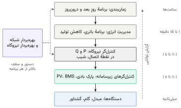
پنج لایه و مقیاسِ زمانیِ هر کدام را برنامهٔ این بخش چاپ میکند:
control layers of Plant P and their time scales (teaching):
layer decides every
device (inverter, WTG) current, pitch, torque ms
subsystem (park, BMS) unit set points, limits 100 ms-1 s
plant controller (PPC) P, Q at the POC, ramps 100 ms-1 s
energy management battery plan, curtailment 1-15 min
scheduling day-ahead, intraday plans hours
each layer follows the one above within its own limits and
reports what it can do; a slower layer never asks a faster
one for more than its capability (chapters 9, 11, 19)| لایه | ورودی | خروجی | اگر از کار بیفتد |
|---|---|---|---|
| دستگاه (مبدل، توربین) | نقطهٔ تنظیمِ جریان، توان، زاویهٔ گام | جریان و ولتاژ در پایانه | حفاظتِ خودِ دستگاه آن را از مدار خارج میکند |
| زیرسامانه (پارک، BMS) | سهمِ زیرسامانه از توان | نقطهٔ تنظیمِ هر دستگاه | دستگاهها روی آخرین مقدار یا حالتِ پیشفرض میمانند |
| کنترلگرِ نیروگاه (PPC) | سقف، نقطهٔ تنظیمِ P و Q | سهمِ هر زیرسامانه | زیرسامانهها به حالتِ پشتیبان میروند (بخش 20.3.7) |
| مدیریتِ انرژی (EMS) | پیشبینی، قیمت، برنامه | برنامهٔ باتری و کاهشِ تولید | کنترلگرِ نیروگاه با آخرین برنامهٔ معتبر یا بیباتری کار میکند |
| زمانبندی | بازار، قرارداد، پیشبینیِ بلند | برنامهٔ روزِ بعد و درونروز | برنامهٔ پیشفرضِ قرارداد یا دستورِ بهرهبردار |
سه قاعده این ساختار را سرِ پا نگه میدارد:
- جداییِ زمانی. هر لایه دستکم چند برابر کندتر از لایهٔ زیرین است؛ لایهٔ کند پاسخِ لایهٔ تند را «تمامشده» میبیند و با آن نمیجنگد. اگر دو حلقه سرعتِ نزدیک داشته باشند، ممکن است با هم نوسان کنند (بخش 20.2.3).
- حد از پایین، دستور از بالا. حدهای ایمنی (جریانِ مبدل، دمای سلول، ولتاژِ پایانه) در پایینترین لایه اعمال میشوند و هیچ دستورِ بالایی نمیتواند آنها را بشکند.
- گزارشِ توانایی. هر لایه میگوید چه میتواند (توانِ در دسترس، حدِ توانِ راکتیو، انرژیِ قابلِ برداشت). لایهٔ بالا هرگز بیش از این را نمیخواهد؛ اگر بخواهد، لایهٔ پایین آن را محدود میکند و هشدار میدهد (مثال 20.25).
20.2.2 هدفهای کار و اختیارِ بهرهبردار
هدفها. مدیریتِ انرژی (به انگلیسی energy management system, EMS) در هر لحظه چند هدف را با هم دنبال میکند و ترتیبِ آنها مهمتر از خودِ آنهاست:
- ایمنی و حفاظتِ تجهیزات: هیچ برنامهای حدِ دما، جریان، ولتاژ و حالتِ شارژ را نمیشکند.
- اجرای دستورِ بهرهبردارِ شبکه: سقفِ صادرات، توقف، یا خدمتی که شبکه فراخوانده است.
- تعهدهای قراردادی: برنامهٔ اعلامشده، ذخیرهٔ فروختهشده، ضریبِ توان در نقطهٔ اتصال.
- ارزش: فروشِ انرژی در ساعتهای گرانتر، کمترین کاهشِ تولید، کمترین جریمهٔ عدمِ تعادل.
- عمرِ تجهیزات: فرسایشِ باتری و چرخههای مبدلها (بخش 19.2.8).
قیدها. هر هدف درونِ قیدهایی تعقیب میشود: حدِ صادرات در نقطهٔ اتصال، حدِ شیبِ تغییرِ توان (اگر قواعدِ شبکه بخواهد)، توانِ راکتیوِ خواستهشده، پنجرهٔ حالتِ شارژ و توانِ مبدلِ باتری، و قاعدهٔ «شارژ فقط از نیروگاه» (A-012). بخش 20.3 این قیدها را یکییکی با عدد میسازد.
پیشبینی، برنامه و دیسپاچ سه کارِ جدا هستند. پیشبینی میگوید چه خواهد شد؛ برنامهریزی (به انگلیسی scheduling) تصمیم میگیرد چه باید بشود؛ دیسپاچ (به انگلیسی dispatch) در لحظه با آنچه هست کار میکند. سه کار سه افق دارند (روزِ بعد، درونروز، زمانِ واقعی) و هر کدام پروندهای جدا میخواهد تا بعدها روشن باشد خطا از کجا آمده است. بخش 20.6 این جدایی را با دادههای فصلِ ۱۵ عددی میکند.
اختیارِ بهرهبردار. دو بهرهبردار در کارند: بهرهبردارِ شبکه که امنیتِ شبکه را دارد، و بهرهبردارِ نیروگاه که ایمنیِ نیروگاه را. دستورِ بهرهبردارِ شبکه (سقف، توقف، فراخوانیِ خدمت) بالاتر از هر برنامهٔ اقتصادی است؛ بهرهبردارِ نیروگاه میتواند برای ایمنی هر کاری را متوقف کند، حتی اگر شبکه چیز دیگری بخواهد، و باید فوری خبر دهد. این ترتیب اختراعِ کتاب نیست و در هر پروژه از قرارداد و قواعدِ شبکه میآید (فصلهای ۱۷ و ۲۸)؛ کنترلگر فقط آن را اجرا میکند و هر جابهجاییِ اختیار را ثبت میکند.
تنظیماتِ کنترلگرِ نیروگاه (بهرهها، باند مردهها، حدِ شیب، زمانِ پاسخ) بخشی از قراردادِ اتصال و مطالعاتِ شبکه است و بهرهبردارِ شبکه آنها را میپذیرد یا تعیین میکند. همهٔ مقدارهای این فصل آموزشیاند (A-299 تا A-303) و هیچکدام الزامِ هیچ شبکهای نیست. تغییرِ تنظیماتِ کنترلگرِ یک نیروگاهِ در حالِ کار فقط با روالِ مدیریتِ تغییر و اجازهٔ بهرهبردار مجاز است (بخش 20.4.4).
مثال 20.1 (یک دستور از بالا تا پایین) پرسش. بهرهبردارِ شبکه در ساعتِ 11:00 سقفِ صادرات را از 100 MW به 80 MW میآورد و تولیدِ نیروگاه 105 MW است. مسیرِ این دستور را از بالا تا پایین بنویسید.
پاسخ. (۱) دستور با مهرِ زمان به کنترلگرِ نیروگاه میرسد و ثبت میشود؛ (۲) کنترلگر نقطهٔ تنظیمِ P را با شیبِ مجاز به 80 MW میبرد؛ (۳) مدیریتِ انرژی میپرسد آیا باتری میتواند بخشی از مازاد را بگیرد: اگر جای خالی دارد تا 20 MW شارژ میکند و بقیه کاهشِ تولید است؛ (۴) کنترلگرهای پارکهای بادی و PV سهمِ کاهش را بنا بر قاعدهٔ قرارداد (مثال 20.11) میانِ دستگاهها پخش میکنند؛ (۵) مبدلها و توربینها نقطهٔ تنظیم را در چند ثانیه دنبال میکنند؛ (۶) هر لایه آنچه را توانست و نتوانست گزارش میکند.
وارسی. در مثال 20.24 همین وضع در ساعتهای 11 تا 14 یک روزِ واقعیِ دادهها رخ میدهد: باتری در ساعتِ 11 با 20 MW شارژ میکند و 5.2 MWh کاهشِ تولید باقی میماند.
- پنج لایهٔ کنترل را با مقیاسِ زمانیِ هر کدام نام ببرید.
- چرا حدهای ایمنی در پایینترین لایه اعمال میشوند؟
- سه کارِ «پیشبینی»، «برنامهریزی» و «دیسپاچ» را با یک جمله از هم جدا کنید.
- اگر بهرهبردارِ شبکه سقف بدهد و برنامهٔ اقتصادی دشارژ بخواهد، کدام برنده است و چرا؟
- اگر کنترلگرِ نیروگاه از کار بیفتد، زیرسامانهها چه کنند؟
- «گزارشِ توانایی» چه چیزهایی را باید دربر داشته باشد؟
20.2.3 حلقهٔ بسته: کنترلگرِ تناسبیانتگرالی روی نیروگاه
ایده. کنترلگرِ نیروگاه توانِ نقطهٔ اتصال را اندازه میگیرد، با نقطهٔ تنظیم مقایسه میکند و فرمانی به پارکها میفرستد تا اختلاف کم شود. این حلقهٔ بسته (به انگلیسی closed loop) است (شکل 20.2). پاسخِ پارک به فرمان آنی نیست: توربینها و مبدلها با تأخیر و شیب دنبال میکنند. سادهترین مدلِ این رفتار سامانهٔ مرتبهٔ اول است:
\[ \tau \frac{dy}{dt} = u - y \tag{20.1}\]
که در آن \(y\) توانِ نقطهٔ اتصال، \(u\) فرمان و \(\tau\) ثابتِ زمانیِ پارک است (برای پارکِ آموزشیِ ما \(\tau=2\,\text{s}\)). کنترلگرِ تناسبیانتگرالی (به انگلیسی PI) فرمان را از خطا \(e = r - y\) میسازد:
\[ u = k_p\, e + k_i \int_0^t e\, dt \tag{20.2}\]
بخشِ تناسبی سریع واکنش میدهد و بخشِ انتگرالی خطای ماندگار را صفر میکند: تا خطا هست، انتگرال رشد میکند و فرمان را جلو میبرد.
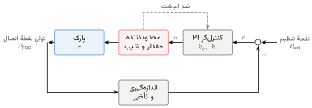
تحلیل. با جایگذاریِ معادلهٔ 20.2 در معادلهٔ 20.1 و یک بار مشتقگیری، معادلهٔ حلقهٔ بسته برای نقطهٔ تنظیمِ ثابت به دست میآید:
\[ \tau \ddot{y} + (1+k_p)\,\dot{y} + k_i\, y = k_i\, r \tag{20.3}\]
این یک سامانهٔ مرتبهٔ دوم است با بسامدِ طبیعی و ضریبِ میرایی
\[ \omega_\text{n} = \sqrt{\frac{k_i}{\tau}}, \qquad \zeta = \frac{1+k_p}{2\sqrt{\tau\, k_i}} \tag{20.4}\]
اگر \(\zeta \ge 1\) پاسخ بینوسان است و هرچه \(\omega_\text{n}\) بزرگتر، سریعتر. اما فرمان در معادلهٔ 20.2 جملهٔ \(k_p e\) را هم دارد که تغییرِ ناگهانیِ نقطهٔ تنظیم را مستقیم به فرمان میبرد؛ این جمله در سمتِ راستِ معادلهٔ 20.3 یک صفر میافزاید و پاسخ را کمی بالاتر از آنچه \(\zeta\) پیشبینی میکند میبرد. پس فرمول راهنماست و شبیهسازی داور.
def pi_response(kp: float, ki: float, tau: float, dt: float, n: int,
setpoint: float = 1.0, rate: float | None = None,
u_max: float = 1e9, anti_windup: bool = False):
"""First-order plant dy/dt = (u - y)/tau under a PI controller on
the error; the command u is clipped to +-u_max and, if rate is
given, may change at most rate per second. With anti_windup the
integral stops growing while the command is held by a limit."""
y = u = integ = 0.0
ys, us = [], []
for _ in range(n):
e = setpoint - y
integ += e * dt
want = kp * e + ki * integ
u_new = max(-u_max, min(u_max, want))
if rate is not None:
u_new = u + max(-rate * dt, min(rate * dt, u_new - u))
if anti_windup and abs(u_new - want) > 1e-12:
integ -= e * dt # held by a limit: do not wind up
u = u_new
y += dt * (u - y) / tau
ys.append(y)
us.append(u)
return np.array(ys), np.array(us)a step of the POC set point (normalised to 1); park tau 2 s:
tuning rise 10-90 % s overshoot % settle 2 % s
slow (kp 0.5, ki 0.2) 11.65 0.0 21.4
tuned (kp 1.5, ki 0.8) 2.70 0.1 4.5
aggressive (kp 6, ki 8) 0.45 9.7 2.4
tuned, rate 0.1 pu/s 8.55 82.2 30.0
tuned, rate, anti-windup 11.60 0.0 17.4
a stronger loop is faster but overshoots and rings; a rate
limit turns the response into a ramp, but the integral keeps
growing while the command is held back (windup) and the plant
overshoots badly; anti-windup stops the integral while a
limit holds the command; tuning is checked in simulation and
in a step test (section C)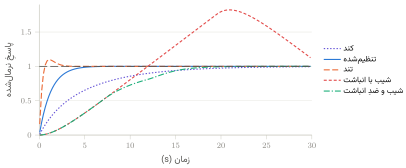
مثال 20.2 (میرایی از فرمول و از شبیهسازی) پرسش. برای سه تنظیمِ کند (\(k_p=0.5\)، \(k_i=0.2\))، تنظیمشده (\(k_p=1.5\)، \(k_i=0.8\)) و تند (\(k_p=6\)، \(k_i=8\)) با \(\tau = 2\,\text{s}\) مقدارهای \(\omega_\text{n}\) و \(\zeta\) را حساب و با خروجیِ بالا مقایسه کنید.
پاسخ. کند:
\[ \omega_\text{n} = \sqrt{0.2/2} = 0.32\,\text{rad/s}, \qquad \zeta = \frac{1.5}{2\sqrt{0.4}} = 1.19 \]
تنظیمشده:
\[ \omega_\text{n} = \sqrt{0.4} = 0.63\,\text{rad/s}, \qquad \zeta = \frac{2.5}{2\sqrt{1.6}} = 0.99 \]
تند:
\[ \omega_\text{n} = \sqrt{4} = 2\,\text{rad/s}, \qquad \zeta = \frac{7}{2\sqrt{16}} = 0.875 \]
تفسیر. کند بیشمیراست و بیفراجهش؛ تنظیمشده تقریباً میرایی بحرانی دارد و فراجهشِ 0.1 % دارد؛ تند باید طبقِ \(\zeta = 0.875\) فقط حدودِ 0.3 % فراجهش داشته باشد، اما شبیهسازی 9.7 % نشان میدهد: اثرِ همان صفر و گامِ زمانیِ گسسته. وارسی: زمانِ خیزِ 10 تا 90 % با بزرگتر شدنِ \(\omega_\text{n}\) کوتاه میشود (11.65، 2.70 و 0.45 s)، ولی نه به نسبتِ عکس: حاصلضربِ زمانِ خیز در \(\omega_\text{n}\) از 3.7 به 1.7 و 0.9 میرسد، چون \(\zeta\) و صفرِ حلقه هم عوض میشوند.
انباشتِ انتگرال. نیروگاهِ واقعی نمیتواند هر فرمانی را اجرا کند: توان سقف دارد و گاهی قواعدِ شبکه شیبِ تغییر را هم محدود میکند. وقتی محدودکننده فرمان را نگه میدارد، خطا باقی میماند و انتگرال همچنان رشد میکند (به انگلیسی integrator windup). وقتی سرانجام خروجی به هدف میرسد، انتگرالِ بزرگشده فرمان را بسیار بالاتر از لازم نگه میدارد و فراجهشِ بزرگی پیش میآید. چارهٔ ساده ضدِ انباشت (به انگلیسی anti-windup) است: تا وقتی محدودکننده فعال است، انتگرال گیری متوقف شود.
مثال 20.3 (فراجهشِ 82 % از یک محدودکننده) پرسش. با تنظیمِ مناسب و محدودیتِ شیبِ 0.1 pu/s، فراجهش بدونِ ضدِ انباشت و با آن چند است؟ چرا؟
پاسخ. از خروجیِ بالا: بدونِ ضدِ انباشت 82.2 % و نشستن پس از 30 s؛ با ضدِ انباشت صفر و نشستن در 17.4 s. شیبدادن بهتنهایی پاسخ را کند میکند (رسیدن به هدف حدودِ 10 s طول میکشد) و در این مدت انتگرالِ خطا بزرگ میشود.
تفسیر. فراجهشِ 82 % در نیروگاهی که به سقفِ صادرات نزدیک است یعنی تخطی از سقف. هر محدودکنندهای که پس از کنترلگرِ انتگرالی بیاید، ضدِ انباشت میخواهد و آزمونِ کنترلگر باید این حالت را جداگانه بیازماید (جدول 20.6). وارسی: با ضدِ انباشت پاسخ هرگز از 1 نمیگذرد (شکل 20.3).
20.2.4 تأخیر: آنچه سرعتِ کنترلگر را محدود میکند
ایده. اندازهگیریِ توان در نقطهٔ اتصال از راهِ ترانسفورماتورِ اندازهگیری، فیلتر، کنترلگر و شبکهٔ ارتباطی میآید و چند صد میلیثانیه دیر میرسد. کنترلگر بر پایهٔ خروجیِ کهنه تصمیم میگیرد. اگر تند باشد، پیش از آنکه اثرِ فرمانِ قبلی را ببیند فرمانِ تازهای میدهد و نوسان آغاز میشود.
def delayed_loop(kp: float, ki: float, tau: float, delay_s: float,
dt: float = 0.05, n: int = 1200):
"""PI loop on a first-order plant whose measurement arrives delay_s
late (communication and filtering): returns the response."""
lag = int(round(delay_s / dt))
y = integ = 0.0
hist = [0.0] * (lag + 1)
ys = []
for _ in range(n):
e = 1.0 - hist[0] # the controller sees old y
integ += e * dt
u = kp * e + ki * integ
y += dt * (u - y) / tau
hist = hist[1:] + [y]
ys.append(y)
return np.array(ys)the same tunings with a measurement delay (park tau 2 s):
tuning delay s overshoot % still moving at 60 s
tuned (1.5, 0.8) 0.0 0.1 no
tuned (1.5, 0.8) 0.2 0.1 no
tuned (1.5, 0.8) 0.5 1.1 no
tuned (1.5, 0.8) 1.0 31.3 no
aggressive (6, 8) 0.0 9.7 no
aggressive (6, 8) 0.2 47.8 no
aggressive (6, 8) 0.5 unstable yes
aggressive (6, 8) 1.0 unstable yes
a 0.2 s delay that the tuned loop shrugs off makes the
aggressive loop overshoot by half, and at 0.5 s it grows
without bound; even the tuned loop rings at 1 s: delay, not
gain alone, sets how fast a plant controller may be; the
delay of the real path is measured at commissioningمثال 20.4 (نیمثانیه که حلقه را ناپایدار میکند) پرسش. کنترلگرِ تند با تأخیرِ 0.5 s چه رفتاری دارد و کنترلگرِ تنظیمشده چه؟ نتیجه برای طراحی چیست؟
پاسخ. تند با 0.2 s تأخیر 47.8 % فراجهش دارد و با 0.5 s ناپایدار است (پاسخ بیمرز رشد میکند). تنظیمشده با 0.5 s فقط 1.1 % و با 1 s 31.3 % فراجهش دارد ولی پایدار میماند.
تفسیر. حاشیهٔ پایداری با تأخیر مصرف میشود؛ هرچه حلقه تندتر، حاشیه کمتر. پس تأخیرِ واقعیِ مسیر (از اندازهگیری تا فرمانِ مبدل) باید در راهاندازی اندازهگیری شود و با فرضِ طراحی مقایسه شود؛ اگر بیشتر است، بهرهها پیش از هر آزمونِ پاسخ کم شوند. وارسی: قاعدهٔ سرانگشتی: زمانِ پاسخِ حلقه دستکم چند برابرِ تأخیر باشد؛ برای تنظیمشده \(1/\omega_\text{n} = 1.6\,\text{s}\) در برابرِ 0.5 s.
- معادلهٔ سامانهٔ مرتبهٔ اول را بنویسید و \(\tau\) را معنا کنید.
- چرا بخشِ انتگرالی خطای ماندگار را صفر میکند؟
- \(\omega_\text{n}\) و \(\zeta\) را برای \(k_p=1\)، \(k_i=0.5\) و \(\tau=2\,\text{s}\) حساب کنید.
- انباشتِ انتگرال چیست و چه زمانی رخ میدهد؟
- چرا فرمولِ \(\zeta\) فراجهشِ کنترلگرِ تند را کمتر از شبیهسازی نشان میدهد؟
- اثرِ تأخیرِ اندازهگیری را بر حلقه با یک جمله بیان کنید.
- در آزمونِ راهاندازی کدام کمیتِ زمانی باید اندازهگیری شود؟
- شیبدادن به فرمان چه سود و چه هزینهای دارد؟
20.2.5 کنترلگرِ گسسته: دورهٔ نمونهبرداری
ایده. کنترلگرِ نیروگاه رایانه است و پیوسته کار نمیکند: هر \(T_\text{s}\) ثانیه یک بار اندازه میخواند، حساب میکند و فرمان میفرستد و فرمان تا دورِ بعد ثابت میماند (نگهدارِ مرتبهٔ صفر). اثرِ این نگهداشتن بهطورِ میانگین مانندِ تأخیرِ نیمِ دوره است: فرمانی که در آغازِ دوره درست بود، در پایانِ دوره کهنه است. انتگرال هم بهجای انتگرالِ پیوسته با جمعِ \(e\,T_\text{s}\) ساخته میشود.
def sampled_pi(kp, ki, tau, ts, t_end=40.0, dt=0.01):
"""PI controller updated every ts seconds (command held between
updates) on a first-order plant integrated with a fine step."""
y = u = integ = 0.0
every = max(1, int(round(ts / dt)))
ys = []
for k in range(int(t_end / dt)):
if k % every == 0:
e = 1.0 - y
integ += e * ts
u = kp * e + ki * integ
y += dt * (u - y) / tau
ys.append(y)
return np.array(ys)the tuned and the aggressive PI run at a sample period ts:
tuning ts s overshoot % settle 2 % s
tuned (1.5, 0.8) 0.05 0.1 4.5
tuned (1.5, 0.8) 0.20 0.0 4.4
tuned (1.5, 0.8) 0.50 0.0 4.2
tuned (1.5, 0.8) 1.00 0.0 4.4
aggressive (6, 8) 0.05 9.9 2.4
aggressive (6, 8) 0.20 11.6 2.1
aggressive (6, 8) 0.50 121.7 40.0
aggressive (6, 8) 1.00 unstable 40.0
holding the command between updates acts like a delay of
about half a period: the tuned loop does not notice even 1 s,
the aggressive one overshoots 122 % at 0.5 s and fails at
1 s; the controller's cycle time belongs in the delay budgetمثال 20.5 (چرخهٔ یکثانیهای) پرسش. کنترلگرِ تنظیمشده و تند را با دورههای 0.05 تا 1 s مقایسه کنید. کدام به دوره حساس است و چرا؟
پاسخ. تنظیمشده حتی با 1 s فراجهش ندارد و در حدودِ 4.4 s مینشیند. تند با 0.2 s 11.6 %، با 0.5 s 122 % فراجهش دارد و در 40 s نمینشیند، و با 1 s ناپایدار است.
تفسیر. قاعدهٔ سرانگشتی: دورهٔ نمونهبرداری باید چند بار کوچکتر از زمانِ پاسخِ حلقه باشد. برای تنظیمشده \(1/\omega_\text{n} = 1.6\,\text{s}\) است و 1 s هنوز قابلِ تحمل؛ برای تند \(1/\omega_\text{n} = 0.5\,\text{s}\) و دورهٔ 0.5 s برابرِ آن است. نیمِ دورهٔ چرخه در بودجهٔ تأخیر (مثال 20.20) میآید. وارسی: با دورهٔ 0.05 s نتیجه همان شبیهسازیِ پیوسته است (9.9 در برابرِ 9.7 %).
20.2.6 دو حلقهٔ تو در تو: جداییِ مقیاسهای زمانی به عدد
ایده. کنترلگرِ نیروگاه (حلقهٔ بیرونی) نقطهٔ تنظیم را به کنترلگرِ پارک یا مبدل (حلقهٔ درونی) میدهد. طراحِ حلقهٔ بیرونی معمولاً فرض میکند حلقهٔ درونی آنی است. اگر نباشد چه؟ فرض کنید حلقهٔ بیرونی کنترلِ انتگرالیِ خالص با ثابتِ زمانیِ مطلوبِ \(\tau_\text{o}\) است و حلقهٔ درونی با \(\tau_\text{i}\) پاسخ میدهد. معادلهٔ حلقهٔ بسته:
\[ \tau_\text{i}\,\tau_\text{o}\,\ddot{y} + \tau_\text{o}\,\dot{y} + y = r, \qquad \zeta = \frac{1}{2}\sqrt{\frac{\tau_\text{o}}{\tau_\text{i}}} \tag{20.5}\]
پس میرایی فقط به نسبتِ دو ثابتِ زمانی بستگی دارد. برای \(\zeta = 1\) (بی فراجهش) نسبت باید دستکم 4 باشد.
def cascade(tau_out: float, tau_in: float, t_end=40.0, dt=0.005):
"""Outer integral loop (closed-loop time constant tau_out if the
inner loop were instant) on an inner loop that answers with tau_in."""
ki = 1.0 / tau_out
y = integ = 0.0
ys = []
for _ in range(int(t_end / dt)):
integ += (1.0 - y) * dt
u = ki * integ
y += dt * (u - y) / tau_in
ys.append(y)
return np.array(ys)outer loop on an inner loop: ratio of their time constants:
tau_out/tau_in zeta (formula) overshoot % (formula) (simulated)
20.0 2.24 0.0 0.0
5.0 1.12 0.0 0.0
2.0 0.71 4.3 4.2
1.0 0.50 16.3 16.1
0.5 0.35 30.5 30.2
zeta = 0.5 sqrt(ratio): the outer loop must be about four
times slower than the inner one to avoid overshoot; this is
the 'separation of time scales' of the hierarchy in numbers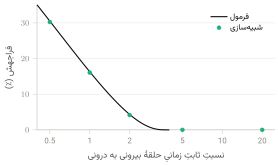
مثال 20.6 (چهار برابر کندتر) پرسش. حلقهٔ درونیِ مبدل با \(\tau_\text{i} = 0.2\,\text{s}\) پاسخ میدهد. اگر کنترلگرِ نیروگاه بخواهد با \(\tau_\text{o} = 0.4\,\text{s}\) کار کند، فراجهش چقدر است؟ کمترین \(\tau_\text{o}\) بی فراجهش؟
پاسخ. نسبت 2، \(\zeta = 0.5\sqrt{2} = 0.71\) و فراجهش طبقِ فرمول 4.3 % (شبیهسازی 4.2 %). بی فراجهش: \(\tau_\text{o} \ge 4 \times 0.2 = 0.8\,\text{s}\).
تفسیر. همان قاعدهٔ «جداییِ زمانی» در بخش 20.2.1، اینجا با عدد: هر لایه چند برابر کندتر از لایهٔ زیرینش. اگر حلقهٔ بیرونی تندتر از این شود، دو حلقه با هم کشمکش میکنند و فراجهش و نوسان پدید میآید؛ همین در لایههای بالاتر هم صادق است: برنامهریزِ پانزدهدقیقهای نباید با کنترلگرِ یکثانیهای بجنگد. وارسی: با نسبتِ 1، \(\zeta = 0.5\) و فراجهشِ 16.3 %؛ شبیهسازی 16.1 %.
- نگهدارِ مرتبهٔ صفر بهطورِ میانگین چه تأخیری میسازد؟
- چرا کنترلگرِ تند به دورهٔ نمونهبرداری حساستر است؟
- \(\zeta\) را برای نسبتِ 9 حساب کنید.
- حلقهٔ درونیِ 0.5 s است؛ کمترین ثابتِ زمانیِ حلقهٔ بیرونیِ بیفراجهش چیست؟
- «جداییِ زمانی» را با معادلهٔ 20.5 توضیح دهید.
20.2.7 افتِ مشخصه: پاسخ به بسامد و ولتاژ
ایده. بسامدِ شبکه آیینهٔ تعادلِ توان است: اگر تولید از مصرف کمتر شود بسامد پایین میآید و برعکس. ژنراتورهای بزرگ با افتِ مشخصه (به انگلیسی droop) به این تغییر پاسخ میدهند: هرچه بسامد پایینتر، توانِ بیشتر. همین منطق را کنترلگرِ نیروگاهِ تجدیدپذیر هم میتواند اجرا کند، اگر قواعدِ شبکه و قرارداد آن را بخواهند یا اجازه دهند. با افتِ \(s_\text{d}\) (نسبتِ تغییرِ نسبیِ بسامد به تغییرِ نسبیِ توان) و باند مردهٔ \(f_\text{db}\):
\[ \Delta P = -\frac{\Delta f_\text{eff}}{f_\text{n}\, s_\text{d}}\, P_\text{r}, \qquad \Delta f_\text{eff} = \operatorname{sign}(\Delta f)\,\max(|\Delta f| - f_\text{db},\, 0) \tag{20.6}\]
افتِ \(s_\text{d} = 0.04\) یعنی تغییرِ 4 % در بسامد (2 Hz) کلِ توانِ نامی را جابهجا میکند. باند مرده جلوی واکنش به نوسانهای کوچک و همیشگی را میگیرد.
برای ولتاژ، کنترلگر توانِ راکتیو را با ولتاژِ نقطهٔ اتصال تنظیم میکند (قراردادِ مولد: مثبت یعنی تزریقِ راکتیو، D-010):
\[ Q = -\frac{\Delta V}{s_\text{q}}\, Q_\text{max}, \qquad |Q| \le Q_\text{max} \tag{20.7}\]
def droop_power(df_hz, p_rated: float, droop: float = 0.05,
deadband_hz: float = 0.0, f_nom: float = 50.0):
"""Change of active power for a frequency deviation (MW): -df/f_nom
/ droop * p_rated outside a deadband (teaching settings)."""
df = np.asarray(df_hz, float)
eff = np.sign(df) * np.clip(np.abs(df) - deadband_hz, 0, None)
return -eff / f_nom / droop * p_rated
def droop_reactive(dv_pu, q_max: float, slope: float = 0.04):
"""Reactive power for a voltage deviation (per unit): -dv/slope *
q_max, clipped to +-q_max (generator convention, + = export)."""
q = -np.asarray(dv_pu, float) / slope * q_max
return np.clip(q, -q_max, q_max)frequency droop of Plant P (teaching settings, A-299):
frequency Hz change MW (4 % droop, 0.02 Hz deadband, 110 MW)
49.80 +9.9
49.90 +4.4
49.97 +0.6
50.00 +0.0
50.10 -4.4
50.30 -15.4
a fall in frequency asks for more power: a plant at full
output has none to give unless it was held below its
available power (headroom) or a battery gives it; a rise
is met by curtailing (section B)
voltage-reactive droop at the POC (4 % slope, 33 Mvar):
voltage pu reactive Mvar (+ export)
0.96 +33.0
0.98 +16.5
1.00 +0.0
1.01 -8.3
1.03 -24.8
settings, deadbands and whether the service is wanted at all
come from the operator and the contract (chapter 28)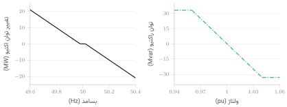
مثال 20.7 (بسامد 49.9 Hz) پرسش. با افتِ 4 %، باند مردهٔ 0.02 Hz و 110 MW توانِ نامی، نیروگاه در بسامدِ 49.9 Hz چقدر توانِ بیشتر باید بدهد؟ اگر در این لحظه با توانِ کاملِ در دسترس کار کند، از کجا؟
پاسخ.
\[ \Delta f_\text{eff} = -(0.1 - 0.02) = -0.08\,\text{Hz} \]
\[ \Delta P = \frac{0.08}{50 \times 0.04} \times 110 = 4.4\,\text{MW} \]
تفسیر. نیروگاهی که همهٔ توانِ در دسترسش را میفروشد جای بالارو ندارد (به انگلیسی headroom). یا باید از پیش زیرِ توانِ در دسترس کار کند (کنترلِ دلتا، مثال 20.43) یا باتری این توان را بدهد (بخش 20.3.6). در بسامدِ بالاتر از عادی کار ساده است: کاهشِ تولید. وارسی: خروجیِ بالا برای 49.9 Hz همان +4.4 MW را نشان میدهد.
مثال 20.8 (ولتاژِ 0.98 pu) پرسش. با شیبِ 4 % و 33 Mvar، در ولتاژِ 0.98 pu و 1.03 pu چه توانِ راکتیوی خواسته میشود؟
پاسخ. \(Q = 0.02/0.04 \times 33 = 16.5\,\text{Mvar}\) تزریق در 0.98 pu؛ \(Q = -0.03/0.04 \times 33 = -24.8\,\text{Mvar}\) جذب در 1.03 pu.
تفسیر. ولتاژِ پایین تزریقِ راکتیو میخواهد و ولتاژِ بالا جذب. اینکه نیروگاه در هر توانِ اکتیو این مقدار را میتواند بدهد، به منحنیِ توانایی بستگی دارد (بخش 20.3.3).
افت، باند مرده، شیبِ ولتاژ، زمانِ پاسخ و اینکه این خدمتها اصلاً خواسته شوند یا نه را قواعدِ شبکه و قراردادِ اتصال تعیین میکنند. استانداردهایی مانندِ IEEE Std 2800-2022 نمونهای از الزامهای هماهنگشده برای نیروگاههای مبتنی بر مبدلاند و در برخی شبکهها پذیرفته شدهاند، اما این کتاب هیچ عددی از آنها نقل نمیکند (بخش 20.15).
- افتِ 5 % روی 60 MW در بسامدِ 50.2 Hz بی باند مرده چه تغییری میخواهد؟
- باند مرده چه سودی دارد و پهنشدنِ آن چه خطری؟
- چرا نیروگاهی که با توانِ کامل کار میکند نمیتواند به افتِ بسامد پاسخ دهد؟
- در قراردادِ مولد، علامتِ توانِ راکتیو در ولتاژِ بالا چیست؟
- چه کسی تعیین میکند که پاسخِ بسامد خواسته شود یا نه؟
20.2.8 دیسپاچ بهشکلِ مسئلهٔ بهینهسازی
ایده. برنامهٔ باتری را میتوان با قاعده نوشت («ظهر شارژ، عصر دشارژ») اما قاعده نمیداند فردا چه قیمتی دارد یا سقفِ صادرات کجا میافتد. بهتر است هدف و قیدها را صریح بنویسیم و بهترین برنامه را حساب کنیم. با شارژِ \(c_t\)، دشارژِ \(d_t\)، انرژیِ ذخیرهٔ \(E_t\) و قیمتِ \(\pi_t\) در ساعتِ \(t\):
\[ \begin{aligned} \max\ & \sum_{t} \bigl[\pi_t\,(d_t - c_t) - w\, d_t\bigr] \\ \text{s.t.}\ & E_{t+1} = E_t + \eta\, c_t - d_t/\eta \\ & E_\text{min} \le E_t \le E_\text{max} \\ & 0 \le c_t \le \min(P_\text{r},\ P^\text{plant}_t) \\ & 0 \le d_t \le \min(P_\text{r},\ C_t - P^\text{plant}_t) \\ & E_0 = E_\text{start},\quad E_{24} = E_\text{end} \end{aligned} \tag{20.8}\]
در اینجا \(\eta\) بازدهِ یکسویه، \(w\) هزینهٔ فرسایشِ هر مگاواتساعتِ دشارژ (بخش 19.5.5)، \(P^\text{plant}_t\) تولیدِ نیروگاه و \(C_t\) سقفِ صادرات است. قیدِ چهارم «شارژ فقط از نیروگاه» (A-012) را میگوید و قیدِ پنجم «دشارژ فقط در جای خالیِ زیرِ سقف».
برنامهریزیِ پویا. چون انرژیِ ذخیره تنها پیوندِ میانِ ساعتهاست، مسئله با برنامهریزیِ پویا (به انگلیسی dynamic programming) حل میشود. انرژی را به گامهای 1 MWh تقسیم میکنیم و از آخرِ روز به عقب، ارزشِ باقیِ روز را از هر انرژی حساب میکنیم:
\[ V_t(E) = \max_{E'} \bigl[\pi_t\, p(E, E') - w\, p^{+}(E, E') + V_{t+1}(E')\bigr] \tag{20.9}\]
که \(p(E,E')\) توانِ لازم برای رفتن از \(E\) به \(E'\) است (مثبت برای دشارژ) و انتخابهای ناممکن (بیرون از قیدها) کنار گذاشته میشوند. \(V_{24}\) فقط در انرژیِ پایانی صفر است و بقیه منفیِ بینهایت؛ پس برنامه حتماً در انرژیِ پایانیِ خواستهشده تمام میشود.
def dp_schedule(price, charge_cap, export_room, p_max: float, e_min: float,
e_max: float, e0: float, eta: float, step: float = 1.0,
wear: float = 0.0, floor=None, e_end: float | None = None):
"""Best hourly battery plan: charge c_t <= min(p_max, charge_cap_t)
(energy the plant can give), discharge d_t <= min(p_max,
export_room_t); start and end at e0; revenue = sum price (d - c)
- wear d; optional floor_t: least energy at the start and end of
hour t (a held reserve); e_end: energy at the end (default e0).
Returns (revenue, energy path, power: + discharge)."""
price = np.asarray(price, float)
grid = np.arange(e_min, e_max + step / 2, step)
n_s, n_t = grid.size, price.size
i0 = int(np.argmin(np.abs(grid - e0)))
delta = grid[None, :] - grid[:, None] # [from, to]
power = np.where(delta > 0, -delta / eta, -delta * eta)
i_end = i0 if e_end is None else int(np.argmin(np.abs(grid - e_end)))
value = np.full(n_s, -np.inf)
value[i_end] = 0.0
choice = np.zeros((n_t, n_s), dtype=int)
for t in range(n_t - 1, -1, -1):
ok = ((power <= min(p_max, export_room[t]) + 1e-9)
& (-power <= min(p_max, charge_cap[t]) + 1e-9))
if floor is not None:
low = floor[t] - 1e-9
ok &= (grid[:, None] >= low) & (grid[None, :] >= low)
gain = price[t] * power - wear * np.maximum(power, 0) + value[None, :]
gain[~ok] = -np.inf
choice[t] = np.argmax(gain, axis=1)
value = gain[np.arange(n_s), choice[t]]
path = [i0]
for t in range(n_t):
path.append(int(choice[t, path[-1]]))
p = power[path[:-1], path[1:]]
return float(value[i0]), grid[path], pپارامترِ floor کفِ انرژی را در هر ساعت میدهد: کمترین انرژیای که برای یک خدمتِ ذخیره باید نگه داشته شود (بخش 20.9). اگر هیچ مسیرِ مجازی نباشد، ارزش منفیِ بینهایت برمیگردد و برنامهریز میفهمد که خدمت در آن روز ممکن نیست.
مثال 20.9 (چهار ساعت با دست) پرسش. باتریای با 0 تا 20 MWh، توانِ 20 MW، بازدهِ 1 و قیمتهای 10، 50، 10، 50 از صفر شروع و به صفر تمام میکند. بهترین درآمد چیست؟ اگر در ساعتِ دوم انرژی دستکم 10 MWh بماند چه؟
پاسخ. بیقید: دو بار شارژِ کامل در قیمتِ 10 و دشارژ در 50:
\[ 2 \times (20 \times 50 - 20 \times 10) = 1{,}600 \]
با کف: ساعتِ دوم فقط 10 MWh دشارژ میشود، ساعتِ سوم 10 MWh شارژ و ساعتِ چهارم 20 MWh دشارژ:
\[ -200 + 500 - 100 + 1{,}000 = 1{,}200 \]
تفسیر. کف 400 واحد هزینه دارد: این هزینهٔ فرصتِ نگهداشتنِ ذخیره است و قیمتِ خدمت باید دستکم آن را بپوشاند (مثال 20.49). وارسی: همین دو عدد در آزمونهای خودکارِ ماژولِ کنترل بررسی میشوند.
- قیدِ «شارژ فقط از نیروگاه» در معادلهٔ 20.8 کدام است؟
- چرا برنامهریزیِ پویا از آخرِ روز به عقب حساب میکند؟
- اگر گامِ انرژی را از 1 به 0.5 MWh برسانیم، حجمِ محاسبه چند برابر میشود؟
- هزینهٔ فرسایش در معادلهٔ 20.8 چه اثری بر تعدادِ چرخهها دارد؟
- «ارزشِ منفیِ بینهایت» در خروجیِ برنامهریز چه پیامی دارد؟
20.2.9 افقِ لغزان: برنامهریزی برای چند ساعتِ پیش رو
ایده. برنامهریزِ روزانه یک بار برای ۲۴ ساعت برنامه میسازد. راهِ دیگر افقِ لغزان است (به انگلیسی receding horizon، هستهٔ «کنترلِ پیشبین» یا MPC): هر ساعت برای \(H\) ساعتِ پیش رو بهترین برنامه را حساب کن، فقط ساعتِ اول را اجرا کن، و ساعتِ بعد با انرژیِ واقعی و پیشبینیِ تازه دوباره حساب کن. دو مزیت دارد: هر برنامه از واقعیتِ تازه آغاز میشود، و قیدهای تازه (سقف، خرابی) فوراً دیده میشوند. پرسشِ طراحی: \(H\) چقدر باشد؟
def receding(h_ahead: int, wear: float = 10.0) -> float:
"""Every hour, plan the next h_ahead hours from the day-ahead
forecast (ending at e_min) and execute only the first hour."""
act = np.clip(src.poc_actual(), 0, None)
fc = np.clip(src.poc_forecast(24), 0, None)
cap, price = eb.caps(), src.prices()
c = ct.Controller(e=L["e_min"])
val = 0.0
for t in range(8760 - h_ahead):
g = slice(t, t + h_ahead)
_, _, plan = ct.dp_schedule(price[g], np.minimum(fc[g], L["bess_mw"]),
np.clip(cap[g] - fc[g], 0, None),
L["bess_mw"], L["e_min"], L["e_max"],
round(c.e), L["eta"], wear=wear,
e_end=L["e_min"])
r = c.step(t, act[t], plan[0], cap[t], True)
val += r["export"] * price[t]
return valreceding-horizon dispatch: look-ahead length (8,736 hours):
look-ahead h battery adds k u
2 165
4 383
8 465
12 468
24 468
a plan that sees only a few hours sells the battery too
early (it must end empty); with prices that change between
morning, midday and evening a look-ahead of about half a day
captures almost all the value; re-planning every hour lets
each plan use the latest energy and forecastمثال 20.10 (نیمروز کافی است) پرسش. با افقهای 2، 4، 8، 12 و 24 ساعت، باتری چقدر به ارزشِ صادرات میافزاید؟ چرا افقِ کوتاه بد است؟
پاسخ. 165، 383، 465، 468 و 468 هزار واحد در سال.
تفسیر. برنامه با افقِ کوتاه باید در پایانِ افق خالی باشد (\(E_\text{end} = E_\text{min}\)) و قیمتِ گرانِ عصر را نمیبیند؛ پس باتری را زود و ارزان میفروشد یا اصلاً پر نمیکند. وقتی افق فاصلهٔ ظهرِ ارزان تا عصرِ گران را دربر بگیرد (حدودِ هشت ساعت)، تقریباً همهٔ ارزش به دست میآید. افقِ ۲۴ ساعته همان ارزشِ برنامهٔ روزانه را دارد (469 در مثال 20.26)؛ برتریِ افقِ لغزان در واکنش است نه در ارزشِ همین سال. وارسی: با افقِ دوساعته فقط جابهجاییهای بسیار کوتاه دیده میشوند.
- افقِ لغزان را در سه گام بنویسید.
- چرا برنامهٔ افقِ کوتاه باتری را زود میفروشد؟
- کمترین افقی که بیش از 99 % ارزش را میگیرد کدام است؟
- دو مزیتِ افقِ لغزان را بر برنامهٔ روزانه بنویسید.
20.3 ب. قیدها و الگوریتمها
20.3.1 حدِ صادرات، سقفِ بهرهبردار و کاهشِ تولید
ایده. صادرات در نقطهٔ اتصال دو سقف دارد: حدِ قراردادیِ ثابت (100 MW برای نیروگاهِ P، بخش 18.3.3) و سقفِ بهرهبردار که شبکه هنگامِ محدودیت (تراکمِ خط، تعمیر، شبهای کمبار) میفرستد. هر توانی که از سقف بیشتر باشد یا باید در باتری برود یا کاهش یابد (به انگلیسی curtailment). کنترلگر این کار را با کاستنِ نقطهٔ تنظیمِ زیرسامانهها انجام میدهد، نه با قطعِ آنها.
برای آموزش، فرض میکنیم بهرهبردار در ۴۰ روزِ آفتابی از 11:00 تا 15:00 سقف را 80 MW میکند (A-302). کاهشِ هر ساعت \(C_t = \max(P_t - \text{cap}_t, 0)\) است. اما سهمِ هر فناوری از این کاهش، یک قاعدهٔ قراردادی است. سه قاعدهٔ رایج:
\[ C^\text{w}_t = C_t\,\frac{P^\text{w}_t}{P^\text{w}_t + P^\text{pv}_t}, \qquad C^\text{pv}_t = C_t - C^\text{w}_t \tag{20.10}\]
(تناسبی با تولید)، «اول PV» (تا جای ممکن از PV کم شود) و «اول باد».
curtailment with operator caps (80 MW on 40 days, 11-15 h, A-302):
total curtailed 904 MWh in 114 hours
rule wind MWh PV MWh
pro rata by output 498 405
PV first 0 904
wind first 904 0
the plant loses the same energy under every rule; who loses
it matters when wind and PV have different owners, prices or
certificates: the rule is a contract term, and the plant
controller only carries it out (chapter 15 allocation)مثال 20.11 (۹۰۴ مگاواتساعت، سه تقسیم) پرسش. با سقفهای آموزشی، کاهشِ کل چقدر است و سهمِ باد و PV زیرِ سه قاعده چه میشود؟ چه کسی باید قاعده را تعیین کند؟
پاسخ. کاهشِ کل 904 MWh در ۱۱۴ ساعت. تناسبی: باد 498 و PV 405 MWh؛ اول PV: همه از PV؛ اول باد: همه از باد.
تفسیر. نیروگاه زیرِ هر سه قاعده همان انرژی را از دست میدهد؛ اما اگر باد و PV مالک، قیمت یا گواهیِ متفاوتی داشته باشند، پولِ هر طرف فرق میکند. پس قاعده یک بندِ قرارداد است و کنترلگر فقط اجرایش میکند؛ هر ساعتِ کاهش با سهمِ هر طرف ثبت میشود تا تسویه ممکن باشد (فصلهای ۱۵ و ۲۱). وارسی: \(498 + 405 = 903 \approx 904\) (گرد کردن).
کاهشِ تولید در عمل. کنترلگر سقف را با حاشیه دنبال میکند: اگر هدف 80 MW است، نقطهٔ تنظیم کمی پایینتر مینشیند تا نوسانهای کوتاهِ باد از سقف عبور نکند. حاشیه خودش انرژی است: 0.5 MW حاشیه در ۱۶۰ ساعتِ سقفِ سال 80 MWh هزینه دارد. اندازهٔ حاشیه از دقتِ اندازهگیری، سرعتِ حلقه (بخش 20.2.3) و تحملی که قرارداد میدهد میآید.
- دو نوعِ سقفِ صادرات را نام ببرید.
- کاهشِ تولید در یک ساعت با تولیدِ 96 MW و سقفِ 80 MW چقدر است؟
- اگر باد 60 MW و PV 36 MW باشد، سهمِ تناسبیِ هر کدام از کاهشِ پرسشِ ۲ چیست؟
- چرا قاعدهٔ تقسیم بندِ قرارداد است نه انتخابِ مهندس؟
- حاشیهٔ سقف چه هزینهای دارد و از چه چیزهایی تعیین میشود؟
20.3.2 کنترلِ شیبِ تغییرِ توان
ایده. ابرِ گذرا توانِ PV را در یک دقیقه دهها درصد پایین میآورد. برای شبکهٔ ضعیف یا کوچک، این پرشها بسامد و ولتاژ را تکان میدهند و برخی قواعدِ شبکه برای آن حدِ شیب میگذارند (به انگلیسی ramp-rate limit). کنترلگر خروجی را چنان شکل میدهد که از گامی به گامِ بعد بیشتر از حد تغییر نکند:
\[ P^\text{out}_t = P^\text{out}_{t-1} + \operatorname{clip}\bigl(P^\text{pv}_t - P^\text{out}_{t-1},\ -R\,\Delta t,\ R\,\Delta t\bigr) \tag{20.11}\]
شیبِ بالارو را میتوان با کاهشِ تولید محدود کرد (کمی انرژی از دست میرود). شیبِ پایینرو را نمیتوان: وقتی ابر آمده، انرژی دیگر نیست؛ فقط باتری میتواند فاصله را پر کند. توانِ باتری در هر گام \(P^\text{out}_t - P^\text{pv}_t\) است.
ramp-rate limit on a broken-cloud day (50 MW PV, minute data):
largest PV change in a minute 9.7 MW
limit MW/min battery power MW battery energy MWh
10 0.0 0.00
5 14.0 0.85
2 23.0 4.26
a tighter ramp limit needs a little energy but a lot of
power: the battery that smooths ramps is power-sized; a
ramp limit is applied only if the grid rules ask for it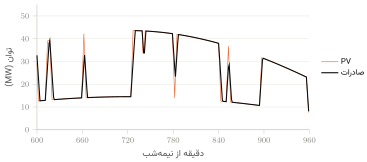
مثال 20.12 (باتریِ توانمحور) پرسش. با دادههای دقیقهایِ روزِ ابرِ پراکندهٔ فصلِ ۱۲ (بخش 12.4.14) که به 50 MW PV مقیاس شدهاند، برای حدِ 10، 5 و 2 MW در دقیقه، بیشینهٔ توان و انرژیِ باتری چیست؟
پاسخ. از خروجیِ بالا: حدِ 10 MW/min هیچ باتریای نمیخواهد (بزرگترین پرش 9.7 MW است)؛ 5 MW/min به 14.0 MW و 0.85 MWh نیاز دارد؛ 2 MW/min به 23.0 MW و 4.26 MWh.
تفسیر. نسبتِ انرژی به توان برای این کار یکپنجم ساعت یا کمتر است (0.06 و 0.19 h): باتریِ هموارسازِ شیب توانمحور است. باتریِ 20 MW / 40 MWh نیروگاهِ P برای حدِ 2 MW/min توانِ کافی ندارد، هرچند انرژیاش حدودِ ده برابرِ لازم است. وارسی: با حدِ سختتر توانِ لازم به سمتِ بزرگترین پرشِ تجمعیِ چند دقیقه میرود.
حدِ شیب هزینه دارد (توانِ باتری، انرژیِ کاهشیافته، چرخه). اگر قواعدِ شبکه و قرارداد آن را نخواهند، کنترلگر نباید آن را اعمال کند. اگر بخواهند، تعریفِ دقیق مهم است: پنجرهٔ زمانی (یک دقیقه یا ده دقیقه)، اینکه شیبِ پایینروی ناشی از منبع استثنا هست یا نه، و چگونگیِ اندازهگیری؛ همهٔ اینها از سند میآیند، نه از این کتاب.
- چرا شیبِ بالارو را میتوان بی باتری محدود کرد و شیبِ پایینرو را نه؟
- با حدِ 3 MW/min و افتِ 12 MW در یک دقیقه، باتری در دقیقهٔ اول چند مگاوات میدهد؟
- چرا باتریِ هموارسازِ شیب «توانمحور» است؟
- سه پرسشی را بنویسید که پیش از پیادهکردنِ حدِ شیب باید از سندِ قاعده پاسخ گیرند.
20.3.3 توانِ راکتیو و منحنیِ توانایی
ایده. هر مبدل یک ردهٔ توانِ ظاهری \(S_\text{r}\) دارد: جریانِ آن نمیتواند از حدی بیشتر شود، پس توانِ اکتیو و راکتیو با هم روی یک دایره محدودند. سازنده معمولاً سقفی جداگانه هم برای توانِ راکتیو میگذارد (اینجا 0.33 برابرِ رده برای مبدلهای باد و PV، آموزشی). پس در هر توانِ اکتیوِ \(P\):
\[ Q_\text{max}(P) = \min\Bigl(q\, S_\text{r},\ \sqrt{S_\text{r}^2 - P^2}\Bigr) \tag{20.12}\]
در نقطهٔ اتصال این توانایی کمتر است: ترانسفورماتورهای واحد، ترانسفورماتورهای اصلی و خطِ 132 kV خودشان توانِ راکتیو مصرف میکنند و مصرفشان با مجذورِ جریان بالا میرود (بخش 18.3.11). نتیجه منحنیِ توانایی (به انگلیسی capability curve) نیروگاه است: در هر توانِ اکتیو، بیشترین توانِ راکتیوی که در نقطهٔ اتصال میتوان داد.
def q_limit(p_mw, s_rated: float, q_frac: float):
"""Largest reactive power at active power p: the smaller of a fixed
share of the rating and what the apparent-power circle leaves."""
p = np.asarray(p_mw, float)
circle = np.sqrt(np.clip(s_rated ** 2 - p ** 2, 0, None))
return np.minimum(q_frac * s_rated, circle)
def headroom(p_avail, p_set):
"""Upward room: available minus set point (never negative)."""
room = np.asarray(p_avail, float) - np.asarray(p_set, float)
return np.clip(room, 0, None)
def soc_room(e_mwh: float, e_min: float, e_max: float, eta: float,
hours: float) -> tuple[float, float]:
"""Power (MW) the battery can hold up and down for a given number of
hours from its stored energy: up uses e - e_min, down fills to e_max."""
up = (e_mwh - e_min) * eta / hours
down = (e_max - e_mwh) / eta / hours
return max(up, 0.0), max(down, 0.0)P-Q envelope at the POC (losses as chapter 18; A-302):
P MW losses Mvar at POC without battery with battery asked
0 -0.3 40.7 62.7 0.0
20 0.4 40.0 62.0 6.6
40 2.5 37.8 59.8 13.1
60 6.1 34.3 56.3 19.7
80 11.0 29.3 51.3 26.3
100 17.4 22.9 44.9 32.9
110 21.2 19.2 41.2 36.2
without the battery the plant falls short of the teaching
requirement above about 85 MW; with idle battery inverters it
meets it at every output, but only while the battery is not
also giving full active power; the controller must know this
envelope to refuse a set point it cannot reach (chapter 18)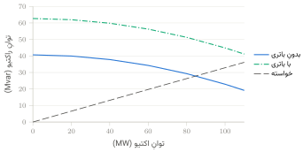
مثال 20.13 (از کجا کم میآید) پرسش. خواستهٔ آموزشیِ ضریبِ توانِ 0.95 در توانِ کامل چقدر توانِ راکتیو است؟ نیروگاه بیباتری از چه توانی به بعد کم میآورد؟ با باتری چه؟
پاسخ. \(Q = P \tan(\arccos 0.95) = 0.329\,P\)؛ در 100 MW برابرِ 32.9 Mvar و در 110 MW برابرِ 36.2 Mvar. بیباتری: 29.3 Mvar در 80 MW (بیش از 26.3 خواسته) ولی 22.9 در 100 MW (کمتر از 32.9)؛ تقاطع حدودِ 85 MW است. با چهار مبدلِ 5.5 MVA باتری که بیکارند: 44.9 Mvar در 100 MW.
تفسیر. کمبود از دو سو میآید: مبدلها در توانِ بالا جای کمتری روی دایره دارند و تلفِ راکتیوِ شبکهٔ داخلی با مجذورِ جریان رشد میکند. مبدلهای باتری فقط وقتی توانِ راکتیوِ کامل میدهند که توانِ اکتیوِ زیادی ندهند؛ پس خدمتِ راکتیو و دشارژِ کامل با هم تعارض دارند (بخش 20.8.2). کنترلگر باید این منحنی را بشناسد تا نقطهٔ تنظیمی را که نمیتواند برسد رد کند و هشدار دهد، نه اینکه بیصدا کمتر بدهد. وارسی: تلفِ راکتیو در 0 MW منفی است (−0.3): خازنیِ کابلها بیش از مصرفِ ترانسفورماتورها در بیباری.
توانایی و ولتاژ. منحنیِ بالا برای ولتاژِ نامی است. اگر ولتاژِ پایانهٔ مبدل بالا یا پایین باشد، حدِ جریان و حدِ ولتاژِ مبدل منحنی را کوچکتر میکنند. مطالعهٔ کاملِ این وابستگی در فصلِ ۲۷ میآید؛ اینجا کافی است بدانیم کنترلگر باید منحنی را با ولتاژ بهروز کند.
- معادلهٔ 20.12 را برای مبدلِ 5.5 MVA در 5 MW با سقفِ 0.33 حساب کنید.
- چرا توانِ راکتیوِ در دسترس در نقطهٔ اتصال با توانِ اکتیو کم میشود؟ دو دلیل.
- مبدلِ باتری که 5 MW دشارژ میکند، چقدر راکتیو میتواند بدهد؟
- کنترلگر با نقطهٔ تنظیمی که بیرون از منحنی است چه باید بکند؟
20.3.4 ولتاژِ نقطهٔ اتصال و قدرتِ شبکه
ایده. نیروگاهی که توان تزریق میکند، ولتاژِ نقطهٔ اتصال را بالا میبرد (بخش 17.3.7). با مدلِ تونن از شبکه (امپدانسِ \(R + jX\) پشتِ یک منبعِ ثابت) و در واحدِ نسبی با پایهٔ 100 MVA:
\[ \Delta V \approx R\,P + X\,Q \tag{20.13}\]
قدرتِ شبکه را با نسبتِ اتصالِ کوتاه (به انگلیسی short-circuit ratio, SCR) میسنجیم: \(|Z| = 1/\text{SCR}\) بر پایهٔ توانِ نیروگاه. برای خنثی کردنِ افزایشِ ولتاژ، توانِ راکتیوِ \(Q = -(R/X)\,P\) لازم است. اگر کنترلگر با افتِ ولتاژ کار کند (معادلهٔ 20.7)، حلقهٔ بستهٔ ولتاژ چنین است:
\[ V - 1 = \frac{V_0 - 1}{1 + X\, Q_\text{max}/s_\text{q}} \tag{20.14}\]
یعنی افت انحرافِ ولتاژ را با ضریبِ \(1/(1 + X Q_\text{max}/s_\text{q})\) کوچک میکند و این ضریب به \(X\)، یعنی به قدرتِ شبکه، بستگی دارد.
POC voltage rise and the Q-V droop against grid strength:
SCR X/R dV at 100 MW, Q=0 % Q for dV=0 Mvar droop factor
10 5 1.96 -20.0 0.55
6 5 3.27 -20.0 0.43
3 5 6.54 -20.0 0.27
6 2 7.45 -50.0 0.45
3 2 14.91 -50.0 0.29
the Q needed to cancel the rise depends on R/X only; the
rise itself and the droop's effect depend on grid strength:
in a weak grid the same droop removes more of a deviation but
the loop gain X Qmax / s_q is higher - a reason why the slope
and the response time are set with the grid study (ch 28);
with X/R = 2 the plant must absorb 50 Mvar at full output:
beyond its capability at 100 MW (section B)مثال 20.14 (شبکهٔ ضعیف و مقاومتی) پرسش. با SCR برابرِ 6 و 3 و نسبتِ \(X/R\) برابرِ 5 و 2: (۱) افزایشِ ولتاژ در 100 MW بی توانِ راکتیو؛ (۲) توانِ راکتیوِ لازم برای خنثیکردن؛ (۳) آیا نیروگاه میتواند آن را بدهد؟
پاسخ. (۱) SCR 6، \(X/R = 5\): 3.27 %؛ SCR 3: 6.54 %؛ با \(X/R = 2\): 7.45 و 14.91 %. (۲) با \(X/R = 5\): −20 Mvar (جذب)؛ با \(X/R = 2\): −50 Mvar. (۳) توانِ جذبِ نیروگاه در 100 MW حدودِ 22.9 بیباتری و 44.9 Mvar با باتری است (مثال 20.13): 20 شدنی، 50 نه.
تفسیر. در شبکهٔ مقاومتی (مثلاً اتصال به شبکهٔ توزیعِ بلند) توانِ راکتیو ابزارِ ضعیفی برای ولتاژ است و حدِ صادرات ممکن است از ولتاژ بیاید، نه از گرما. در شبکهٔ ضعیف، افت انحراف را بیشتر کم میکند (ضریبِ 0.27 در برابرِ 0.43) اما بهرهٔ حلقه بالاتر است و با تأخیر (بخش 20.2.4) به نوسان نزدیکتر؛ پس شیب و زمانِ پاسخ با مطالعهٔ شبکه تعیین میشوند (فصلِ ۲۸). وارسی: \(R = (1/6)/\sqrt{26} = 0.0327\)؛ \(\Delta V = 0.0327 \times 1 = 3.27\,\%\).
20.3.6 حدهای حالتِ شارژ، جای بالارو و پایینرو
ایده. هر خدمتی که باتری قول میدهد، دو چیز میخواهد: توان (از مبدل) و انرژی (از پنجرهٔ حالتِ شارژ). باتریِ پر نمیتواند پایینرو بدهد (جایی برای جذب ندارد) و باتریِ خالی نمیتواند بالارو. اگر خدمت \(h\) ساعت طول بکشد، توانی که از انرژیِ \(E\) میتوان نگه داشت:
\[ P_\text{up} = \min\Bigl(P_\text{r},\ \frac{(E - E_\text{min})\,\eta}{h}\Bigr), \qquad P_\text{down} = \min\Bigl(P_\text{r},\ \frac{E_\text{max} - E}{\eta\, h}\Bigr) \tag{20.15}\]
و برعکس، برای نگهداشتنِ \(P_\text{s}\) مگاوات بالارو برای \(h_\text{s}\) ساعت، انرژی نباید از کف پایینتر رود:
\[ E_\text{floor} = E_\text{min} + \frac{P_\text{s}\, h_\text{s}}{\eta} \tag{20.16}\]
power the S1 battery can hold for a service, by stored energy:
stored MWh up 1 h down 1 h up 15 min down 15 min
4 0.0 20.0 0.0 20.0
10 5.6 20.0 20.0 20.0
20 14.8 17.3 20.0 20.0
30 20.0 6.5 20.0 20.0
36 20.0 0.0 20.0 0.0
(capped at the 20 MW converter)
a full battery cannot hold downward reserve, an empty one
cannot hold upward; a service sets a band for the SOC, not
just a power; shorter services need less energy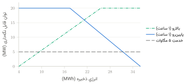
مثال 20.16 (پنجرهٔ خدمت) پرسش. باتریِ S1 (پنجرهٔ 4 تا 36 MWh، \(\eta = 0.927\)، 20 MW) برای اینکه 5 MW بالارو و 5 MW پایینرو را همزمان یک ساعت نگه دارد، انرژیاش باید در چه بازهای باشد؟
پاسخ. بالارو: \(E \ge 4 + 5/0.927 = 9.39\,\text{MWh}\). پایینرو: \(E \le 36 - 5 \times 0.927 = 31.4\,\text{MWh}\). پس بازهٔ \(9.4 \le E \le 31.4\,\text{MWh}\).
تفسیر. خدمتِ دوسویه یک نوار برای حالتِ شارژ میسازد و برنامهٔ جابهجایی فقط درونِ این نوار آزاد است: 22 MWh از 32. هر خدمتِ تازه نوار را باریکتر میکند. افزون بر انرژی، توان هم تقسیم میشود: با 5 MW ذخیره فقط 15 MW برای برنامه میماند. وارسی: خروجیِ بالا در 10 MWh بالاروی 5.6 MW برای یک ساعت نشان میدهد (\(6 \times 0.927\)).
جای بالارو و پایینروی نیروگاه. برای کلِ نیروگاه، جای بالارو (به انگلیسی headroom) فاصلهٔ توانِ در دسترس تا نقطهٔ تنظیم است و جای پایینرو (footroom) فاصلهٔ نقطهٔ تنظیم تا کمترین توانِ پایدار. تجدیدپذیر بیباتری فقط وقتی جای بالارو دارد که از پیش زیرِ توانِ در دسترس کار کند (کنترلِ دلتا) و این یعنی فروشِ کمتر در همهٔ ساعتهایی که ذخیره نگه داشته میشود؛ مثال 20.43 هزینهٔ این کار را با باتری مقایسه میکند.
- باتریِ پر کدام خدمت را نمیتواند بدهد؟
- کفِ انرژی برای 10 MW بالارو به مدتِ 30 دقیقه چیست؟
- چرا خدمتِ دوسویه یک «نوار» برای حالتِ شارژ میسازد؟
- جای بالارو و پایینرو را برای نیروگاهی که 70 MW در دسترس دارد و 60 MW میفروشد، با کمترین توانِ پایدارِ 10 MW بنویسید.
- چرا خدمتهای کوتاهتر انرژیِ کمتری میخواهند؟
20.3.7 اولویتها، گذارها و حالتهای کارِ کاهشیافته
ایده. در هر ساعت چند خواسته با هم به کنترلگر میرسند: برنامه، سقفِ بهرهبردار، ذخیرهٔ قراردادی، حدهای باتری. کنترلگری که ترتیبِ روشنی برای اینها نداشته باشد، در لحظهٔ تعارض رفتاری تصادفی دارد. ترتیبِ کنترلگرِ ساعتیِ این فصل در شکل 20.9 آمده است: هر سطح فقط در جایی کار میکند که سطحهای بالاتر باقی گذاشتهاند.
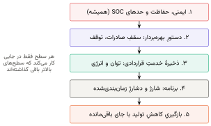
کنترلگرِ آموزشی همین ترتیب را در چند سطرِ کد پیاده میکند. ورودیها: تولیدِ نیروگاه، درخواستِ برنامه، سقفِ تازه (اگر رسیده باشد) و سالمبودنِ ارتباط. خروجیها: صادرات، شارژ و دشارژ، کاهشِ تولید، انرژیِ ذخیره و هشدارها.
@dataclass
class Controller:
"""Hourly plant controller with a fixed priority order:
1 safety and SOC limits, 2 operator instruction (export cap),
3 contracted service headroom, 4 schedule, 5 recapture of
curtailment. On comms loss it holds the last valid export cap and
sets the battery to its fallback after a timeout (hours)."""
export_cap: float = 100.0
p_max: float = 20.0
e_min: float = 4.0
e_max: float = 36.0
eta: float = math.sqrt(0.86)
reserve_up: float = 0.0 # MW held for a service (upward)
reserve_h: float = 1.0 # for this many hours
timeout_h: int = 1
e: float = 4.0
lost_h: int = 0
alarms: list = field(default_factory=list)
def step(self, hour: int, plant_mw: float, request_mw: float,
cap_mw: float | None, comm_ok: bool) -> dict:
"""plant_mw: renewable output at the POC; request_mw: battery
request from the schedule (+ discharge); cap_mw: operator's
export cap (None = unchanged)."""
if comm_ok:
self.lost_h = 0
if cap_mw is not None:
self.export_cap = cap_mw
else:
self.lost_h += 1
if self.lost_h > self.timeout_h:
request_mw = 0.0 # fallback: battery idle
self.alarms.append((hour, "comms lost: battery to fallback"))
req = request_mw
if abs(req) > self.p_max:
self.alarms.append((hour, f"request {req:+.1f} MW beyond rating"))
req = math.copysign(self.p_max, req)
# upward reserve: keep energy for reserve_up over reserve_h
e_floor = self.e_min + self.reserve_up * self.reserve_h / self.eta
if req > 0:
d = min(req, self.p_max - self.reserve_up,
max((self.e - e_floor) * self.eta, 0.0),
max(self.export_cap - plant_mw, 0.0))
if d < req - 1e-9:
self.alarms.append((hour, "discharge limited"))
c = 0.0
else:
d = 0.0
c = min(-req, (self.e_max - self.e) / self.eta, max(plant_mw, 0.0))
if c < -req - 1e-9:
self.alarms.append((hour, "charge limited"))
# recapture curtailment with any room left
spill = max(plant_mw + d - c - self.export_cap, 0.0)
room = (self.e_max - self.e) / self.eta - c
extra = min(spill, self.p_max - c - d, room)
extra = max(extra, 0.0) if d == 0.0 else 0.0
c += extra
self.e += c * self.eta - d / self.eta
export = min(plant_mw - c + d, self.export_cap)
curtailed = max(plant_mw - c + d - self.export_cap, 0.0)
return {"export": export, "charge": c, "discharge": d,
"curtailed": curtailed, "soc": self.e, "cap": self.export_cap}چهار نکتهٔ طراحی در این کد هست:
- درخواستِ ناممکن رد نمیشود، محدود میشود و گزارش میشود. درخواستِ 35 MW به 20 MW بریده و هشدارِ «بیش از رده» ثبت میشود. کنترلگر نه از کار میافتد و نه بیصدا کم میدهد.
- ذخیره از هر دو منبع کم میکند: کفِ انرژی (معادلهٔ 20.16) و توانِ مبدل (20 − 5 = 15 MW برای برنامه).
- ازدسترفتنِ ارتباط با تأخیر واکنش میگیرد: یک ساعت آخرین برنامه و آخرین سقفِ معتبر نگه داشته میشود؛ پس از آن باتری به حالتِ پشتیبان (بیکار) میرود. سقفِ صادرات هرگز با ازدسترفتنِ ارتباط بالا نمیرود.
- بازگیریِ کاهشِ تولید آخرین اولویت است و فقط وقتی باتری دشارژ نمیکند و جای خالی دارد.
حالتهای کارِ کاهشیافته. هر خرابی یک حالتِ از پیش تعریفشده دارد که نیروگاه را ایمن نگه میدارد، حتی اگر بهینه نباشد:
| خرابی | حالتِ نیروگاه | چه چیزی حفظ میشود | چه چیزی از دست میرود |
|---|---|---|---|
| ارتباط با مرکزِ کنترلِ شبکه | آخرین سقف، سپس پشتیبان | حدِ صادرات | خدمتها و برنامهٔ تازه |
| ارتباطِ کنترلگر با یک پارک | پارک روی آخرین نقطهٔ تنظیم یا حالتِ پیشفرض | حدِ صادرات با حاشیهٔ بزرگتر | دقتِ تقسیم و بخشی از تولید |
| از کار افتادنِ کنترلگرِ نیروگاه | کنترلگرِ پشتیبان یا حدهای محلیِ هر پارک | ایمنی و حدِ صادرات | خدمتها، کنترلِ ولتاژِ دقیق |
| اندازهگیریِ نقطهٔ اتصال | اندازهگیریِ دوم یا جمعِ اندازهگیریهای پارکها | حدِ صادرات با حاشیه | دقت |
| BMS یا هشدارِ باتری | باتری بیکار یا محدود | ایمنیِ باتری | ذخیره و جابهجایی |
| پیشبینی نرسیده | برنامهٔ پیشفرض یا پیشبینیِ پایا | اجرای ایمن | ارزشِ برنامه |
مثال 20.17 (سقف در برابرِ برنامه) پرسش. باتری 20 MWh دارد، تولید 95 MW است، برنامه 20 MW دشارژ میخواهد و همان لحظه سقفِ 80 MW میرسد. کنترلگر چه میکند؟
پاسخ. سقف (اولویتِ ۲) بالاتر از برنامه (اولویتِ ۴) است: جای خالی زیرِ سقف \(\max(80 - 95, 0) = 0\) است، پس دشارژ صفر میشود و هشدارِ «دشارژ محدود شد» ثبت میشود. چون باتری دشارژ نمیکند، 15 MW مازاد را تا جای خالی شارژ میکند (اولویتِ ۵) و صادرات 80 MW میماند.
تفسیر. برنامهای که از ظهر برای عصر دشارژ میخواست، با سقف بیمعنا شده است؛ کنترلگر نه آن را نادیده میگیرد و نه سقف را میشکند؛ آن را محدود و گزارش میکند و برنامهریزِ درونروز در دورِ بعد برنامه را بازمیسازد (بخش 20.6.5). وارسی: آزمونِ «سقفِ 80 MW» در مثال 20.25 همین را بررسی میکند.
حفاظتِ تجهیزات (رلهها، BMS، حفاظتِ مبدلها) بیرون از کنترلگرِ نیروگاه و مستقل از آن کار میکند. هیچ اولویتبندیِ نرمافزاری نباید جایگزینِ حفاظتِ سختافزاری شود و هیچ دستورِ کنترلگر نباید بتواند حفاظتی را غیرفعال کند (فصلهای ۲۷ و ۳۵).
- پنج سطحِ اولویت را به ترتیب بنویسید.
- چرا درخواستِ ناممکن «محدود و گزارش» میشود نه «رد»؟
- با ازدسترفتنِ ارتباط، چرا سقفِ صادرات نباید بالا برود؟
- اگر اندازهگیریِ نقطهٔ اتصال از کار بیفتد، حدِ صادرات چگونه حفظ میشود؟
- ذخیرهٔ 5 MW چه چیزی را از برنامه کم میکند؟ دو مورد.
- چرا حفاظتِ تجهیزات بیرون از کنترلگرِ نیروگاه است؟
20.4 ج. طراحی و راستیآزماییِ سامانهٔ کنترل
20.4.1 از نیازمندی تا روایتِ کنترل
ایده. کنترلگرِ نیروگاه نرمافزار است و نرمافزار همان کاری را میکند که نوشته شده، نه آنچه منظور بوده است. پس زنجیرهٔ مستند از نیازمندی تا کد و از کد تا آزمون لازم است. حلقههای این زنجیره:
- نیازمندیِ کارکردی (به انگلیسی functional requirement): یک جملهٔ آزمودنی با شناسه، منبع و معیار، مانندِ ثبتنامهٔ فصلِ ۱۷ (بخش 17.4). مثال: «REQ-S01: نیروگاه 5 MW ذخیرهٔ بالارو برای یک ساعت، هر روز از 18:00 تا 22:00، در دستکم 95 % ساعتهای پنجره نگه دارد» (A-300، فرضی).
- روایتِ کنترل (به انگلیسی control narrative): متنی که برای هر حالت میگوید کنترلگر چه میبیند، چه تصمیم میگیرد، چه فرمانی میدهد و چه هشداری. روایت را مهندسِ بهرهبرداری هم باید بتواند بخواند؛ سند PLP-CTL-SPC-0001.
- منطق و حالتها: ماشینِ حالت (بخش 20.4.2)، جدولِ اولویت (شکل 20.9) و فهرستِ تنظیمات (بخش 20.4.4).
- موردهای آزمون: برای هر نیازمندی دستکم یک آزمون با معیارِ پذیرشِ اندازهپذیر (بخش 20.4.7).
| نیازمندی (آموزشی) | حالتِ کنترلگر | معیارِ پذیرش | آزمون |
|---|---|---|---|
| صادرات از سقف بیشتر نشود | P-LIMIT | صادرات ≤ سقف + نوارِ مجاز، پس از زمانِ پاسخ | شبیهسازی، محل، پایش |
| درخواستِ بیش از رده محدود و گزارش شود | همه | خروجی ≤ رده و هشدار ثبت | آزمونِ منطق |
| ارتباط که رفت، یک ساعت نگهداشت و سپس پشتیبان | FALLBACK | زمانِ گذار و حالتِ باتری | آزمونِ منطق، کارخانه |
| ذخیرهٔ REQ-S01 نگه داشته شود | RESERVE | ساعتهای نگهداشت ≥ 95 % | شبیهسازی، پایش |
| توانِ راکتیو روی منحنیِ تنظیم | Q-V | انحراف ≤ تحملِ قرارداد | شبیهسازی، محل |
20.4.2 ماشینِ حالت و بررسیِ خودکارِ آن
ایده. کنترلگرِ نیروگاه همیشه در یکی از چند حالت است و از حالتی به حالتِ دیگر فقط با شرطی روشن میرود. نقشهٔ این حالتها و گذارها ماشینِ حالت (به انگلیسی state machine) است. پیش از هر آزمون، سه چیز را میتوان با برنامه بررسی کرد: هر حالت از «خاموش» دستیافتنی است؛ هر حالت راهِ خروج دارد؛ و از هر حالت میتوان به «خاموش» بازگشت.
STATES = ["OFF", "STANDBY", "GRID", "LIMITED", "FALLBACK", "ISLAND", "TRIPPED"]
TRANSITIONS = {
("OFF", "STANDBY"): "auxiliaries healthy, operator start",
("STANDBY", "GRID"): "grid healthy, permissions given",
("GRID", "LIMITED"): "operator cap or service instruction",
("LIMITED", "GRID"): "cap released",
("GRID", "FALLBACK"): "comms lost past timeout",
("LIMITED", "FALLBACK"): "comms lost past timeout",
("GRID", "ISLAND"): "grid lost, island permitted (critical loads)",
("ISLAND", "STANDBY"): "grid back, synchro-check passed",
("GRID", "TRIPPED"): "protection trip",
("LIMITED", "TRIPPED"): "protection trip",
("ISLAND", "TRIPPED"): "protection trip",
("TRIPPED", "OFF"): "fault cleared, operator reset",
("STANDBY", "OFF"): "operator stop",
}mode state machine of the plant controller:
7 states, 13 transitions
checks on the drawn machine:
FALLBACK has no exit
no way back to OFF from FALLBACK
after adding FALLBACK -> GRID and FALLBACK -> TRIPPED: no issue
test cases: one per transition (guard true and guard false),
that is 30 cases; the drawing had a mode with no
way out - found by a script before any test was run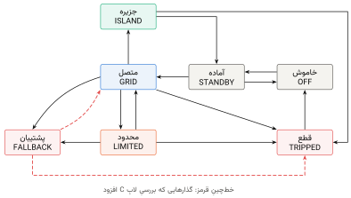
مثال 20.18 (حالتی که راهِ بیرون ندارد) پرسش. ماشینِ حالتِ رسمشده ۷ حالت و ۱۳ گذار دارد. بررسیِ خودکار چه یافت و اصلاح چیست؟ چند موردِ آزمون لازم است؟
پاسخ. حالتِ پشتیبان (FALLBACK) هیچ گذارِ خروجی ندارد: نیروگاهی که ارتباطش یک بار قطع شود، حتی پس از برگشتِ ارتباط برای همیشه در پشتیبان میماند و از آنجا به «خاموش» هم نمیرسد. اصلاح: «ارتباط برگشت و برنامه دوباره خوانده شد» به حالتِ متصل و «قطعِ حفاظتی» به حالتِ قطع. پس از آن ۱۵ گذار و برای هر گذار دو آزمون (شرط درست، شرط نادرست): ۳۰ مورد.
تفسیر. این خطا در نقشهای ۷ حالتی با چشم دیده نشد و با سه بررسیِ ساده پیدا شد. در کنترلگرِ واقعی با دهها حالت، بررسیِ خودکارِ ماشینِ حالت جزءِ بازبینیِ طراحی است و پیش از کدنویسی انجام میشود. وارسی: خروجیِ برنامه پس از اصلاح «no issue» است.
20.4.3 هشدارها و رخدادها
ایده. هر بار که کنترلگر کاری را محدود میکند، حالت عوض میکند یا چیزی را نمیتواند، باید پیامی برای بهرهبردار بگذارد. اما هشدارِ زیاد به اندازهٔ هشدارِ کم خطرناک است: بهرهبرداری که هزار هشدار در سال میبیند، هشدارِ مهم را هم نمیبیند. مثال 20.48 نشان میدهد کنترلگری که برنامهٔ ناآگاه از خدمت را بارها محدود میکند، 1,147 هشدار در سال میسازد و برنامهٔ آگاه از خدمت 104. کاهشِ هشدار با برنامهٔ درست، نه با پنهانکردنِ هشدار.
| ردهٔ پیام | مثال | واکنشِ بهرهبردار | ثبت |
|---|---|---|---|
| رخداد | گذار به حالتِ محدود با سقفِ تازه | هیچ؛ برای سابقه | همیشه |
| هشدارِ کم | شارژ یا دشارژ محدود شد | بازبینیِ روزانهٔ برنامه | همیشه |
| هشدارِ میانه | ارتباط از دست رفت؛ حالتِ پشتیبان | پیگیری با مرکزِ کنترلِ شبکه | با مهرِ زمان |
| هشدارِ بالا | منحنیِ راکتیو نمیرسد؛ ذخیره نگه داشته نمیشود | اطلاع به بهرهبردارِ شبکه | با مهرِ زمان و مقدار |
| خطر | قطعِ حفاظتی، هشدارِ BMS | روالِ اضطراری | همیشه و جدا |
- چهار حلقهٔ زنجیرهٔ نیازمندی تا آزمون را نام ببرید.
- سه بررسیِ خودکارِ ماشینِ حالت را بنویسید.
- چرا هر گذار دو موردِ آزمون میخواهد؟
- برای نیازمندیِ «توانِ راکتیو روی منحنیِ تنظیم» یک معیارِ پذیرشِ اندازهپذیر بنویسید.
- چرا هشدارِ زیاد خطرناک است و چارهاش چیست؟
20.4.4 ساختِ کنترلگر و مدیریتِ پیکربندی
ایده. کنترلگرِ نیروگاه یک محصولِ صنعتی است: سختافزار (رایانهٔ صنعتی یا PLC، کارتهای ورودی و خروجی، منبعِ تغذیهٔ بیوقفه، ساعتِ همگام)، نرمافزارِ پایه (سیستمعامل، کتابخانههای ارتباطی) و پیکربندی: تنظیمات، نقشهٔ نقطههای داده و منطقِ ویژهٔ نیروگاه. اینکه کنترلگرِ نصبشده همان است که طراحی و آزموده شده، فقط با مدیریتِ پیکربندی (به انگلیسی configuration management) ثابت میشود.
ساخت (پیوند به فصلهای ۴۴ و ۴۸). کنترلگر در کارخانهٔ تابلوساز ساخته میشود: تابلو با کارتها و سیمکشی، بارگذاریِ نسخهٔ معینِ نرمافزار، آزمونِ نقطهبهنقطهٔ ورودی و خروجی با شبیهسازِ سیگنال، و آزمونِ پذیرشِ کارخانه (به انگلیسی FAT) با مدلِ نیروگاه. اجزای اصلیِ پرونده:
| جزء | آنچه ثبت میشود | چرا |
|---|---|---|
| سختافزار | مدل و شمارهٔ سریالِ کارتها، افزونگی (دو کنترلگر با جابهجاییِ خودکار) | جایگزینیِ همسان، ردیابی |
| نرمافزار و سفتافزار | نسخه و اثرانگشتِ هر بسته | بازتولید، آسیبپذیریها (فصل ۳۶) |
| پیکربندی | تنظیمات، نقطهها، منطق، با اثرانگشت | «همان که آزموده شد» |
| همگامیِ زمان | منبعِ زمان و دقتِ مهرِ رخدادها | بازسازیِ رخدادها |
| آزمونها | گزارشِ کارخانه و محل با نسخهها | شاهدِ انطباق |
اثرانگشتِ تنظیمات. اگر همهٔ تنظیمات را به یک شکلِ یکتا بنویسیم (کلیدها به ترتیب، بیفاصله) و چکیدهٔ رمزنگاشتیِ آن را بگیریم، هر تغییرِ کوچک چکیده را عوض میکند. این اثرانگشت در سندِ طراحی، گزارشِ آزمونِ کارخانه و گزارشِ راهاندازی تکرار میشود؛ اگر یکی نخواند، چیزی تغییر کرده است.
def fingerprint(settings: dict) -> str:
"""SHA-256 of the settings written in one canonical form."""
text = json.dumps(settings, sort_keys=True, separators=(",", ":"))
return hashlib.sha256(text.encode()).hexdigest()[:12]settings under configuration control (PLP-CTL-SPC-0001):
as designed fingerprint c13e490db762
as left fingerprint 951d993d2300
differing setting(s): deadband_hz (0.02 -> 0.2)
a deadband ten times wider makes the plant ignore most
frequency deviations; the fingerprint shows that something
changed, the comparison shows what; the as-left record is
signed at commissioning (chapters 44, 48 and 50)مثال 20.19 (باند مردهای که ده برابر شد) پرسش. اثرانگشتِ تنظیماتِ «طراحیشده» و «بهجامانده پس از راهاندازی» متفاوت است. چه تغییر کرده و چه اثری دارد؟
پاسخ. مقایسهٔ کلید به کلید: باند مردهٔ بسامد از 0.02 به 0.2 Hz رفته است (احتمالاً برای آزمونی موقت گذاشته و برنگردانده شده). با این باند، نیروگاه به انحرافهای کمتر از 0.2 Hz اصلاً پاسخ نمیدهد؛ طبقِ معادلهٔ 20.6 پاسخ در 49.9 Hz از 4.4 MW به صفر میرسد.
تفسیر. اثرانگشت فقط میگوید چیزی عوض شده؛ مقایسهٔ کلید به کلید میگوید چه. هر تغییرِ تنظیم با درخواستِ تغییر، تأییدِ مالکِ تنظیم (گاه بهرهبردارِ شبکه) و اثرانگشتِ تازه همراه است و گزارشِ «بهجامانده» در پایانِ راهاندازی امضا میشود (فصل ۵۰). وارسی: اثرانگشتها در خروجیِ بالا متفاوتاند و فقط یک کلید فرق دارد.
نقطههای دادهٔ کنترلگر (نقطهٔ تنظیم، حالت، اندازهگیری، هشدار) با مدلهای دادهای استاندارد تعریف میشوند تا میانِ سازندهها یکسان باشند. خانوادهٔ IEC 61850 (بخش 18.4.11) و بخشِ IEC 61850-7-420:2021 برای منابعِ پراکنده و ذخیره نمونهاند. امنیتِ این ارتباطها فقط از دیدِ دفاعی در فصلِ ۳۶ میآید.
- چهار جزءِ پروندهٔ ساختِ کنترلگر را نام ببرید.
- چرا تنظیمات پیش از چکیدهگیری به «شکلِ یکتا» نوشته میشوند؟
- اثرانگشت چه چیزی را میگوید و چه چیزی را نمیگوید؟
- چه کسی باید تغییرِ باند مردهٔ بسامد را تأیید کند؟
- همگامیِ زمان چرا جزءِ پروندهٔ ساخت است؟
20.4.5 بودجهٔ تأخیر و دسترسپذیریِ کنترلگر
ایده. بخش 20.2.4 نشان داد که تأخیرِ مسیر سرعتِ مجازِ حلقه را تعیین میکند. در طراحی، تأخیر را بودجه میکنیم: سهمِ هر جزء از اندازهگیری تا پاسخِ مبدل نوشته و جمع میشود و با حاشیهٔ حلقه مقایسه میشود. پس از ساخت، کلِ مسیر در محل اندازهگیری میشود.
delay budget of the plant control path (teaching, A-303):
part ms
measurement transducer 20
measurement filter 100
PPC cycle (half, average) 50
network PPC -> park ctrl 50
park controller cycle (half) 25
network -> inverters 20
inverter response 50
total 315
against the 500 ms the tuned loop tolerates: margin 185 ms
a SCADA path polled every 2 s instead of a direct link adds
about 1,000 ms on average: the plant loop would need slower
gains; budget each part, then measure the whole at siteمثال 20.20 (315 میلیثانیه) پرسش. جمعِ بودجهٔ آموزشی چیست و چه حاشیهای میماند؟ اگر بهجای پیوندِ مستقیم، اندازهگیری از راهِ سامانهٔ پایشی با خواندنِ هر 2 s بیاید، چه میشود؟
پاسخ. جمع 315 ms، در برابرِ 500 ms که حلقهٔ تنظیمشده تحمل میکند: حاشیهٔ 185 ms. با خواندنِ دوثانیهای میانگینِ 1,000 ms افزوده میشود و کلِ مسیر از 1.3 s میگذرد: حلقه با همین بهرهها فراجهشِ بزرگ دارد (مثال 20.4).
تفسیر. بزرگترین جزء معمولاً فیلترِ اندازهگیری و چرخهٔ کنترلگرهاست، نه شبکه. کنترلگرِ نیروگاه به اندازهگیریِ مستقیم و پیوندِ اختصاصی با پارکها نیاز دارد و سامانهٔ پایش (فصلِ ۳۴) برای این حلقه مناسب نیست. وارسی: \(20 + 100 + 50 + 50 + 25 + 20 + 50 = 315\).
دسترسپذیریِ کنترلگر. خرابیِ کنترلگرِ نیروگاه نیروگاه را به حالتِ پشتیبان میبرد (جدول 20.2). با میانگینِ زمان میانِ خرابیها (MTBF) و میانگینِ زمانِ تعمیر (MTTR)، ساعتهای سالانهٔ پشتیبان برای کنترلگرِ تکی \(\lambda \times \text{MTTR}\) است و برای جفتِ افزونه تقریباً \(\lambda\,(1-c)\,\text{MTTR}\)، که \(c\) احتمالِ موفقیتِ جابهجایی است.
plant controller availability (teaching: MTBF 50,000 h, MTTR 24 h):
failures a year 0.175
single controller: 4.20 h a year in fallback
duplicated, switchover succeeds 98 %: 0.086 h a year
REQ-S01 window hours lost (single): 0.70 a year
a controller fault matters less than the comms outages of
lab E (18 h a year); but a duplicated pair is only as good as
its switchover test and identical settings (fingerprints)مثال 20.21 (تکی یا جفت) پرسش. با MTBF برابرِ 50,000 h، MTTR برابرِ 24 h و جابهجاییِ 98 % موفق، ساعتهای سالانهٔ پشتیبان را برای کنترلگرِ تکی و جفت حساب کنید. اثر بر REQ-S01؟
پاسخ. \(\lambda = 8{,}760/50{,}000 = 0.175\) خرابی در سال. تکی: \(0.175 \times 24 = 4.2\,\text{h}\)؛ جفت: حدودِ 0.09 h. ساعتهای پنجرهٔ ازدسترفته برای تکی: \(4.2 \times 4/24 = 0.7\) در سال.
تفسیر. در این نیروگاه کنترلگرِ تکی هم الزامِ 95 % را تهدید نمیکند؛ قطعِ ارتباط (18 h در آزمایشگاه) خطرِ بزرگتری است. افزونگی دلیلهای دیگری دارد: خدمتهای سریع، سقفِ صادراتی که نباید حتی چند ساعت با حاشیهٔ بزرگ اجرا شود، و تعمیر بیتوقف. ولی جفت فقط وقتی جفت است که جابهجایی آزموده شده و تنظیمهای دو کنترلگر یکسان باشد (مثال 20.19).
- هفت جزءِ بودجهٔ تأخیر را نام ببرید.
- چرا سامانهٔ پایش برای حلقهٔ کنترلِ نیروگاه مناسب نیست؟
- با MTBF برابرِ 20,000 h و MTTR برابرِ 48 h، ساعتهای پشتیبانِ کنترلگرِ تکی چیست؟
- احتمالِ موفقیتِ جابهجایی چگونه شاهد پیدا میکند؟
20.4.6 اعتبارسنجیِ مدل با پاسخِ اندازهگیریشده
ایده. همهٔ تنظیمهای این فصل با مدل حساب شدند: پارک با \(\tau = 2\,\text{s}\) و بیتأخیر. پس از ساخت، یک آزمونِ پله (با برنامهٔ پذیرفتهشده و اجازهٔ بهرهبردار، بخش 20.4.7) پاسخِ واقعی را ثبت میکند. اعتبارسنجی یعنی مقایسهٔ مدل با این ثبت با معیاری از پیش تعیینشده، و اگر مدل رد شد، برازش پارامترهایش به داده. مدلهای عمومیِ IEC 61400-27-1:2020 برای همین کار ساخته شدهاند: ساختارِ ثابت با پارامترهایی که با آزمون تعیین میشوند.
validating the plant model against a measured step (teaching):
model tau s delay s mean |err| 0-10 s steady err
design model 2.00 0.00 0.090 0.002
fitted to the step 2.60 0.35 0.008 0.000
teaching acceptance: mean |err| <= 0.02 in the transient,
<= 0.01 in steady state; the design model fails the first,
the fitted one passes and finds the slower plant (2.6 s) and
the measurement delay (0.35 s) that the tuning must respect;
real acceptance bands come from the grid study (ch 27-28)مثال 20.22 (پارکی کندتر با تأخیر) پرسش. پاسخِ «اندازهگیریشدهٔ» آموزشی با مدلِ طراحی (2 s، بیتأخیر) چه خطایی دارد؟ برازش چه پارامترهایی مییابد؟ پیامد برای تنظیم چیست؟
پاسخ. مدلِ طراحی: میانگینِ خطای مطلق در ده ثانیهٔ نخست 0.090 (بیش از معیارِ آموزشیِ 0.02): رد. برازش: \(\tau = 2.60\,\text{s}\) و تأخیرِ 0.35 s با خطای 0.008: پذیرفته.
تفسیر. پارکِ واقعی کندتر و با تأخیر است. با \(\tau = 2.6\,\text{s}\) میراییِ حلقهٔ تنظیمشده بیشتر میشود (معادلهٔ 20.4)، ولی تأخیرِ 0.35 s بیشترِ حاشیهٔ 0.5 s (مثال 20.4) را مصرف کرده است؛ بنابراین هر افزایشِ بهره پس از این ممنوع است مگر با مدلِ تازه آزموده شود. مدلِ برازششده جایگزینِ مدلِ طراحی در پروندهٔ مطالعه میشود. وارسی: خطای پایدارِ هر دو مدل نزدیکِ صفر است: اختلاف فقط در گذراست؛ پس معیارِ فقطپایدار این خطا را نمیدید.
- اعتبارسنجی و برازش را از هم جدا کنید.
- چرا معیارِ پذیرش باید پیش از آزمون تعیین شود؟
- چرا معیارِ فقطپایدار کافی نیست؟
- با \(\tau = 2.6\,\text{s}\)، \(\zeta\) تنظیمشده را حساب کنید.
20.4.7 شبیهسازی، آزمونِ منطق و آزمونهای راهاندازی
ایده. هر نیازمندی باید شاهد داشته باشد. برای کنترلگرِ نیروگاه سه راهِ شاهد هست که در ویرایشِ نخستِ IEC TS 63102:2021 (اکنون جایگزینشده با ویرایشِ 2026) برای ارزیابیِ انطباقِ نیروگاههای بادی و PV با قواعدِ شبکه نام برده شدهاند: آزمون، شبیهسازی و پایش. هیچکدام بهتنهایی کافی نیست: آزمون فقط چند نقطهٔ کار را میبیند، شبیهسازی به اعتبارِ مدل وابسته است و پایش فقط آنچه را رخ داده نشان میدهد. نمودارِ V (شکل 20.11) نشان میدهد هر سطحِ آزمون کدام سطحِ طراحی را میسنجد.
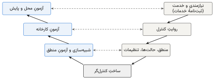
سطحهای آزمون.
- آزمونِ منطق (به انگلیسی unit test): هر قاعده جدا با ورودیهای ساختگی؛ مانندِ آزمونهای لبه در مثال 20.25. ارزان، سریع و تکرارپذیر؛ با هر تغییرِ کد دوباره اجرا میشود.
- شبیهسازیِ سامانه: کنترلگر با مدلِ نیروگاه و شبکه. برای مطالعههای پایداری، مدلهای عمومیِ توربین و نیروگاهِ بادی در IEC 61400-27-1:2020 تعریف شدهاند (مدلهای توالیِ مثبت در حوزهٔ زمان، مستقل از نرمافزار)؛ سازنده مدلِ اعتبارسنجیشدهٔ محصولش را میدهد (فصلِ ۲۷).
- آزمون با سختافزار در حلقه (به انگلیسی hardware in the loop): کنترلگرِ واقعی به شبیهسازِ بیدرنگِ نیروگاه وصل میشود؛ زمانبندی، ارتباط و تأخیرها را میآزماید.
- آزمونِ پذیرشِ کارخانه: همهٔ نقطهها، حالتها و گذارها با شبیهساز، پیش از حمل.
- آزمونهای محل و راهاندازی: همان کارکردها با نیروگاهِ واقعی، طبقِ برنامهٔ آزمونِ پذیرفتهشده و با حضورِ بهرهبردارِ شبکه هر جا لازم است (فصلِ ۵۰).
- پایشِ پیوسته: شاخصها در بهرهبرداری؛ مانندِ ساعتهای نگهداشتِ ذخیره در مثال 20.49.
| آزمون (هدف) | آنچه نشان میدهد | شاهد | سطح |
|---|---|---|---|
| پلهٔ نقطهٔ تنظیمِ P | زمانِ خیز، فراجهش، نشستن (مثال 20.2) | ثبتِ پرسرعت و مقایسه با شبیهسازی | ۲، ۴، ۵ |
| محدودیتِ شیب و ضدِ انباشت | نبودِ فراجهشِ بزرگ (مثال 20.3) | همان | ۱، ۲، ۴ |
| سقفِ صادرات | صادرات زیرِ سقف + نوار | ثبتِ نقطهٔ اتصال | ۱، ۴، ۵، ۶ |
| پاسخِ بسامد (اگر خواسته شود) | شیبِ افت و باند مرده (مثال 20.7) | سیگنالِ بسامدِ شبیهسازیشده به کنترلگر | ۲، ۳، ۵ |
| توانِ راکتیو و ولتاژ | منحنیِ توانایی و پاسخ (مثال 20.13) | ثبتِ P، Q و V | ۲، ۵، ۶ |
| ازدسترفتنِ ارتباط | نگهداشت، پشتیبان، بازگشت (مثال 20.18) | ثبتِ رخدادها با مهرِ زمان | ۱، ۳، ۴، ۵ |
| حدهای باتری | محدودیت و هشدار در دو سرِ پنجره | ثبتِ کنترلگر و BMS | ۱، ۴، ۵ |
| تأخیرِ مسیر | زمان از اندازهگیری تا فرمان (مثال 20.4) | مهرهای زمانِ همگام | ۳، ۵ |
| تنظیماتِ بهجامانده | اثرانگشتِ یکسان (مثال 20.19) | گزارشِ امضاشده | ۴، ۵ |
جدولِ بالا آزمونها را با هدف و شاهد نام میبرد، نه با روشِ اجرا. آزمون روی نیروگاهِ برقدار طبقِ روالِ نوشتهشده و پذیرفتهشدهٔ پروژه، با مجوزِ کار و اجازهٔ بهرهبردارِ شبکه و بهدستِ افرادِ صلاحیتدار انجام میشود (فصلهای ۴۷ و ۵۰). این کتاب هیچ روشِ کار روی تجهیزاتِ برقدار نمیدهد.
مثال 20.23 (برنامهٔ آزمونِ یک نیازمندی) پرسش. برای «ارتباط که رفت، یک ساعت نگهداشت و سپس پشتیبان»، موردهای آزمون را در سه سطح بنویسید.
پاسخ. سطحِ ۱ (منطق): سه گام بی ارتباط و یک گام با ارتباط؛ انتظار: گامِ اول دشارژ طبقِ برنامه، گامِ دوم بیکار، گامِ سوم بازگشت به برنامه (آزمونِ «comms lost» در مثال 20.25). سطحِ ۴ (کارخانه): قطعِ پیوندِ شبیهسازِ مرکزِ کنترل؛ انتظار: پیامِ هشدارِ میانه، گذار در زمانِ تنظیمشده، و نگهداشتنِ آخرین سقف. سطحِ ۵ (محل): همان با هماهنگیِ بهرهبردارِ شبکه در زمانِ تعیینشده؛ شاهد: ثبتِ رخدادها با مهرِ زمانِ همگام.
تفسیر. آزمونِ منطق ارزان است و هر بار اجرا میشود؛ آزمونِ محل گران است و یک بار. پس هر رفتاری که میتوان در منطق آزمود، آنجا آزموده میشود و آزمونِ محل فقط آنچه را میسنجد که فقط آنجا پیداست: تأخیرِ واقعی، پیوندِ واقعی، رفتارِ واقعیِ تجهیزات.
- سه راهِ شاهد برای انطباق را نام ببرید و ضعفِ هر کدام را بنویسید.
- شش سطحِ آزمون را به ترتیب بنویسید.
- چرا مدلِ شبیهسازی باید «اعتبارسنجیشده» باشد؟
- آزمونِ «تأخیرِ مسیر» در کدام سطحها معنا دارد و چرا؟
- برای «سقفِ صادرات» یک شاهدِ پایشِ پیوسته پیشنهاد کنید.
- چرا روشِ اجرای آزمونهای محل در این کتاب نیامده است؟
20.5 د. آزمایشگاهِ دیسپاچِ ساعتی
20.5.1 مثالِ کارشده: جدولِ دیسپاچِ یک روز
ایده. همهٔ اجزای بخشهای الف تا ج اینجا با هم کار میکنند: پیشبینیِ روزِ بعد (فصلِ ۱۵)، قیمتهای آموزشی (فصلِ ۱۹)، سقفِ بهرهبردار (A-302)، برنامهریزِ پویا (بخش 20.2.8) و کنترلگرِ ساعتی (بخش 20.3.7). روزِ انتخابی آفتابیترین روزی است که سقفِ 80 MW دارد.
def plan(day: int):
"""Day-ahead battery plan from the forecast and the known caps."""
h = slice(day * 24, day * 24 + 24)
fc = np.clip(src.poc_forecast(24)[h], 0, None)
cap = eb.caps()[h]
price = src.prices()[h]
rev, e, p = ct.dp_schedule(price, np.minimum(fc, L["bess_mw"]),
np.clip(cap - fc, 0, None), L["bess_mw"],
L["e_min"], L["e_max"], L["e_min"], L["eta"],
step=1.0, wear=10.0)
return fc, cap, price, phourly dispatch of day 73 (sunniest day with an 80 MW cap, A-302):
h fcst act cap price plan chg dis export curt SOC
0 16.9 29.9 100 50.0 -0.0 0.0 0.0 29.9 0.0 4.0
1 28.0 40.8 100 50.0 -0.0 0.0 0.0 40.8 0.0 4.0
2 39.5 47.9 100 50.0 -0.0 0.0 0.0 47.9 0.0 4.0
3 44.0 57.9 100 50.0 -0.0 0.0 0.0 57.9 0.0 4.0
4 56.0 59.5 100 50.0 -0.0 0.0 0.0 59.5 0.0 4.0
5 59.6 56.3 100 50.0 -0.0 0.0 0.0 56.3 0.0 4.0
6 53.5 57.6 100 50.0 -0.0 0.0 0.0 57.6 0.0 4.0
7 74.5 72.8 100 50.0 -0.0 0.0 0.0 72.8 0.0 4.0
8 87.8 84.1 100 50.0 -0.0 0.0 0.0 84.1 0.0 4.0
9 88.2 93.5 100 50.0 -0.0 0.0 0.0 93.5 0.0 4.0
10 95.3 102.6 100 27.3 -1.1 2.6 0.0 100.0 0.0 6.4
11 99.0 105.2 80 27.3 -1.1 20.0 0.0 80.0 5.2 24.9
12 97.5 104.7 80 27.3 -1.1 11.9 0.0 80.0 12.8 36.0
13 95.6 104.9 80 27.3 -19.4 0.0 0.0 80.0 24.9 36.0
14 97.3 98.8 80 27.3 -11.9 0.0 0.0 80.0 18.8 36.0
15 83.8 88.6 100 50.0 -0.0 0.0 0.0 88.6 0.0 36.0
16 74.8 74.8 100 50.0 -0.0 0.0 0.0 74.8 0.0 36.0
17 63.7 57.0 100 50.0 -0.0 0.0 0.0 57.0 0.0 36.0
18 59.6 47.9 100 76.7 +19.5 0.0 19.5 67.4 0.0 15.0
19 59.6 17.5 100 76.7 +9.3 0.0 9.3 26.8 0.0 5.0
20 54.8 15.6 100 76.7 +0.9 0.0 0.9 16.6 0.0 4.0
21 25.6 6.4 100 76.7 -0.0 0.0 0.0 6.4 0.0 4.0
22 10.7 0.4 100 50.0 -0.0 0.0 0.0 0.4 0.0 4.0
23 2.6 0.8 100 50.0 -0.0 0.0 0.0 0.8 0.0 4.0
day: export 1359 MWh, curtailed 61.7 MWh, value 61.6 k u
controller alarms: 2
h13 charge limited
h14 charge limited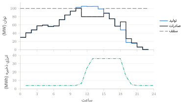
مثال 20.24 (جدولِ دیسپاچ با سقف و پیشبینیِ نادرست) پرسش. جدولِ ساعتیِ روزِ ۷۳ را بخوانید: (۱) برنامهٔ روزِ بعد کِی شارژ و کِی دشارژ میخواست و چرا؟ (۲) کنترلگر چه کرد که با برنامه فرق داشت؟ (۳) کاهشِ تولید و صادراتِ روز چیست؟ (۴) دو هشدار از کجا آمدند؟
پاسخ.
- برنامه در ساعتهای 10 تا 14 (قیمتِ 27.3) شارژ میخواست، بیشترِ آن در ساعتهای 13 و 14 (19.4 و 11.9 MW)، چون پیشبینی بیشترین مازاد زیرِ سقف را آنجا میدید؛ و در ساعتهای 18 تا 20 (قیمتِ 76.7) دشارژ.
- کنترلگر تولیدِ واقعی را دید که از پیشبینی بیشتر بود (102.6 تا 105.2 MW در برابرِ 95 تا 99). در ساعتهای 10 تا 12 مازاد را با اولویتِ ۵ (بازگیری) گرفت: 2.6، 20 و 11.9 MW. باتری در پایانِ ساعتِ 12 پر شد (36 MWh).
- کاهش در ساعتهای 11 تا 14: 5.2 + 12.8 + 24.9 + 18.8 = 61.7 MWh. صادرات 1,359 MWh به ارزشِ 61.6 هزار واحد.
- هشدارها در ساعتهای 13 و 14: برنامه شارژ میخواست اما باتری پر بود («شارژ محدود شد»).
تفسیر. پیشبینی کم برآورد کرد و باتری زودتر از برنامه پر شد؛ کاهشِ کلِ روز با برنامهٔ کامل هم همین میبود، چون باتری در هر حال فقط 32 MWh جا دارد و مازادِ چهار ساعتِ سقف حدودِ 94 MWh است. دشارژِ عصر (19.5، 9.3 و 0.9 MW) طبقِ برنامه انجام شد. درسِ کلی: کنترلگر برنامه را اجرا میکند ولی آن را باور نمیکند؛ هر ناهمخوانی محدود و گزارش میشود و برنامهریزِ درونروز آن را در دورِ بعد میبیند. وارسی: تراز در ساعتِ 11: \(105.2 - 20.0 - 80.0 = 5.2\)؛ انرژی: \(6.4 + 20 \times 0.927 = 24.9\,\text{MWh}\).
20.5.2 آزمونهای لبهٔ کنترلگر
ایده. مثالِ کارشده یک روزِ عادی است؛ کنترلگر باید در لبهها هم درست رفتار کند: درخواستِ ناممکن، باتریِ پر یا خالی، سقفِ ناگهانی، قطعِ ارتباط، ذخیره در کف. هر کدام یک نیازمندی است که بهشکلِ کد نوشته شده است.
edge-case tests of the hourly controller:
PASS infeasible request (-35 MW) clamped to 20 MW, alarm
PASS empty battery: no discharge, alarm
PASS full battery: no charge
PASS operator cap 80 MW overrides the plan: export <= 80
PASS comms lost: plan kept 1 h, then battery idle; back on return
PASS reserve keeps energy for 5 MW x 1 h: discharge stops at floor
PASS reserve keeps 5 MW of converter room: discharge <= 15 MW
PASS curtailment recaptured when the plan is idle
each test is a requirement written as code (section C); the
same cases run in the factory and site tests of the real
controller (chapters 44, 48 and 50)مثال 20.25 (هشت آزمون، هشت نیازمندی) پرسش. برای هر آزمونِ بالا بگویید کدام اولویت یا حالت را میسنجد.
پاسخ. درخواستِ −35 MW: حدِ رده (اولویتِ ۱) و «محدود و گزارش»؛ باتریِ خالی و پر: حدهای پنجره (۱)؛ سقفِ 80 MW: دستورِ بهرهبردار (۲) بالاتر از برنامه (۴)؛ قطعِ ارتباط: گذار به پشتیبان پس از زمانِ نگهداشت و بازگشت (بخش 20.4.2)؛ ذخیره در کف و ذخیرهٔ توانِ مبدل: اولویتِ ۳؛ بازگیری: اولویتِ ۵.
تفسیر. آزمونِ قطعِ ارتباط در نسخهٔ اول فقط «بیکار شدن» را میسنجید و بازگشت را نه؛ همان خطای ماشینِ حالت (مثال 20.18) از دیدِ آزمون. هر آزمون باید هم ورود به حالت و هم خروج از آن را بسنجد. وارسی: هر هشت آزمون PASS.
20.5.3 یک سال برنامه با پیشبینیِ ناکامل
ایده. یک روز چیزی دربارهٔ کیفیتِ برنامه نمیگوید. همین زنجیره را برای ۳۶۵ روز با سه منبعِ برنامه اجرا میکنیم: پیشبینیِ کامل (فرضی)، پیشبینیِ روزِ بعد و پیشبینیِ درونروز.
def year_of_plans(fc: np.ndarray, wear: float = 10.0):
"""Plan each day from the forecast fc (charge only from the plant,
discharge within the export room), execute with the controller on
the actual output, and return energy, revenue and alarms."""
act = np.clip(src.poc_actual(), 0, None)
cap = eb.caps()
price = src.prices()
c = ct.Controller(e=L["e_min"])
rev = curt = 0.0
for d in range(365):
h = slice(d * 24, d * 24 + 24)
f = np.clip(fc[h], 0, None)
_, _, plan = ct.dp_schedule(price[h], np.minimum(f, L["bess_mw"]),
np.clip(cap[h] - f, 0, None),
L["bess_mw"], L["e_min"], L["e_max"],
round(c.e), L["eta"], wear=wear,
e_end=L["e_min"])
for k in range(24):
t = d * 24 + k
r = c.step(t, act[t], plan[k], cap[t], True)
rev += r["export"] * price[t]
curt += r["curtailed"]
return rev, curt, len(c.alarms)a year of battery plans executed by the controller (S1):
export revenue without the battery 13,781 k u
plan made from battery adds k u share % curtailed alarms
perfect foresight 471 100.0 390 41
day-ahead forecast 469 99.5 390 77
intraday forecast 469 99.5 390 74
plans from the forecasts keep almost all of the value:
shifting is decided by prices known a day ahead, and the
controller fills the battery from curtailment whatever the
plan says; the mismatches show as alarms (charge or
discharge limited) that the operator must readمثال 20.26 (ارزشِ پیشبینیِ بهتر برای باتری) پرسش. باتری با هر منبعِ برنامه چقدر به درآمدِ صادرات میافزاید؟ چرا تفاوت کم است؟
پاسخ. درآمدِ صادرات بیباتری 13,781 هزار واحد است. باتری با پیشبینیِ کامل 471 و با هر دو پیشبینی 469 هزار میافزاید: 99.5 % ارزش. هشدارها از 41 به 77 و 74 میرسند.
تفسیر. جابهجایی را قیمت میراند و قیمتها از روزِ بعد معلوماند؛ خطای پیشبینیِ تولید فقط ساعتِ شارژ را جابهجا میکند و کنترلگر در هر حال باتری را از کاهشِ تولید پر میکند. اما همین خطا در تعهدها گران است: برنامهٔ صادرات و ذخیره (بخش 20.6). وارسی: حتی پیشبینیِ کامل 41 هشدار دارد: بازگیری گاهی باتری را زودتر از برنامه پر میکند.
- در مثال 20.24 چرا برنامه بیشترین شارژ را در ساعتهای 13 و 14 میخواست؟
- تراز را در ساعتِ 12 وارسی کنید.
- چرا کاهشِ کلِ روز با اجرای کاملِ برنامه هم تقریباً همین میبود؟
- چه آزمونِ لبهای برای «توانِ راکتیو بیرون از منحنی» پیشنهاد میکنید؟
- چرا پیشبینیِ بهتر ارزشِ باتری را کم تغییر میدهد؟
- چرا هشدارها با پیشبینیِ ناکامل بیشترند؟
20.6 ه. دیسپاچِ آگاه از پیشبینی
20.6.1 سه افق، سه کار
ایده. فصلِ ۱۵ پیشبینی را برای افقهای گوناگون ساخت (بخش 15.6.3). اینجا میبینیم هر افق به کدام تصمیم خدمت میکند (شکل 20.13):
- روزِ بعد: پیشبینیِ ۱۲ تا ۳۶ ساعته؛ برنامهٔ ساعتیِ صادرات (و پیشنهاد در بازار، اگر بازاری باشد)، برنامهٔ باتری، اعلامِ دسترسپذیریِ خدمتها.
- درونروز: پیشبینیِ ۱ تا ۶ ساعته؛ اصلاحِ برنامه (اگر قواعد اجازه دهند)، جایگیریِ حالتِ شارژ برای عصر، پاسخ به سقفهای تازه.
- زمانِ واقعی: اندازهگیریِ همین لحظه؛ اجرای ایمن، رعایتِ سقفها، پاسخِ خدمت.
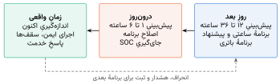
forecast error of the POC export by horizon (test months):
horizon lead h MAE MW RMSE MW P5 err P95 err
day-ahead 24 7.1 10.6 -16.2 19.2
intraday 4 5.0 7.8 -11.3 14.8
persistence (1 h) 1 6.3 9.0 -15.6 15.2
scheduling uses the forecast of its horizon: the day-ahead
plan is made once, the intraday plan corrects it, and
real-time dispatch uses what is measured now; each layer
keeps the decisions of the one above unless they are
infeasible (section A)| افق | پیشبینی | تصمیم | سند و ثبت |
|---|---|---|---|
| روزِ بعد | NWP + مدلِ نیروگاه، احتمالاتی | برنامهٔ صادرات، باتری، اعلامِ خدمت | برنامهٔ اعلامشده با نسخهٔ پیشبینی |
| درونروز | بهروزشده با اندازهگیریها | اصلاحِ برنامه، کفِ انرژیِ عصر | تغییر با دلیل و زمان |
| زمانِ واقعی | اندازهگیریِ اکنون | فرمانِ P و Q، محدودیتها | رخدادها، هشدارها، انحراف |
مثال 20.27 (کدام پیشبینی برای کدام تصمیم) پرسش. در ماههای آزمون، خطای پیشبینیِ صادرات برای روزِ بعد، درونروز و پایا (مقدارِ ساعتِ قبل) چیست؟ چرا پایا برای برنامهٔ روزِ بعد به کار نمیآید با اینکه خطایش از روزِ بعد کمتر است؟
پاسخ. میانگینِ خطای مطلق: روزِ بعد 7.1، درونروز 5.0، پایا 6.3 MW؛ صدکِ پنجم و نود و پنجم برای روزِ بعد −16.2 و +19.2 MW.
تفسیر. پایا فقط برای ساعتِ بعد معتبر است؛ برای برنامهٔ فردا ساعتِ قبلِ فردا را نداریم. هر افق پیشبینیِ خودش را دارد و مقایسه فقط میانِ روشهای یک افق معنا دارد (فصلِ ۱۵). خطای درونروز حدودِ 30 % کمتر از روزِ بعد است و این همان چیزی است که اصلاحِ برنامه به آن تکیه دارد (مثال 20.28). وارسی: صدکها نامتقارناند: پیشبینی گاهی بسیار بیشبرآورد میکند (ابر یا آرامشِ پیشبینینشده).
- سه افق را با پیشبینی و تصمیمِ هر کدام نام ببرید.
- چرا پیشبینیِ پایا برای برنامهٔ روزِ بعد به کار نمیآید؟
- خطای درونروز چند درصد کمتر از روزِ بعد است؟
- چرا برنامهٔ اعلامشده باید نسخهٔ پیشبینی را همراه داشته باشد؟
20.6.2 عدمِ تعادل و پیشنهادِ آگاه از جریمه
ایده. اگر نیروگاه برنامهای اعلام کند و کمتر یا بیشتر تحویل دهد، عدمِ تعادل (به انگلیسی imbalance) ساخته است و در بسیاری از بازارها و قراردادها برای آن جریمه یا تسویهٔ جدا هست. ساختارِ آموزشیِ این فصل (A-301) دوقیمتی است: هر مگاواتساعتِ کمبود \(c_\text{s} = 30\) واحد و هر مگاواتساعتِ مازاد \(c_\text{l} = 10\) واحد جریمه دارد (افزون بر قیمتِ انرژی):
\[ C_\text{imb} = \sum_t \bigl[c_\text{s}\,(S_t - A_t)^{+} + c_\text{l}\,(A_t - S_t)^{+}\bigr] \tag{20.17}\]
که \(S_t\) برنامه و \(A_t\) تحویل است و \((x)^{+} = \max(x, 0)\).
imbalance penalty of a year by the schedule sent (A-301:
short 30 u/MWh, long 10 u/MWh):
schedule short MWh long MWh penalty k u
day-ahead forecast 31,591 29,752 1245
intraday update 24,065 19,751 919
the intraday update cuts the penalty by about a quarter;
where the market allows changes after the day-ahead offer,
re-scheduling is the cheapest imbalance toolمثال 20.28 (ارزشِ اصلاحِ درونروز) پرسش. جریمهٔ یک سال با برنامهٔ روزِ بعد و با برنامهٔ اصلاحشدهٔ درونروز چیست؟
پاسخ. روزِ بعد: 31,591 MWh کمبود و 29,752 MWh مازاد، جریمهٔ 1,245 هزار واحد. درونروز: 24,065 و 19,751 MWh، جریمهٔ 919 هزار. کاهش 26 %.
تفسیر. جریمهٔ روزِ بعد حدودِ 9 % درآمدِ صادرات است (13,781 هزار)؛ عددی که هر بحثِ اقتصادیِ فصلِ ۲۱ باید ببیند. جایی که قواعد اجازه دهند، اصلاحِ درونروز ارزانترین ابزارِ کاهشِ جریمه است و هیچ سرمایهای نمیخواهد. وارسی: \(31{,}591 \times 30 + 29{,}752 \times 10 = 1{,}245{,}000\).
پیشنهادِ نامتقارن. چون کمبود سه برابر گرانتر از مازاد است، بهترین برنامه میانهٔ پیشبینی نیست. اگر تحویل را متغیری تصادفی بدانیم، با استدلالِ «روزنامهفروش» (فصلِ ۱۵) بهترین برنامه چندکِ \(q^\ast\) توزیعِ تحویل است:
\[ q^\ast = \frac{c_\text{l}}{c_\text{s} + c_\text{l}} = \frac{10}{30 + 10} = 0.25 \tag{20.18}\]
یعنی برنامهای که تحویلِ واقعی در 75 % ساعتها از آن بیشتر باشد. برای ساختنِ آن، در هر بازهٔ پیشبینی، چندکِ خطای ماههای آموزش را به پیشبینی میافزاییم:
def bid_offsets(f, act, q: float, bins=np.arange(0, 110, 10)):
"""Offset to add to the forecast in each forecast bin so that the
bid is the q-quantile of the actual export (trained on Jan-Aug)."""
k = np.digitize(f, bins)
off = np.zeros(len(bins) + 1)
for b in range(len(bins) + 1):
m = (k[TRAIN] == b)
if m.sum() > 20:
off[b] = np.quantile((act - f)[TRAIN][m], q)
return off[k]day-ahead bid that knows short costs more than long:
best quantile = long / (short + long) = 0.25
bid energy bid GWh penalty k u (Sep-Dec)
forecast as is 101.7 424
median by bin 100.6 411
quantile 0.25 by bin 86.7 355
bidding low lowers the penalty although less energy is
sold ahead: the rest is sold as 'long' at a small
discount; the rule is chapter 15's newsvendor applied by
the scheduling function, and it holds only while the
penalties stay as assumed (A-301)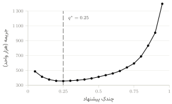
مثال 20.29 (پیشنهادِ کمتر، جریمهٔ کمتر) پرسش. در ماههای سپتامبر تا دسامبر، جریمه با سه پیشنهاد (پیشبینی، میانه، چندکِ 0.25) چیست؟ انرژیِ پیشنهادی چقدر کم میشود؟
پاسخ. پیشبینی: 424؛ میانه: 411؛ چندکِ 0.25: 355 هزار واحد. انرژیِ پیشنهادی از 101.7 به 86.7 GWh میرسد (15 % کمتر).
تفسیر. پیشنهادِ کمتر انرژیِ کمتری نمیفروشد: انرژیِ بیشتر از برنامه هم فروخته میشود، فقط با جریمهٔ کوچکِ مازاد. کاهشِ 16 % جریمه بی هیچ هزینهٔ سرمایهای است. اما قاعده فقط تا وقتی درست است که جریمهها همان باشند که فرض شد؛ اگر بازار برای مازادِ عمدی قاعدهٔ دیگری داشته باشد یا قیمتِ برنامه با تحویل فرق کند، تحلیل تغییر میکند (فصلِ ۲۱). وارسی: شکل 20.14 کمینه را در بازهٔ 0.2 تا 0.3 نشان میدهد.
اینکه اصلاحِ درونروز مجاز است، جریمه چگونه حساب میشود و پیشنهادِ آگاهانه کمتر از انتظار مجاز است یا نه، از قواعدِ بازار و قرارداد میآید و در کشورهای این کتاب متفاوت است (فصلهای ۵۵ تا ۵۷). کنترلگر و برنامهریز فقط قاعدهٔ تأییدشده را اجرا میکنند.
- معادلهٔ 20.17 را برای برنامهٔ 50 و تحویلِ 44 MWh حساب کنید.
- اگر جریمهٔ کمبود و مازاد برابر باشند، \(q^\ast\) چیست؟
- چرا پیشنهادِ کمتر انرژیِ کمتری نمیفروشد؟
- جریمهٔ روزِ بعد چند درصدِ درآمدِ صادرات است؟
- چه قاعدهای در بازار میتواند پیشنهادِ نامتقارن را نادرست کند؟
20.6.3 عدمِ قطعیتِ پیشبینی، ذخیره و جایگیریِ حالتِ شارژ
ایده. خطای پیشبینی را میتوان به ذخیره ترجمه کرد: اگر میخواهیم برنامه را در 95 % ساعتها تحویل دهیم، باید توانی برابرِ صدکِ نود و پنجمِ کمبود آماده داشته باشیم. این کمبود با سطحِ پیشبینی عوض میشود: وقتی پیشبینی نزدیکِ صفر است، کمبودِ بزرگ ممکن نیست؛ وقتی بالاست، یک ابر یا آرامش دهها مگاوات را میبرد.
upward reserve to cover the intraday forecast's shortfall:
forecast MW hours P90 short MW P95 short MW P99 short MW
0-19 3236 3.4 5.4 9.8
20-39 1754 10.2 14.6 20.6
40-59 2644 12.3 18.4 28.7
60-79 678 14.2 20.0 35.1
80-100 448 16.4 21.6 28.8
the reserve that covers 95 % of hours grows with the forecast
level and passes the battery converter (20 MW) above 60 MW;
evening shortfall 18-22 h: P50 4, P95 48 MWh;
the 32 MWh window covers 89 % of evenings; the rest is an
imbalance cost or a lower schedule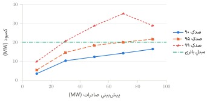
مثال 20.30 (چقدر باید در عصر نگه داشت) پرسش. (۱) برای پوششِ 95 % ساعتها در سطحِ پیشبینیِ 60 تا 79 MW چه ذخیرهای لازم است؟ (۲) برای پوششِ کمبودِ کلِ عصر (18 تا 22) چه انرژیای؟ (۳) باتریِ S1 چند درصد عصرها را میپوشاند؟
پاسخ. (۱) 20.0 MW: دقیقاً به اندازهٔ مبدلِ باتری. (۲) میانه 4 و صدکِ ۹۵ 48 MWh. (۳) پنجرهٔ 32 MWh (که 29.7 MWh در شبکه میدهد) 89 % عصرها را میپوشاند.
تفسیر. باتریِ نیروگاهِ P برای پوششِ همهٔ خطای پیشبینی کوچک است؛ و اگر همهٔ پنجره را برای این کار نگه داریم، از جابهجایی چیزی نمیماند. پس سه ابزار با هم کار میکنند: اصلاحِ درونروز (کمبود را پیش از رخدادن کوچک میکند)، پیشنهادِ نامتقارن (برنامه را پایینتر مینشاند) و باتری (بقیه را تا جای ممکن). وارسی: صدکِ ۹۵ در سطحِ 80 تا 100 MW 21.6 MW است و از مبدل بیشتر.
جایگیریِ حالتِ شارژ. اگر باتری قرار است در عصر چیزی را بپوشاند (کمبودِ پیشبینی یا ذخیرهٔ قراردادی)، باید پیش از عصر به انرژیِ لازم رسیده باشد. این جایگیری (به انگلیسی SOC positioning) یک قیدِ برنامه است، نه یک واکنشِ کنترلگر: کنترلگر در ساعتِ 18 نمیتواند انرژیای را که ظهر ذخیره نشده بسازد. در برنامهریزِ پویا همان کفِ انرژی (معادلهٔ 20.16) در ساعتهای پنجره است و بخش 20.9 اثرش را بر یک سال میسنجد.
- چرا ذخیرهٔ لازم با سطحِ پیشبینی بزرگ میشود؟
- صدکِ ۹۵ کمبود در سطحِ 40 تا 59 MW چیست؟
- سه ابزارِ پوششِ خطای پیشبینی را نام ببرید.
- چرا جایگیریِ حالتِ شارژ کارِ برنامهریز است نه کنترلگر؟
20.6.4 ذخیرهٔ پویا در برابرِ ذخیرهٔ ثابت
ایده. مثال 20.30 نشان داد کمبودِ پیشبینی با سطحِ پیشبینی بزرگ میشود. پس ذخیره را میتوان پویا گرفت: در هر ساعت به اندازهٔ صدکِ ۹۵ کمبود در همان سطحِ پیشبینی، بهجای یک عددِ ثابت برای همهٔ ساعتها. قاعده روی ماههای ژانویه تا اوت برازش و روی سپتامبر تا دسامبر آزموده میشود تا ارزیابی با دادهای باشد که قاعده ندیده است (بخش 15.6.6).
upward reserve for 95 % cover of the intraday shortfall (test months):
rule mean reserve MW cover % MW-h held
constant 13.7 94.2 40,186
by forecast level 12.3 94.0 35,949
a reserve that follows the forecast level holds less on
average for about the same cover: little at night when the
forecast is low, more at high output; the rule is fitted on
January-August and tested on September-Decemberمثال 20.31 (همان پوشش با ذخیرهٔ کمتر) پرسش. ذخیرهٔ ثابت و پویا برای پوششِ 95 % در ماههای آزمون چه میانگینی دارند و چه پوششی میدهند؟
پاسخ. ثابت: میانگینِ 13.7 MW با پوششِ 94.2 %؛ پویا: 12.3 MW با 94.0 %. ذخیرهٔ نگهداشته 40,186 در برابرِ 35,949 مگاواتساعت، یعنی 11 % کمتر.
تفسیر. هر دو کمی زیرِ 95 % میمانند چون ماههای آزمون با ماههای برازش فرق دارند؛ در عمل قاعده با پایشِ پیوسته بهروز میشود. ذخیرهٔ پویا ذخیره را از ساعتهای شب (پیشبینیِ کم، کمبودِ کوچک) به ساعتهای تولیدِ بالا میبرد؛ همانجا که باتری در هر حال پر است. اینکه بهرهبردارِ شبکه ذخیرهٔ متغیر را بپذیرد یا نه، به قواعدِ خدمت بستگی دارد (U-077). وارسی: \(35{,}949/40{,}186 = 0.89\).
- ذخیرهٔ پویا بر پایهٔ چه متغیری تغییر میکند؟
- چرا برازش و آزمون روی ماههای جدا انجام شد؟
- چرا پوشش در ماههای آزمون کمی کمتر از 95 % است؟
20.6.5 بهروزرسانیِ برنامه، کاهشِ تولید و دستورِ بهرهبردار
ایده. برنامهٔ روزِ بعد با پیشبینیِ دیروز ساخته شده است. در طولِ روز سه چیز آن را کهنه میکند: پیشبینیِ تازه، سقف یا دستورِ تازهٔ بهرهبردار، و انحرافِ اجرا (باتری زودتر پر شد، یک پارک خاموش شد). بهروزرسانیِ برنامه (به انگلیسی re-dispatch) همان برنامهریزِ پویا را از انرژیِ اکنون و برای ساعتهای باقیمانده دوباره اجرا میکند. دو قاعده:
- چه چیزی ثابت است: تعهدهای اعلامشده (برنامهٔ صادرات اگر اصلاح مجاز نیست، ذخیرهٔ فروختهشده، سقفِ بهرهبردار) قید میشوند، نه متغیر.
- کِی: در زمانهای ثابت (مثلاً ساعتهای 6، 10، 14 و 17) و نیز با هر رخدادِ بزرگ (سقفِ تازه، خرابی). بهروزرسانیِ بیوقفه برنامه را ناپایدار و ثبت را نامفهوم میکند.
مثال 20.32 (بهروزرسانی در چهار نوبت) پرسش. در آزمایشگاهِ بخش 20.9، برنامهای که خدمتِ ذخیره را میشناسد یک بار در روز ساخته میشود یا در ساعتهای 6، 10، 14 و 17 با پیشبینیِ درونروز بهروز میشود. هزینه و هشدارها را برای خدمتِ 5 MW × 1 h مقایسه کنید.
پاسخ. از مثال 20.44: یک بار در روز هزینهٔ 57.7 هزار و 104 هشدار؛ با بهروزرسانی 56.5 هزار و 71 هشدار. برای خدمتهای بزرگتر تفاوت کمتر است.
تفسیر. بهروزرسانی هشدارها را بیشتر از هزینه کم میکند: برنامهٔ تازه با واقعیت همخوانتر است و کنترلگر کمتر محدودش میکند. ارزشِ پولیِ آن اینجا کم است چون قیمتها از روزِ بعد معلوماند و پنجرهٔ انرژی تقریباً همیشه پر میشود؛ در بازاری با قیمتِ درونروزِ متغیر یا با جریمهٔ عدمِ تعادل، ارزش بیشتر است (مثال 20.28).
دستورِ بهرهبردار در میانهٔ روز. وقتی بهرهبردار سقف میدهد یا آن را برمیدارد، سه کار به ترتیب انجام میشود: (۱) کنترلگر فوراً سقف را اجرا میکند (اولویتِ ۲)؛ (۲) رخداد با زمان و مقدار ثبت میشود؛ (۳) برنامهریز برنامهٔ باقیِ روز را با سقفِ تازه بازمیسازد. اگر سقف کاهشِ تولید میسازد، سهمِ هر فناوری طبقِ قاعدهٔ قرارداد (مثال 20.11) ثبت میشود و اگر قرارداد برای کاهشِ دستوری جبران پیشبینی کرده، همین ثبت شاهدِ آن است (فصلِ ۲۱).
دستورِ بهرهبردارِ نیروگاه. بهرهبردارِ نیروگاه میتواند برنامه را دستی کنار بگذارد (برای تعمیر، آزمون یا احتیاط). این کنارگذاری خودش یک حالت است: با نام، زمانِ آغاز، دلیل و زمانِ پایانِ پیشبینیشده ثبت میشود و کنترلگر در پایانِ آن به حالتِ عادی برمیگردد؛ کنارگذاریِ فراموششده یکی از رایجترین دلیلهای ازدسترفتنِ ارزش در نیروگاههای واقعی است.
- سه چیزی که برنامهٔ روزِ بعد را کهنه میکنند نام ببرید.
- در بهروزرسانی، چه چیزهایی قید میمانند؟
- چرا بهروزرسانیِ بیوقفه نامطلوب است؟
- سه گامِ پاسخ به سقفِ تازه را به ترتیب بنویسید.
- کنارگذاریِ دستی چه چیزهایی باید ثبت کند؟
20.6.6 انرژیِ پایانِ روز: ارزشِ آنچه برای فردا میماند
ایده. برنامهریزِ روزانه باید بداند باتری را در نیمهشب با چه انرژیای تحویل دهد (معادلهٔ 20.8، شرطِ \(E_{24}\)). اگر خالی تحویل دهد، هر مگاواتساعت در عصرِ گران فروخته شده است؛ اگر پر تحویل دهد، فردا صبح آماده است (برای جزیره، خدمتِ صبح یا قیمتِ گرانِ صبح) اما امروز کمتر فروخته است. این ارزشِ پایانی (به انگلیسی terminal value) را با اجرای یکساله میسنجیم:
def year_soc(e_end: float):
"""A year of day-ahead plans that end each day at e_end; returns
export value and the stored energy at the start of every hour."""
act = np.clip(src.poc_actual(), 0, None)
fc = np.clip(src.poc_forecast(24), 0, None)
cap, price = eb.caps(), src.prices()
c = ct.Controller(e=L["e_min"])
soc = np.zeros(8760)
val = 0.0
for d in range(365):
h = slice(d * 24, d * 24 + 24)
_, _, plan = ct.dp_schedule(price[h], np.minimum(fc[h], L["bess_mw"]),
np.clip(cap[h] - fc[h], 0, None),
L["bess_mw"], L["e_min"], L["e_max"],
round(c.e), L["eta"], wear=10.0,
e_end=e_end)
for k in range(24):
t = d * 24 + k
soc[t] = c.e
r = c.step(t, act[t], plan[k], cap[t], True)
val += r["export"] * price[t]
return val, socenergy the plan leaves at midnight (terminal value):
e_end MWh export value k u vs e_end 4 mean SOC at 18 h MWh
4 14,249.4 +0.0 35.8
10 14,218.7 -30.6 35.8
20 14,161.6 -87.8 35.9
energy kept overnight is energy not sold in the evening; with
prices known a day ahead and a plant that refills the battery
most days, ending low is best; a higher end target buys
readiness (island reserve, morning services) at a known costمثال 20.33 (هزینهٔ آمادگی) پرسش. اگر برنامه هر شب 10 یا 20 MWh در باتری بگذارد، ارزشِ صادراتِ سال چقدر کم میشود؟ چرا حالتِ شارژِ ساعتِ 18 تغییر نمیکند؟
پاسخ. 10 MWh: 30.6 هزار واحد کمتر؛ 20 MWh: 87.8 هزار. حالتِ شارژ در 18 در هر سه حالت حدودِ 36 MWh است، چون نیروگاه در بیشترِ روزها باتری را تا عصر پر میکند.
تفسیر. انرژیِ شبانه ارزش دارد فقط اگر صبحِ فردا برای چیزی لازم باشد: جزیره (بخش 20.7.5)، خدمتِ صبح یا قیمتِ گرانِ صبح. با قیمتهای آموزشی که صبحِ گران ندارند، پایانِ کم بهترین است و هر هدفِ بالاتر هزینهٔ آمادگی است که باید با ارزشِ آمادگی مقایسه شود. وارسی: هزینه تقریباً متناسب با انرژیِ نگهداشته است: \(30.6/6 \approx 5.1\) و \(87.8/16 \approx 5.5\) هزار واحد برای هر مگاواتساعت بالای کف.
- ارزشِ پایانی چیست؟
- چرا با قیمتهای آموزشی پایانِ کم بهترین است؟
- سه دلیل برای نگهداشتنِ انرژی در شب بنویسید.
- هزینهٔ هر مگاواتساعتِ نگهداشتهٔ شبانه را از خروجی برآورد کنید.
20.6.7 باتری برای جذبِ انحراف از برنامه
ایده. اگر جریمهٔ عدمِ تعادل بزرگ است (مثال 20.28)، باتری میتواند بهجای جابهجایی، انحراف را جذب کند: وقتی نیروگاه کم میآورد دشارژ کند و وقتی زیاد میآورد شارژ. این کاربرد هم کلِ پنجره را میخواهد و با جابهجایی تعارض دارد (بخش 20.8.2).
the battery used to absorb deviations from the intraday schedule:
penalty without battery 919 k u, with 531 k u
saved 389 k u a year; 292 equivalent full cycles
the same battery adds about 469 k u a year by shifting
(section D): absorbing deviations is worth a little less
here, and both use the whole window, so they cannot both be
done at full size - a stacking decision of section G, priced
in ch 21 with the real settlement rules (U-078)مثال 20.34 (دو کاربرد، یک پنجره) پرسش. اگر باتری فقط انحرافِ تحویل از برنامهٔ درونروز را جذب کند، جریمه چقدر کم میشود و چند چرخه میزند؟ با ارزشِ جابهجایی مقایسه کنید.
پاسخ. جریمه از 919 به 531 هزار واحد: 389 هزار صرفهجویی با 292 چرخهٔ معادل در سال. جابهجایی حدودِ 469 هزار میافزاید (مثال 20.26).
تفسیر. دو کاربرد ارزشِ هماندازه دارند و هر دو کلِ پنجره و حدودِ ۳۰۰ چرخه در سال میخواهند؛ پس نمیتوان هر دو را با اندازهٔ کامل گرفت. تقسیمِ پنجره میانِ آنها، یا جذبِ انحراف فقط در ساعتهایی که جابهجایی کاری ندارد، تصمیمی است که فصلِ ۲۱ با قاعدههای واقعیِ تسویه (U-078) میگیرد. افزون بر آن، اگر قواعدِ بازار اصلاحِ درونروز را اجازه دهند، بخشی از همین ارزش بیباتری به دست میآید (مثال 20.28). وارسی: جریمه با باتری هنوز صفر نیست: انحرافهای بیش از 20 MW و ساعتهایی که پنجره پر یا خالی است.
- جذبِ انحراف با جابهجایی چه منبعی را مشترک دارد؟
- چرا جریمه با باتری صفر نمیشود؟
- دو راهِ ترکیبِ جذبِ انحراف و جابهجایی را بنویسید.
20.6.8 ارزشِ خبرِ پیشاپیش از سقف
ایده. شهود میگوید اگر بهرهبردار سقف را از روزِ بعد اعلام کند، برنامه بهتر آماده میشود: باتری را پیش از سقف خالی میکند تا مازاد را بگیرد، یا دشارژ را از ساعتهای سقف بیرون میبرد. اما ارزشِ اطلاعات را باید حساب کرد، نه فرض. دو گروه سقف را میآزماییم: سقفهای ظهرِ A-302 و سقفِ آموزشیِ 60 MW در ۴۰ عصرِ پرتولید؛ هر کدام یک بار با برنامهای که سقف را میداند و یک بار با برنامهای که نمیداند (کنترلگر در هر دو حالت سقفِ واقعی را اجرا میکند).
operator caps known a day ahead or arriving as a surprise:
caps plan sees export value k u curtailed MWh
midday 80 MW (A-302) yes 14,249.4 390
no 14,249.4 390
evening 60 MW yes 14,228.7 8
no 14,229.2 7
notice is worth almost nothing for Plant P: before a midday
cap the battery is already empty (it was sold the evening
before) and the plan charges in those hours anyway; under an
evening cap the blocked energy simply waits and is sold later
at similar prices; the evening caps cost about 20 k u of
export with or without notice; notice would matter for a
battery that must prepare (fill before a cap that blocks
charging) - check the value of information before paying
for it (U-077)مثال 20.35 (خبری که ارزشی ندارد) پرسش. خبرِ پیشاپیش در هر گروه چقدر میارزد؟ چرا؟
پاسخ. سقفهای ظهر: 14,249.4 با خبر و بیخبر، تفاوت صفر. سقفهای عصر: 14,228.7 با خبر و 14,229.2 بیخبر؛ تفاوتِ 0.5 هزار، و حتی به سودِ بیخبری.
تفسیر. پیش از سقفِ ظهر باتری در هر حال خالی است (عصرِ قبل فروخته شده) و برنامه در همان ساعتها شارژ میکند؛ زیرِ سقفِ عصر، انرژیِ بازمانده صبر میکند و بعدتر با قیمتی نزدیک فروخته میشود. هزینهٔ سقفهای عصر (حدودِ 20 هزار واحد صادراتِ کمتر) با خبر و بیخبر یکی است. خبر فقط برای باتریای میارزد که باید آماده شود: مثلاً پر شدن پیش از سقفی که شارژ را میبندد. درس: پیش از اینکه برای اطلاعات (پیشبینیِ بهتر، خبرِ زودتر، دادههای بیشتر) هزینه کنید، ارزشش را با همان مدل بسنجید (U-077). وارسی: کاهشِ تولید در عصر فقط 7 تا 8 MWh است؛ سقف بیشتر دشارژ را میبندد تا تولید را.
- چرا خبرِ پیشاپیش از سقفهای ظهر برای نیروگاهِ P بیارزش است؟
- چه نوع باتری یا سقفی خبرِ پیشاپیش را باارزش میکند؟
20.7 و. کارکردهای اختیاریِ جزیره و بازیابی
همهٔ کارکردهای این بخش اختیاریاند. معماریِ نیروگاهِ P (D-022) جزیره را فقط برای بارهای حیاتیِ خودِ نیروگاه پذیرفته است و راهاندازیِ سیاهِ شبکه در دامنهٔ پایه نیست. هر کارکردِ جزیرهای که بخشی از شبکهٔ بیرونی (مثلاً فیدرِ روستا) را تغذیه کند، به مطالعه، قرارداد و اجازهٔ صریحِ بهرهبردارِ شبکه نیاز دارد؛ جزیرهٔ ناخواسته خطرِ جانی برای کارکنانِ شبکه دارد و حفاظتِ ضدِ جزیره برای جلوگیری از آن است (بخش 17.4.10).
20.7.1 کارِ جزیرهای: سهمبندیِ بار میانِ مبدلهای سازندهٔ شبکه
ایده. در حالتِ متصل، شبکه بسامد و ولتاژ را میسازد و مبدلها آن را دنبال میکنند. در جزیره، کسی باید بسامد و ولتاژ را بسازد: مبدلهای باتری در حالتِ سازندهٔ شبکه (به انگلیسی grid-forming، بخش 9.4.2). اگر چند مبدل با هم بسامد بسازند، باید بار را تقسیم کنند بیآنکه با هم بجنگند. سادهترین روش همان افت است: هر واحد در بسامدِ کمتر توانِ بیشتری میدهد:
همهٔ واحدها یک بسامدِ مشترک میبینند و آن بسامد جایی مینشیند که جمعِ توانها با بارِ \(P_\text{L}\) برابر شود.
def share(load_mw: float, f_set, m, p_rated):
"""Steady state of grid-forming units with droop P_i = (f_set_i - f)
/ m_i * p_rated_i (m in Hz per rated power): one frequency f makes
the powers add up to the load. Returns f and the powers."""
f_set, m, pr = (np.asarray(x, float) for x in (f_set, m, p_rated))
k = pr / m # MW per Hz
f = (np.sum(k * f_set) - load_mw) / np.sum(k)
return f, k * (f_set - f)four grid-forming battery inverters share a 4 MW island load:
case f Hz P1 P2 P3 P4 (MW)
equal settings 49.80 1.00 1.00 1.00 1.00
unit 1 set 0.1 Hz high 49.83 1.37 0.87 0.87 0.87
unit 4 droop twice as steep 49.77 1.14 1.14 1.14 0.57
secondary control (+0.2 Hz) 50.00 1.00 1.00 1.00 1.00
(droop 1 Hz per rated power; teaching, A-303)
units share by their droop settings: a unit set high takes
more; a steeper droop takes less; the frequency falls with
the load until secondary control moves all set points
together and brings it back to 50 Hz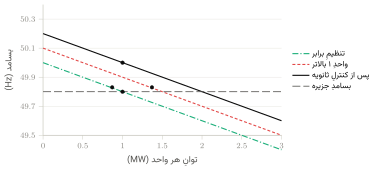
مثال 20.36 (واحدی که بیشتر برمیدارد) پرسش. چهار مبدلِ 5 MW با افتِ 1 Hz بارِ 4 MW را میدهند. بسامد و سهمِ هر واحد را برای تنظیمِ برابر و برای حالتی که واحدِ ۱ 0.1 Hz بالاتر تنظیم شده، حساب کنید. کنترلِ ثانویه چه میکند؟
پاسخ. \(k_i = 5/1 = 5\,\text{MW/Hz}\) و \(\sum k_i = 20\). تنظیمِ برابر: \(f = 50 - 4/20 = 49.80\,\text{Hz}\) و هر واحد 1 MW. واحدِ ۱ بالاتر:
\[ f = \frac{5 \times 50.1 + 15 \times 50 - 4}{20} = 49.825\,\text{Hz} \]
\(P_1 = 5 \times 0.275 = 1.375\,\text{MW}\) و بقیه هر کدام \(5 \times 0.175 = 0.875\,\text{MW}\). کنترلِ ثانویه همهٔ \(f^\text{set}\)ها را 0.2 Hz بالا میبرد و بسامد به 50 Hz برمیگردد.
تفسیر. خطای کوچکِ تنظیم (0.1 Hz) سهمِ یک واحد را 37 % بیشتر میکند؛ در بارِ نزدیکِ رده همین واحد زودتر به حد میرسد. پس تنظیمها در آزمونِ کارخانه یکسان بودنشان وارسی میشود (مثال 20.19). افتِ تندتر یعنی سهمِ کمتر (خروجیِ بالا: 0.57 در برابرِ 1.14 MW). وارسی: \(1.375 + 3 \times 0.875 = 4.0\).
20.7.2 کاستنِ بار به ترتیبِ اولویت
ایده. منبعِ جزیره محدود است (توانِ مبدلها، انرژیِ باتری، تولیدِ PV و باد اگر در جزیره بمانند). اگر بار از منبع بیشتر شود، بسامد فرو میافتد و جزیره فرو میپاشد. پس بارها ردهبندی میشوند و کنترلگر از پایینترین رده شروع به کاستن میکند (به انگلیسی load shedding).
load shedding in priority order as the island runs short:
source MW loads kept (priority <= ) load MW shed MW
5.0 3 4.67 0.00
2.5 2 1.57 3.10
1.2 1 1.05 3.62
0.5 0 0.00 4.67
priority 1 loads are never shed by the controller; if the
source cannot carry them, the island is not formed and the
safety systems run on their own batteries (UPS); the list
and its priorities are an operator decision (chapter 51)مثال 20.37 (چه چیزی میماند) پرسش. با ردههای بالا، اگر منبعِ جزیره 2.5 MW باشد چه بارهایی میمانند؟ با 0.5 MW چه؟
پاسخ. 2.5 MW: ردههای ۱ و ۲ (1.57 MW)؛ کارگاه و فیدرِ روستا (3.10 MW) کاسته میشوند. 0.5 MW: حتی ردهٔ ۱ (1.05 MW) جا نمیشود، پس جزیره تشکیل نمیشود و سامانههای ایمنی با باتریهای بیوقفهٔ خودشان کار میکنند.
تفسیر. ردهٔ ۱ (حفاظت، کنترل، ارتباط، آشکارسازیِ حریق و تهویهٔ باتری) هرگز بهدستِ کنترلگر کاسته نمیشود؛ اگر منبع آن را برنمیدارد، جزیره ساخته نمیشود. فهرست و ردهها تصمیمِ بهرهبردار است (فصلِ ۵۱) و فیدرِ روستا فقط با قرارداد در فهرست میآید. وارسی: \(0.15 + 0.9 = 1.05\) و \(1.05 + 0.12 + 0.4 = 1.57\).
- چرا در جزیره مبدلی باید «سازندهٔ شبکه» باشد؟
- با سه مبدلِ 5 MW و افتِ 1 Hz، بارِ 3 MW بسامد را به چه میرساند؟
- کنترلِ ثانویه چه چیزی را جابهجا میکند؟
- چرا بارِ ردهٔ ۱ بهدستِ کنترلگر کاسته نمیشود؟
- اگر منبع حتی ردهٔ ۱ را برندارد، چه رخ میدهد؟
20.7.3 پیششرطهای راهاندازیِ سیاه
ایده. راهاندازیِ سیاه (به انگلیسی black start) یعنی برقدار کردنِ شبکهٔ خاموش بی کمک از بیرون. برای نیروگاهِ تجدیدپذیر با باتری، کمترین گام برقدار کردنِ شبکهٔ داخلیِ خودِ نیروگاه است: ترانسفورماتورهای اصلی و واحد، کابلهای 33 kV و بارهای کمکی. این کار فقط اگر قرارداد بخواهد و مطالعه آن را ممکن نشان دهد، انجام میشود.
black start of the plant's own network (if contracted, A-303):
item MW
2 x 63 MVA main transformers 0.090
26 unit transformers (WTG, PV, BESS) 0.152
33 kV cables (charging, losses) 0.030
auxiliaries and HVAC 1.200
total held 1.472
energy for 1 h: 1.5 MWh of the 32 MWh window
energy for 4 h: 5.9 MWh of the 32 MWh window
energy for 12 h: 17.7 MWh of the 32 MWh window
energy is not the hard part: inrush of the transformers and
the strength of four inverters in front of a 132 kV line are;
both need a study and the operator's procedure firstمثال 20.38 (انرژی آسان است، بقیه نه) پرسش. نگهداشتنِ شبکهٔ داخلیِ برقدار برای 4 h چقدر انرژی میخواهد؟ دشواریِ اصلی چیست؟
پاسخ. تلفِ بیباری و بارهای کمکی حدودِ 1.47 MW است؛ برای 4 h حدودِ 5.9 MWh از پنجرهٔ 32 MWh.
تفسیر. انرژی محدودیت نیست؛ دشواریها جای دیگرند: جریانِ هجومیِ ترانسفورماتورها هنگامِ برقدار شدن که از مبدلها بسیار بیشتر از جریانِ نامی میخواهد (مبدل جریانِ اضافهٔ کمی تحمل میکند، بخش 9.4.2)، قدرتِ اتصالِ کوتاهِ کمِ چهار مبدل که حفاظتهای طراحیشده برای شبکهٔ قوی را ناکارآمد میکند، و هماهنگی با بهرهبردارِ شبکه. اینها مطالعهٔ ویژه و روالِ مکتوبِ بهرهبردار میخواهند (فصلهای ۲۷ و ۲۸)؛ روشهای کاهشِ جریانِ هجومی (مانندِ بالا بردنِ آرامِ ولتاژ) فقط بهشکلِ مفهوم نام برده میشوند.
| پیششرط | پرسش | مالک |
|---|---|---|
| قرارداد | آیا خدمت خواسته شده و چه چیزی را باید برقدار کرد؟ | بهرهبردارِ شبکه |
| مبدلِ سازنده | آیا مبدلها حالتِ سازندهٔ شبکه و جریانِ کافی دارند؟ | سازنده، مطالعه |
| انرژی | آیا کفِ انرژیِ راهاندازی در همهٔ ساعتها نگه داشته میشود؟ | برنامهریز (بخش 20.9) |
| حفاظت | آیا حفاظتها با جریانِ خطای کم کار میکنند؟ | مهندسِ حفاظت (فصلِ ۲۷) |
| ارتباط و روال | آیا روالِ گامبهگام با بهرهبردار نوشته و آزموده شده؟ | بهرهبردار |
20.7.4 همزمانسازی و بازگشت به شبکه
ایده. جزیره با بسامدی کمی متفاوت از شبکه کار میکند. پیش از بستنِ کلیدِ اتصال، سه اختلاف باید کوچک باشند: ولتاژ، بسامد و زاویه. اختلافِ بسامد \(\Delta f_\text{s}\) (لغزش) زاویه را پیوسته میچرخاند؛ یک دورِ کامل \(1/\Delta f_\text{s}\) ثانیه طول میکشد و زاویه فقط بخشِ کوچکی از این زمان درونِ پنجرهٔ \(\pm\theta_\text{w}\) است:
\[ T_\text{slip} = \frac{1}{\Delta f_\text{s}}, \qquad T_\text{window} = T_\text{slip}\,\frac{2\,\theta_\text{w}}{360} \tag{20.20}\]
rejoining the grid: wait for the synchro-check window
slip Hz one slip cycle s in a +-10 deg window s wait (worst) s
0.05 20.0 1.11 18.9
0.10 10.0 0.56 9.4
0.20 5.0 0.28 4.7
0.50 2.0 0.11 1.9
a large slip passes the window quickly (the breaker may not
close in time); a small slip waits longer; the controller
moves the island frequency to a small slip first; the
synchro-check limits come from the protection settings
(chapter 27), not from this tableمثال 20.39 (لغزشِ مناسب) پرسش. با پنجرهٔ \(\pm 10^\circ\) و لغزشِ 0.5 و 0.1 Hz، زاویه چه مدت در پنجره است و بدترین انتظار چیست؟
پاسخ. 0.5 Hz: دورِ 2 s، درونِ پنجره 0.11 s، بدترین انتظار 1.9 s. 0.1 Hz: دورِ 10 s، درونِ پنجره 0.56 s، بدترین انتظار 9.4 s.
تفسیر. با لغزشِ بزرگ زاویه چنان سریع از پنجره میگذرد که کلید (با زمانِ بستهشدنِ خودش) ممکن است بیرون از پنجره ببندد؛ با لغزشِ کوچک انتظار طولانی میشود. پس کنترلگرِ جزیره ابتدا بسامد را به لغزشِ کوچک و ثابت میرساند، سپس رلهٔ بررسیِ همزمانی (به انگلیسی synchro-check) اجازهٔ بستن میدهد. حدهای واقعیِ این رله تنظیمِ حفاظتاند (فصلِ ۲۷)، نه این جدول.
هماهنگیِ حفاظت و آزمونِ ایمنِ گذارها. هر گذار (متصل به جزیره، جزیره به متصل) یک لحظهٔ پرخطر است: جریانهای خطای کم در جزیره، تنظیمهای حفاظتیِ دوگانه برای دو حالت، و خطرِ بستنِ بیهمزمانی. گذارها ابتدا در شبیهسازی و آزمونِ سختافزار در حلقه (بخش 20.4.7) آزموده میشوند و آزمونِ واقعیِ آنها فقط با برنامهٔ آزمونِ پذیرفتهشده، اجازهٔ بهرهبردارِ شبکه و حضورِ افرادِ صلاحیتدار انجام میشود؛ این کتاب روشِ اجرای آن را نمیدهد.
- کمترین گامِ راهاندازیِ سیاه برای نیروگاهِ P چیست؟
- سه دشواریِ راهاندازیِ سیاه با مبدل را نام ببرید.
- با لغزشِ 0.2 Hz و پنجرهٔ \(\pm 15^\circ\)، زمانِ درونِ پنجره چیست؟
- چرا لغزشِ بزرگ برای بستنِ کلید خطرناک است؟
- چرا تنظیمهای حفاظتی در جزیره و حالتِ متصل ممکن است فرق کنند؟
20.7.5 اولویتدادن به ذخیرهٔ جزیره
ایده. اگر جزیره برای بارهای حیاتی پذیرفته شده است (D-022)، پرسشِ عملی این است: از هر ساعتِ سال که شبکه برود، باتری و PV چند ساعت بارهای ردهٔ ۱ و ۲ (1.57 MW) را نگه میدارند؟ پاسخ به حالتِ شارژِ همان لحظه بستگی دارد و برنامهٔ اقتصادی باتری را عصرها خالی میکند. چاره کفِ انرژیِ جزیره است: انرژیای که برنامهریز هرگز خرج نمیکند (مانندِ کفِ خدمت، معادلهٔ 20.16).
hours the island carries 1.57 MW of critical load (priority
1 + 2) from each hour of the year, battery + PV (A-303):
island floor MWh P10 h P50 h share of starts >= 24 h
0 0 24 54 %
10 3 24 68 %
20 24 24 93 %
without a floor the island fails at once from an empty
night-time battery in a tenth of the hours; a 20 MWh floor
gives a day of autonomy from 93 % of starts, at a cost of
the order of the 88 k u a year of h_endtarget; whether that
is worth it is the owner's decision (U-080)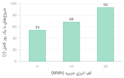
مثال 20.40 (کفِ بیست مگاواتساعتی) پرسش. بی کف، با کفِ 10 و 20 MWh، جزیره از چند درصدِ ساعتها یک روزِ کامل دوام میآورد؟ صدکِ دهمِ دوام چیست؟
پاسخ. بی کف 54 % (صدکِ دهم صفر ساعت)؛ کفِ 10 MWh 68 % (صدکِ دهم 3 h)؛ کفِ 20 MWh 93 % (صدکِ دهم 24 h).
تفسیر. بی کف، در یکدهمِ ساعتها (شبها پس از دشارژِ عصر) باتری خالی است و جزیره اصلاً ساخته نمیشود. کفِ 20 MWh یک روزِ کامل را تقریباً همیشه ممکن میکند، با هزینهای از مرتبهٔ 88 هزار واحد در سال (مثال 20.33). این یک تصمیمِ مالک است (U-080): ارزشِ نگهداشتنِ بارهای حیاتی در خاموشیِ طولانی در برابرِ درآمدِ ازدسترفته. وارسی: با کفِ 20 MWh و بارِ 1.57 MW، باتری بهتنهایی \((20 - 4) \times 0.927 / 1.57 = 9.4\,\text{h}\) دوام میآورد؛ بقیهٔ روز را PV میپوشاند.
- چرا برنامهٔ اقتصادی دوامِ جزیره را کم میکند؟
- کفِ انرژیِ جزیره با کفِ خدمت چه شباهتی دارد؟
- باتری با کفِ 10 MWh بهتنهایی چند ساعت 1.57 MW را نگه میدارد؟
- چه کسی دربارهٔ کفِ جزیره تصمیم میگیرد و بر پایهٔ چه؟
20.8 ز. حالتهای خدمت به شبکه و قیدهایشان
20.8.1 ثبتنامهٔ خدمتها: هر خدمت با حالت، منبع و معیار
ایده. نیروگاهِ ترکیبی با باتری از نظرِ فنی میتواند خدمتهای زیادی بدهد: کنترلِ توانِ اکتیو و راکتیو، پشتیبانیِ ولتاژ، پاسخِ بسامد، ذخیره، کنترلِ شیب، عبور از خطا، سازندگیِ شبکه و راهاندازیِ سیاه. اما توانستن با دادن فرق دارد. هر خدمت فقط وقتی فعال میشود که چهار شرط با هم برقرار باشند: تجهیزات آن را پشتیبانی کنند، قرارداد آن را بخواهد یا اجازه دهد، قواعدِ شبکه آن را تعریف کنند، و بهرهبردار آن را بپذیرد. برای اینکه هیچ خدمتی بیصاحب نماند، هر کدام در یک ثبتنامه با وضعیت، حالتِ کنترلگر، منابعی که مصرف میکند، معیارِ پذیرشِ اندازهپذیر و راهِ شاهد ثبت میشود.
# service: (status, mode, resources, acceptance criterion, evidence)
SERVICES = {
"export limit": ("baseline", "P-LIMIT", {"re_down"},
"export <= cap + band", "sim + SAT + monitor"),
"ramp limit": ("conditional", "P-RAMP", {"re_down", "bess_p"},
"1-min change <= limit", "sim + SAT + monitor"),
"frequency response": ("conditional", "P-F DROOP",
{"re_down", "bess_p", "bess_e"},
"dP/df on droop line +- tol",
"sim + test + monitor"),
"voltage / Q control": ("baseline", "Q-V", {"q_cap"},
"Q on the set curve +- tol",
"sim + SAT + monitor"),
"upward reserve REQ-S01": ("conditional", "RESERVE", {"bess_p", "bess_e"},
"held >= 95 % window h", "sim + monitor"),
"energy shifting": ("baseline", "SCHEDULE", {"bess_p", "bess_e"},
"plan followed or alarm", "sim + monitor"),
"fault ride-through": ("unit capability", "FRT (units)", {"units"},
"units ride through", "type test + model"),
"grid-forming": ("not offered", "GFM", {"bess_p", "bess_e"},
"if permitted, studied", "study first"),
"black start": ("not offered", "BLACK START", {"bess_p", "bess_e"},
"only if contracted", "study first"),
}service register of Plant P (teaching; A-300):
service status mode
export limit baseline P-LIMIT
ramp limit conditional P-RAMP
frequency response conditional P-F DROOP
voltage / Q control baseline Q-V
upward reserve REQ-S01 conditional RESERVE
energy shifting baseline SCHEDULE
fault ride-through unit capability FRT (units)
grid-forming not offered GFM
black start not offered BLACK START
each service also carries its acceptance criterion and
evidence route:
service criterion evidence
export limit export <= cap + band sim + SAT + monitor
ramp limit 1-min change <= limit sim + SAT + monitor
frequency response dP/df on droop line +- tol sim + test + monitor
voltage / Q control Q on the set curve +- tol sim + SAT + monitor
upward reserve REQ-S01 held >= 95 % window h sim + monitor
energy shifting plan followed or alarm sim + monitor
fault ride-through units ride through type test + model
grid-forming if permitted, studied study first
black start only if contracted study first
'conditional' = only where the equipment, the contract, the
grid rules and the operator permit it; evidence routes follow
the three of IEC TS 63102: test, simulation, monitoringمثال 20.41 (خدمتی که «پیشنهاد نمیشود») پرسش. چرا در ثبتنامه، سازندگیِ شبکه و راهاندازیِ سیاه «پیشنهاد نمیشود» هستند و عبور از خطا «توانِ واحد»؟ کنترلِ شیب و پاسخِ بسامد چرا «مشروط»اند؟
پاسخ. سازندگیِ شبکه و راهاندازیِ سیاه در دامنهٔ D-022 نیستند و پیش از هر پیشنهادی مطالعه میخواهند (بخش 20.7). عبور از خطا کارِ هر واحد است (مبدل و توربین با منحنیهای خودشان، بخش 9.4.5) و کنترلگرِ نیروگاه فقط تنظیمهای آن را هماهنگ و وارسی میکند. کنترلِ شیب و پاسخِ بسامد تجهیزاتشان را دارند اما فقط اگر قواعد و قرارداد بخواهند فعال میشوند.
تفسیر. وضعیتِ هر خدمت تصمیم است و تصمیم باید ثبت شود: چه کسی گفت، بر پایهٔ کدام سند و با کدام شاهد. «پیشنهاد نمیشود» یعنی کنترلگر حتی اگر بتواند، آن حالت را فعال نمیکند. وارسی: هر خدمتِ «پایه» یا «مشروط» در ثبتنامه معیارِ پذیرش و راهِ شاهد دارد.
| خدمت | منبعِ اصلی | پاسخ (سرعت) | بازیابی | شاهد |
|---|---|---|---|---|
| کنترلِ توانِ اکتیو و سقف | همهٔ واحدها | ثانیهها | ندارد | ثبتِ نقطهٔ اتصال |
| توانِ راکتیو و ولتاژ | مبدلها، باتریِ بیکار | ثانیهها | ندارد | منحنیِ Q-V |
| پاسخِ بسامد | باتری، تجدیدپذیرِ زیرِ توان | زیرِ ثانیه تا ثانیه | بازگرداندنِ حالتِ شارژ | ثبتِ f و P |
| ذخیرهٔ بالارو | باتری (یا دلتا) | دقیقهها | شارژِ دوباره تا کف | ساعتهای نگهداشت |
| کنترلِ شیب | باتری، کاهش | دقیقه | ندارد | تغییرِ دقیقهای |
| عبور از خطا | هر واحد | میلیثانیه | بازگشتِ توان | آزمونِ نوعی و مدل |
| سازندگیِ شبکه، راهاندازیِ سیاه | مبدلهای باتری | آنی | انرژیِ کف | مطالعه، آزمونِ ویژه |
20.8.2 تعارضها: منابعِ مشترک
ایده. دو خدمت که یک منبع را مصرف کنند، در لحظهٔ فراخوانی با هم تعارض دارند: باتریای که 20 MW دشارژ میکند، نمیتواند همان لحظه 5 MW ذخیرهٔ بالارو هم بدهد. برنامه تعارضها را از روی منابعِ ثبتنامه مییابد:
services that share a resource (must be ranked or split):
pair shared
export limit + ramp limit re_down
export limit + frequency response re_down
ramp limit + frequency response bess_p, re_down
ramp limit + upward reserve REQ-S01 bess_p
ramp limit + energy shifting bess_p
frequency response + upward reserve REQ-S01 bess_e, bess_p
frequency response + energy shifting bess_e, bess_p
upward reserve REQ-S + energy shifting bess_e, bess_p
8 conflicts; each needs a priority, a split of the
resource (e.g. 5 MW reserve, 15 MW schedule) or a rule that
one service is not offered while the other runsمثال 20.42 (هشت تعارض، سه چاره) پرسش. کدام جفتها دو منبع را با هم مشترک دارند؟ برای تعارضِ «ذخیرهٔ بالارو و جابهجایی» سه چاره بنویسید.
پاسخ. پاسخِ بسامد و کنترلِ شیب (توانِ باتری و کاهش)، پاسخِ بسامد و ذخیره (انرژی و توانِ باتری)، پاسخِ بسامد و جابهجایی، و ذخیره و جابهجایی (هر دو انرژی و توانِ باتری). چارهها برای ذخیره و جابهجایی: (۱) تقسیمِ منبع: 5 MW و کفِ 9.4 MWh برای ذخیره، 15 MW و بقیهٔ پنجره برای جابهجایی؛ (۲) اولویت: هنگامِ فراخوانی ذخیره بر برنامه مقدم است (شکل 20.9)؛ (۳) جدایی در زمان: ذخیره فقط از 18 تا 22 و جابهجایی آزاد در بقیهٔ روز.
تفسیر. آزمایشگاهِ بخش 20.9 هر سه را با هم به کار میبرد و نشان میدهد کجا میشکنند. تعارضِ پنهان، یعنی دو خدمت که هر دو «قول داده شدهاند» ولی منبعی مشترک دارند، از خطرناکترین خطاهای قراردادِ خدمت است. وارسی: خدمتهای «پیشنهاد نمیشود» در شمارش نیامدهاند.
- چهار شرطِ فعالشدنِ یک خدمت را نام ببرید.
- چرا عبور از خطا «توانِ واحد» است؟
- تعارضِ «توانِ راکتیو و دشارژِ کامل» را با معادلهٔ 20.12 توضیح دهید.
- سه چارهٔ تعارض را نام ببرید.
- «تعارضِ پنهان» در قرارداد یعنی چه؟
20.8.3 جای بالارو با تجدیدپذیر یا با باتری: هزینهٔ فرصت
ایده. ذخیرهٔ بالارو را دو منبع میتوانند نگه دارند: تجدیدپذیرِ زیرِ توان (کنترلِ دلتا: نیروگاه عمداً چند مگاوات کمتر از توانِ در دسترس میدهد) یا باتری. هزینهٔ هر کدام هزینهٔ فرصت است: آنچه برای نگهداشتنِ ذخیره نمیفروشیم. تجدیدپذیر در همهٔ ساعتهای پنجره انرژیِ نگهداشته را از دست میدهد (انرژیِ باد و آفتاب ذخیره نمیشود):
\[ E_\text{lost} = \sum_{t \in \text{window}} \min\bigl(P_\text{s},\ P^\text{avail}_t\bigr) \tag{20.21}\]
باتری فقط سودِ جابهجاییای را از دست میدهد که کف و توانِ کنار گذاشته شده مانعش میشوند.
5 MW of upward reserve 18-22 h held by the renewables (delta):
window hours with at least 5 MW to hold back: 69.8 %
energy not sold 5,693 MWh, worth 446 k u
the plant could hold it in too few hours for REQ-S01 (95 %)
and the battery held the same reserve for about 58 k u (lab E):
the renewables lose their energy every hour the reserve is
held, the battery only the margin of shifting it gives up;
delta control fits when there is curtailment to use anyway
or when a short, fast response is asked and no battery existsمثال 20.43 (چهارصد و چهل و شش در برابرِ پنجاه و هشت) پرسش. ذخیرهٔ 5 MW از 18 تا 22 با کنترلِ دلتا چه هزینهای دارد و چند درصد ساعتها نگه داشته میشود؟ با باتری چه؟
پاسخ. دلتا: 5,693 MWh فروختهنشده به ارزشِ 446 هزار واحد، و فقط در 69.8 % ساعتهای پنجره نیروگاه دستکم 5 MW تولید دارد که کنار بگذارد. باتری: حدودِ 58 هزار واحد با نگهداشتِ 100 % (مثال 20.48).
تفسیر. دلتا در این نیروگاه هم گرانتر است و هم الزامِ 95 % را برآورده نمیکند: عصرها PV صفر است و باد همیشه نیست. دلتا وقتی معنا دارد که کاهشِ تولیدِ اجباری در کار باشد (انرژیِ کنارگذاشته در هر حال فروخته نمیشد) یا پاسخِ بسیار کوتاه و سریع خواسته شود و باتری نباشد. وارسی: \(7{,}300\,\text{MWh}\) کفِ نظری (\(5 \times 4 \times 365\))؛ 5,693 کمتر است چون در ساعتهایی با تولیدِ کمتر از 5 MW فقط همان تولید از دست میرود.
20.8.4 پاسخ، بازیابی و فرسایش
ایده. هر خدمتِ باتری سه هزینهٔ پنهان دارد که در قیمتِ خدمت باید دیده شوند:
- بازیابی. پس از هر فراخوانی، انرژیِ دادشده باید پیش از فراخوانیِ بعدی برگردد؛ در غیرِ این صورت ساعتهای بعدی نگهداشته نمیشوند. در آزمایشگاهِ بخش 20.9 پانزده فراخوانی و شش قطعِ ارتباط روی هم 12 ساعتِ نگهداشتنشده ساختند (99.2 % در برابرِ 100 %، مثال 20.49): پس از فراخوانی، نیروگاه در عصر چیزی برای شارژِ دوباره نداشت و شارژ از شبکه مجاز نیست (A-012).
- فرسایش. چرخههای معادلِ کامل را خدمت تغییر میدهد: در مثال 20.48 نگهداشتِ ذخیره بهدستِ کنترلگرِ تنها چرخهها را از 337 به 318 در سال کم کرد (باتری کمتر دشارژ شد) و برنامهٔ آگاه از خدمت تقریباً همان 336 را نگه داشت. هزینهٔ فرسایش (بخش 19.5.5) در برنامهریز بهشکلِ \(w\) میآید.
- دسترسپذیری. خدمتی که فقط با باتری داده میشود، با هر خرابیِ باتری، مبدل یا ارتباط از دست میرود؛ جریمهٔ ساعتهای نگهداشتنشده در قرارداد بخشی از هزینهٔ خدمت است.
20.8.5 اندازهٔ خدمت و هزینهٔ آن
ایده. هزینهٔ خدمت با اندازهٔ آن بزرگ میشود، اما نه به یک شکل برای توان و برای مدت. آزمایشگاهِ بخش 20.9 چهار اندازه را با سه روشِ نگهداشت آزموده است:
service size against how it is held (one year, no calls):
service floor MWh case held % cost k u alarms
5 MW x 1.0 h 9.4 controller 100.0 57.9 1147
5 MW x 1.0 h 9.4 plan 100.0 57.7 104
5 MW x 1.0 h 9.4 replan 100.0 56.5 71
10 MW x 1.0 h 14.8 controller 100.0 112.9 1174
10 MW x 1.0 h 14.8 plan 100.0 105.0 86
10 MW x 1.0 h 14.8 replan 100.0 104.1 77
10 MW x 2.0 h 25.6 controller 100.0 226.9 1418
10 MW x 2.0 h 25.6 plan 99.7 211.9 97
10 MW x 2.0 h 25.6 replan 99.7 211.9 97
15 MW x 1.5 h 28.3 controller 99.5 255.1 1511
15 MW x 1.5 h 28.3 plan 98.6 240.5 99
15 MW x 1.5 h 28.3 replan 98.6 240.5 99
'cost' is the export revenue given up against arbitrage alone;
every size passes 95 %: Plant P fills the floor before 18:00
on almost every day; the cost per MW-hour held grows with the
duration (energy) more than with the power; a plan that knows
the service costs less than a controller that refuses the
plan, and re-planning adds little when prices are known a day
ahead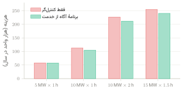
مثال 20.44 (مدت گرانتر از توان) پرسش. هزینه بر مگاواتساعتِ ذخیرهٔ نگهداشته (مگاوات × ساعتِ پنجره) را برای چهار اندازه با برنامهٔ آگاه حساب کنید. توان را دو برابر کردن گرانتر است یا مدت را؟
پاسخ. مگاواتساعتهای پنجره در سال: 5 × ۴ × ۳۶۵ = 7,300؛ برای 10 MW 14,600؛ برای 15 MW 21,900. هزینه بر واحد: 5 MW × 1 h: \(57.7/7.3 = 7.9\)؛ 10 MW × 1 h: \(105.0/14.6 = 7.2\)؛ 10 MW × 2 h: \(211.9/14.6 = 14.5\)؛ 15 MW × 1.5 h: \(240.5/21.9 = 11.0\) واحد.
تفسیر. دو برابر کردنِ توان در مدتِ یک ساعت هزینه بر واحد را تقریباً ثابت نگه میدارد؛ دو برابر کردنِ مدت آن را دو برابر میکند، چون کفِ انرژی بالا میرود و بخشِ بزرگتری از پنجره از جابهجایی گرفته میشود. همهٔ اندازهها الزامِ 95 % را برآورده میکنند، پس در این نیروگاه محدودیت پول است نه فیزیک. وارسی: برنامهٔ آگاه در هر اندازه ارزانتر از کنترلگرِ تنهاست و بیش از ده برابر هشدارِ کمتر دارد.
- هزینهٔ فرصتِ ذخیره با کنترلِ دلتا و با باتری چه فرقی دارد؟
- چرا دلتا عصرها کمتر در دسترس است؟
- سه هزینهٔ پنهانِ خدمتِ باتری را نام ببرید.
- چرا پس از فراخوانی ساعتهایی نگهداشتنشده ماندند؟
- چرا دو برابر کردنِ مدت گرانتر از دو برابر کردنِ توان است؟
20.8.6 پاسخ به یک رخدادِ بسامد: پاسخ و بازیابی
ایده. یک نیروگاهِ بزرگ در شبکه از مدار خارج میشود؛ بسامد در چند ثانیه به کف (nadir) میرسد، با پاسخِ مولدها تا حدی برمیگردد و چند دقیقه پایینتر از 50 Hz میماند تا ذخیرههای کندتر وارد شوند. اگر نیروگاهِ P پاسخِ بسامد بدهد (و فقط اگر خواسته و پذیرفته شده باشد)، باتری با افتِ معادلهٔ 20.6 پاسخ میدهد. سه کمیت مهم است: سرعت (زمان تا 90 % پاسخِ خواسته)، انرژی (چه مقدار از پنجره خرج شد) و بازیابی (چقدر طول میکشد تا باتری برای رخدادِ بعدی آماده شود).
a frequency event answered by the battery (4 % droop on 110 MW,
0.02 Hz deadband, battery 20 MW, response tau 0.2 s; A-303):
service cap MW peak MW time to 90 % s energy MWh recovery min
20 20.0 3.4 1.68 22
5 5.0 1.0 1.19 15
the droop asks 20.9 MW at the nadir: a 20 MW battery is at
its limit, a 5 MW service is cut to its contract; the energy
is small, the recovery (refill before the next event) is
what the energy floor and the plan must allow for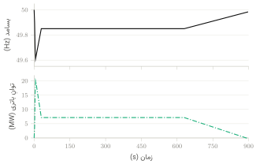
مثال 20.45 (رخدادی که انرژی کمی میخواهد) پرسش. در رخدادِ آموزشی، افت در کفِ 49.6 Hz چه توانی میخواهد؟ باتری با سقفِ 20 MW و با سقفِ قراردادیِ 5 MW چه میدهد، چه انرژیای خرج میکند و بازیابی با شارژِ 5 MW از نیروگاه چقدر طول میکشد؟
پاسخ. خواسته: \(\Delta f_\text{eff} = 0.38\,\text{Hz}\) و \(\Delta P = 0.38/(50 \times 0.04) \times 110 = 20.9\,\text{MW}\). سقفِ 20 MW: اوج 20 MW، زمان تا 90 % 3.4 s، انرژیِ 1.68 MWh، بازیابیِ 22 دقیقه. سقفِ 5 MW: اوج 5 MW، 1.0 s، 1.19 MWh، 15 دقیقه.
تفسیر. انرژیِ یک رخداد کوچک است (کمتر از 6 % پنجره)؛ دشواری توان و بازیابی است: اگر رخدادِ دوم پیش از بازیابی بیاید، یا اگر رخداد در عصری بیاید که باتری برای جابهجایی خالی شده، پاسخ کامل نیست. پس پاسخِ بسامد هم مانندِ ذخیره یک کفِ انرژی و توانِ کنارگذاشته میخواهد و برنامهریز باید آن را بشناسد (بخش 20.9). زمانِ پاسخِ 3.4 s بیشتر از کندیِ خودِ رخداد است (بسامد در 4 s به کف میرسد)، نه از باتری. وارسی: با سقفِ 20 MW، \(7.15\,\text{MW} \times 600\,\text{s} = 1.19\,\text{MWh}\) در نگهداشتِ 49.85 Hz؛ بخشِ بزرگِ 1.68 MWh از همین فاز است. با سقفِ 5 MW همین فاز فقط \(5 \times 600/3600 = 0.83\,\text{MWh}\) است؛ برابریِ 1.19 با عددِ سطرِ 5 MW تصادفی است.
- سه کمیتِ مهمِ پاسخِ بسامد را نام ببرید.
- افت در 49.7 Hz با همان تنظیمها چه توانی میخواهد؟
- چرا بیشترِ انرژی در فازِ نگهداشت خرج میشود؟
- بازیابیِ 1.68 MWh با شارژِ 10 MW چقدر طول میکشد؟
- چرا پاسخِ بسامد کفِ انرژی میخواهد؟
20.8.7 هماهنگیِ کنترلگرِ نیروگاه با عبور از خطا
ایده. هنگامِ افتِ ولتاژِ ناشی از خطای شبکه، هر مبدل و توربین با منطقِ خودش از خطا عبور میکند (بخش 9.4.5): جریانِ راکتیو تزریق میکند و توانِ اکتیو را کم میکند. کنترلگرِ نیروگاه در این لحظه نباید دخالت کند: خطای P را میبیند (تولید ناگهان پایین آمده) و اگر حلقهاش ادامه دهد، انتگرال انباشته میشود و پس از رفعِ خطا نیروگاه بیش از نقطهٔ تنظیم میدهد؛ اگر نقطهٔ تنظیم همان سقفِ صادرات باشد، این شکستنِ سقف درست پس از یک خطای شبکه است. سه رفتار را مقایسه میکنیم:
def frt_loop(dip_s: float, mode: str, kp=1.5, ki=0.8, tau=2.0,
dt=0.01, t_end=40.0):
"""Plant loop at its set point; at 10 s the units ride through a
dip and give only 0.2 pu for dip_s seconds whatever the command.
mode 'none': the PI keeps running; 'freeze': integral and command
held during the dip; 'hold': also held until the units have
recovered to 95 % of the command."""
y, integ, u = 1.0, 1.0 / ki, 1.0
held = False
ys = []
for k in range(int(t_end / dt)):
t = k * dt
dip = 10.0 <= t < 10.0 + dip_s
if mode == "freeze":
held = dip
elif mode == "hold":
held = dip or (held and y < 0.95 * u)
if not held:
e = 1.0 - y
integ += e * dt
u = kp * e + ki * integ
y = 0.2 if dip else y + dt * (u - y) / tau
ys.append(y)
return np.array(ys)plant loop through a voltage dip (units give 0.2 pu meanwhile):
dip s mode peak after dip pu time above 1.02 s
0.5 none 1.18 7.4
0.5 freeze 1.11 6.4
0.5 hold 1.01 0.0
1.5 none 1.35 8.7
1.5 freeze 1.11 6.4
1.5 hold 1.01 0.0
without a freeze the integral grows through the dip and the
overshoot grows with the dip; a freeze removes that part,
but the loop still reacts to the recovery itself; holding
until the units have recovered removes the overshoot: at an
export limit an overshoot is a breach of the cap right after
a grid fault (FRT coordination, ch 9 and ch 27)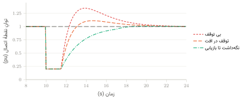
مثال 20.46 (توقف کافی نیست) پرسش. با افتِ 0.5 و 1.5 s، بیشینهٔ توان پس از افت و زمانِ بالای 1.02 pu را برای سه رفتار بنویسید و توضیح دهید.
پاسخ. بی توقف: 1.18 و 1.35 pu (با طولِ افت بزرگتر میشود)، 7.4 و 8.7 s. توقف در افت: 1.11 pu در هر دو، 6.4 s. نگهداشت تا بازیابی: 1.01 pu، صفر ثانیه.
تفسیر. دو سازوکار جدا: (۱) انباشت در افت که با طولِ افت رشد میکند و توقف آن را حذف میکند؛ (۲) واکنش به بازیابی: پس از افت، خروجی از 0.2 برمیگردد و حلقه این را خطای بزرگی میبیند و دوباره انتگرال میگیرد؛ نگهداشتن تا وقتی واحدها خودشان به 95 % برگردند این را هم حذف میکند. منطقِ واقعیِ این هماهنگی (شرطِ آغاز و پایانِ توقف، شیبِ بازیابیِ توان) از سازندهٔ مبدل و قواعدِ شبکه میآید و در مطالعهٔ فصلِ ۲۷ آزموده میشود. وارسی: تفاوتِ 1.35 و 1.11 سهمِ انباشت در افتِ 1.5 s است.
- چرا کنترلگرِ نیروگاه نباید در افتِ ولتاژ دخالت کند؟
- دو سازوکارِ فراجهش پس از افت را نام ببرید.
- چرا فراجهشِ «توقف در افت» به طولِ افت بستگی ندارد؟
- شرطِ پایانِ نگهداشت در این مدل چیست؟
20.8.8 پاسخِ شبهلختی از مبدلهای سازندهٔ شبکه
ایده. ژنراتورهای چرخان با لختیِ جرمشان در برابرِ تغییرِ بسامد مقاومت میکنند. مبدلِ سازندهٔ شبکه میتواند رفتاری شبیه بسازد (فقط اگر خواسته و اجازه داده شود): توانی متناسب با آهنگِ تغییرِ بسامد (به انگلیسی rate of change of frequency, RoCoF):
\[ P = \frac{2\,H\,S_\text{r}}{f_\text{n}}\,\left|\frac{df}{dt}\right| \tag{20.22}\]
که \(H\) ثابتِ لختیِ «مجازی» بر حسبِ ثانیه است.
inertia-like response of grid-forming battery inverters
(only if permitted; 20 MVA; P = 2 H S rocof / 50; A-303):
H s RoCoF Hz/s power MW energy over 2 s MWh
2 0.1 0.16 0.0001
2 0.5 0.80 0.0004
2 1.0 1.60 0.0009
4 0.1 0.32 0.0002
4 0.5 1.60 0.0009
4 1.0 3.20 0.0018
8 0.1 0.64 0.0004
8 0.5 3.20 0.0018
8 1.0 6.40 0.0036
the energy is tiny; the power is not, and it must be there
at once - the converter keeps headroom for it, and its
current limit, not the battery, sets what is possible;
whether such a response is wanted and how it is measured
are grid-operator decisions (chapter 28)مثال 20.47 (توانِ زیاد، انرژیِ ناچیز) پرسش. با \(H = 4\,\text{s}\)، 20 MVA و آهنگِ 0.5 Hz/s، توان و انرژیِ دو ثانیه چیست؟
پاسخ. \(P = 2 \times 4 \times 20 \times 0.5/50 = 1.6\,\text{MW}\)؛ انرژی \(1.6 \times 2/3600 = 0.0009\,\text{MWh}\).
تفسیر. انرژی در برابرِ پنجرهٔ 32 MWh ناچیز است؛ محدودیتِ واقعی جریانِ مبدل و آمادگیِ آنی است: مبدلی که با 20 MW دشارژ میکند جایی برای این پاسخ ندارد. پس پاسخِ شبهلختی هم توانِ کنارگذاشته میخواهد و جای خودش را در ثبتنامه (جدول 20.9) و در تعارضها (بخش 20.8.2) دارد. اینکه شبکه چنین پاسخی بخواهد و چگونه سنجیده شود، تصمیمِ بهرهبردارِ شبکه است (فصلِ ۲۸)؛ در نیروگاهِ P سازندگیِ شبکه «پیشنهاد نمیشود» (D-024).
- معادلهٔ 20.22 را برای \(H = 8\,\text{s}\) و 1 Hz/s حساب کنید.
- چرا پاسخِ شبهلختی توانِ کنارگذاشته میخواهد؟
20.9 ح. آزمایشگاهِ یکپارچهٔ راستیآزمایی
20.9.1 خدمتِ فرضیِ REQ-S01 در یک سال
ایده. این آزمایشگاه همهٔ فصل را در یک شبیهسازیِ کراندار جمع میکند: پیشبینیِ ناکامل، سقفهای بهرهبردار، قیمتها، کنترلگرِ ساعتی با اولویتها، و یک نیازمندیِ خدمتِ فرضی با منبعِ ثبتشده. نیازمندی:
REQ-S01 (فرضی، A-300، از ثبتنامهٔ آموزشیِ PLP-PRJ-REG-0007): نیروگاه هر روز از 18:00 تا 22:00 توانِ 5 MW ذخیرهٔ بالارو را برای 1 h نگه دارد؛ معیارِ پذیرش: ساعتهای نگهداشت دستکم 95 % ساعتهای پنجره در سال؛ هر فراخوانی با 5 MW پاسخ داده شود.
این نیازمندی از هیچ قاعدهٔ شبکهای نیست؛ ساخته شده تا روشِ راستیآزمایی را نشان دهد. قیدِ «شارژ فقط از نیروگاه» (A-012) برقرار است.
پنج حالت. (۱) فقط جابهجایی؛ (۲) ذخیره را فقط کنترلگر نگه میدارد (برنامه از خدمت خبر ندارد)؛ (۳) برنامه کفِ انرژی و توانِ کنار گذاشته را میشناسد؛ (۴) خدمت هر روز فقط اگر با پیشبینیِ محتاط (چندکِ 0.10) ممکن باشد اعلام میشود؛ (۵) حالتِ ۴ با ۱۵ فراخوانی و ۶ قطعِ ارتباطِ سهساعته.
def run_year(mode: str, calls=(), outages=(), mw: float = S["mw"],
hours: float = S["hours"]):
"""mode: 'none' | 'controller' | 'plan' | 'declared' | 'replan'
(re-plan the rest of the day at 06, 10, 14 and 17 h with the
intraday forecast). calls: hours
when the operator calls the reserve; outages: (start hour, length)
of communication losses; mw, hours: size of the service."""
act = np.clip(src.poc_actual(), 0, None)
fc = np.clip(src.poc_forecast(24), 0, None)
# cautious forecast: 10 % quantile of the actual for each forecast bin
cautious = np.clip(fc + ee.bid_offsets(fc, act, 0.10), 0, None)
cap, price = eb.caps(), src.prices()
lost = np.zeros(8760, bool)
for t0, n in outages:
lost[t0:t0 + n] = True
fc_id = np.clip(src.poc_forecast(4), 0, None)
c = ct.Controller(e=L["e_min"], reserve_h=hours)
fl = floor_mwh(mw, hours)
out = {"rev": 0.0, "held": 0, "window": 0, "declared": 0,
"calls_ok": 0, "calls": 0, "dis": 0.0}
for d in range(365):
h = slice(d * 24, d * 24 + 24)
floor = np.full(24, L["e_min"])
room = np.clip(cap[h] - fc[h], 0, None)
if mode in ("plan", "declared", "replan"): # plan knows service
floor[W0:W1] = fl
room[W0:W1] = np.minimum(room[W0:W1], L["bess_mw"] - mw)
args = (price[h], np.minimum(fc[h], L["bess_mw"]), room,
L["bess_mw"], L["e_min"], L["e_max"], round(c.e), L["eta"])
val, _, plan = ct.dp_schedule(*args, wear=10.0, floor=floor,
e_end=L["e_min"])
ok_day = np.isfinite(val)
if mode == "declared" and ok_day: # also with a cautious forecast
low = (price[h], np.minimum(cautious[h], L["bess_mw"])) + args[2:]
v_low, _, _ = ct.dp_schedule(*low, wear=10.0, floor=floor,
e_end=L["e_min"])
ok_day = np.isfinite(v_low)
if not ok_day: # cannot hold it: plan without
args = args[:2] + (np.clip(cap[h] - fc[h], 0, None),) + args[3:]
_, _, plan = ct.dp_schedule(*args, wear=10.0, e_end=L["e_min"])
offer = mode != "none" and (mode != "declared" or ok_day)
out["declared"] += int(offer)
for k in range(24):
t = d * 24 + k
if mode == "replan" and ok_day and k in (6, 10, 14, 17):
g = slice(t, d * 24 + 24)
rm = np.clip(cap[g] - fc_id[g], 0, None)
rm[W0 - k:] = np.minimum(rm[W0 - k:], L["bess_mw"] - mw)
v2, _, p2 = ct.dp_schedule(
price[g], np.minimum(fc_id[g], L["bess_mw"]), rm,
L["bess_mw"], L["e_min"], L["e_max"], round(c.e),
L["eta"], wear=10.0, floor=floor[k:], e_end=L["e_min"])
if np.isfinite(v2):
plan = np.concatenate([plan[:k], p2])
in_win = offer and W0 <= k < W1
c.reserve_up = mw if in_win else 0.0
req = plan[k]
if in_win:
out["window"] += 1
comms = not lost[t] or c.lost_h < c.timeout_h
if c.e >= fl - 1e-6 and comms:
out["held"] += 1
if t in calls: # reserve released and used
out["calls"] += 1
c.reserve_up = 0.0
req = max(plan[k], 0.0) + mw
r = c.step(t, act[t], req, cap[t], not lost[t])
if in_win and t in calls and r["discharge"] >= mw - 1e-6:
out["calls_ok"] += 1
out["rev"] += r["export"] * price[t]
out["dis"] += r["discharge"]
out["alarms"] = len(c.alarms)
out["alarm_list"] = c.alarms
return outREQ-S01: hold 5 MW up for 1 h, 18-22 h daily, 95 % of window hours (A-300)
energy floor = e_min + 5 MW x 1 h / eta = 9.39 MWh
case days held % revenue k u EFC alarms
arbitrage only 0 0.0 14,249.4 337 77
controller holds reserve 365 100.0 14,191.4 318 1147
reserve in the plan 365 100.0 14,191.7 336 104
declared day-ahead 365 100.0 14,191.7 336 104
declared + calls + outages 365 99.2 14,192.4 336 153
revenue includes all export; differences are the service's cost;
EFC = equivalent full cycles of the 32 MWh window a year
the controller alone holds the reserve by refusing the plan
(1,147 alarms); a plan that knows the floor and the 15 MW
left for scheduling keeps the same reserve with 104 alarms;
the cautious check (10 % quantile forecast) declared every
day: the plant fills 9.4 MWh before 18:00 on all of themمثال 20.48 (نیازمندی برآورده میشود؛ پرسش این است با چه هزینهای) پرسش. کدام حالتها الزامِ 95 % را برآورده میکنند؟ تفاوتِ حالتِ ۲ و ۳ در چیست؟ چرا حالتِ ۴ با ۳ یکی است؟
پاسخ. همهٔ حالتهای ۲ تا ۵ برآورده میکنند (99.2 تا 100 %). حالتِ ۲ و ۳ تقریباً همان درآمد را دارند (14,191.4 و 14,191.7 هزار) ولی حالتِ ۲ 1,147 هشدار میسازد و حالتِ ۳ فقط 104. حالتِ ۴ همان ۳ است چون بررسیِ محتاط هر ۳۶۵ روز را ممکن دید: نیروگاه همیشه پیش از 18:00 دستکم 9.4 MWh را پر میکند.
تفسیر. کنترلگری که برنامهٔ ناآگاه را محدود میکند، به نیازمندی میرسد اما بهرهبردار را با هشدار غرق میکند؛ نسخهٔ نخستِ همین آزمایشگاه حتی 23 هزار واحد گرانتر بود، چون برنامهریز توانِ کنار گذاشته را نمیشناخت و دشارژِ ناممکن برنامه میکرد. درس: هر قیدی که کنترلگر اعمال میکند، برنامهریز هم باید بشناسد. وارسی: چرخهها در حالتِ ۳ (336) تقریباً برابرِ جابهجاییِ تنها (337)؛ خدمتِ نگهداشته ولی کمفراخوانده باتری را فرسوده نمیکند.
service evidence of the last case:
calls answered with 5 MW: 15 of 15
window hours held: 1448 of 1460 (99.2 %)
arbitrage lost to the declared service: 57.7 k u a year
= 7.90 u per MW-hour of reserve held (7,300 MW-h)
the price the service must pay at least, before wear and
the penalty for hours not held (chapter 21)مثال 20.49 (شاهدِ خدمت و قیمتِ کمینه) پرسش. در حالتِ ۵، چند فراخوانی پاسخ گرفت و چند ساعت نگهداشته نشد؟ هزینهٔ خدمت بر هر مگاواتساعتِ ذخیرهٔ نگهداشته چیست؟
پاسخ. ۱۵ از ۱۵ فراخوانی با 5 MW پاسخ گرفتند؛ 1,448 از 1,460 ساعت نگه داشته شد (99.2 %). هزینه: \(57.7 \times 1000 / 7{,}300 = 7.90\) واحد بر مگاواتساعت.
تفسیر. 7.90 واحد کفِ قیمتِ خدمت است، پیش از هزینهٔ فرسایشِ فراخوانیها و جریمهٔ ساعتهای نگهداشتنشده. قیمتِ خدمت در فصلِ ۲۱ با همین عدد شروع میشود. وارسی: ساعتهای نگهداشتنشده از دو منبعاند: پس از فراخوانی (انرژی به زیرِ کف رفته و نیروگاه در عصر نمیتواند پرش کند) و در قطعِ ارتباطِ پس از زمانِ نگهداشت.
20.9.2 آزمونهای اولویت و لغو
priority and override tests (REQ-S01 with the controller):
PASS request 30 MW with reserve: clamped to 15 MW
PASS operator cap 0 MW: no export, battery may not discharge
PASS at the floor: scheduled discharge refused
PASS call at the floor: 5 MW delivered
PASS comms lost past timeout: fallback idle, alarm raisedمثال 20.50 (پنج قاعده که نباید شکسته شوند) پرسش. برای هر آزمونِ بالا، قاعدهای را که میسنجد بنویسید.
پاسخ. (۱) درخواستِ 30 MW با ذخیره: توانِ مبدل میانِ خدمت و برنامه تقسیم شده و برنامه بیش از 15 MW نمیگیرد؛ (۲) سقفِ صفر: دستورِ بهرهبردار بالاتر از برنامه و باتری هم نباید صادر کند؛ (۳) در کف: دشارژِ برنامهای رد میشود؛ (۴) فراخوانی در کف: ذخیره برای همین نگه داشته شده و آزاد میشود؛ (۵) قطعِ ارتباط پس از زمانِ نگهداشت: پشتیبان و هشدار.
تفسیر. آزمونِ (۳) و (۴) دو روی یک سکهاند: کف جلوی برنامه را میگیرد ولی جلوی فراخوانی را نه. کنترلگری که این دو را از هم جدا نکند، یا ذخیره را برای برنامه خرج میکند یا در فراخوانی پاسخ نمیدهد. وارسی: هر پنج آزمون PASS.
- REQ-S01 را با معیارِ پذیرشش بازنویسی کنید.
- پنج حالتِ آزمایشگاه را نام ببرید.
- چرا حالتِ ۲ هشدارِ زیادی میسازد؟
- کفِ قیمتِ خدمت را از خروجیها حساب کنید.
- ساعتهای نگهداشتنشده از کدام دو منبع میآیند؟
- تفاوتِ آزمونهای (۳) و (۴) را توضیح دهید.
- اگر شارژ از شبکه مجاز بود، کدام عدد بهتر میشد؟
20.9.3 هشدارها از کجا میآیند
ایده. شمارِ هشدار در آزمایشگاه (مثال 20.48) نشان داد که برنامهٔ ناآگاه ده برابر هشدار میسازد. برای اصلاح باید بدانیم هشدارها از چه نوع و در چه ساعتیاند؛ همان کاری که بهرهبردار در نیروگاهِ واقعی با گزارشِ ماهانهٔ هشدارها میکند.
controller alarms by type in a year (REQ-S01, no calls):
type controller only plan knows service
charge limited 391 70
discharge limited 756 34
busiest hour (controller only): 14:00 with 356 alarms
two thirds of the first case are 'discharge limited' in the
window hours (the plan asks for energy the reserve keeps); the
rest are 'charge limited' around midday, when recapture has
already filled the battery; the alarm count measures how far
the plan and the controller disagree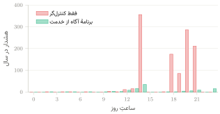
مثال 20.51 (دو خوشه) پرسش. هشدارهای حالتِ «فقط کنترلگر» از چه نوعاند و در چه ساعتهایی؟ برنامهٔ آگاه کدام را حذف کرد؟
پاسخ. 756 «دشارژ محدود شد» و 391 «شارژ محدود شد». دشارژها در ساعتهای پنجره (18 تا 21) و شارژها حوالیِ ظهر؛ شلوغترین ساعت 14:00 با 356 هشدار. برنامهٔ آگاه دشارژها را از 756 به 34 و شارژها را از 391 به 70 رساند.
تفسیر. دو خوشه دو علت دارند: در عصر برنامه انرژیِ ذخیره را میخواهد (برنامه کف را نمیشناسد)؛ در ظهر برنامه شارژی میخواهد که بازگیری پیشتر انجام داده است (برنامه کاهشِ واقعی را نمیبیند). اولی با کف در برنامه حل شد؛ دومی با بهروزرسانیِ درونروز کم میشود (مثال 20.32). قاعده: پیش از پنهانکردنِ هر هشدار، علتش را در برنامه یا تنظیم بیابید. وارسی: \(756 + 391 = 1{,}147\) همان شمارِ مثال 20.48.
- دو خوشهٔ هشدار را با علتِ هر کدام بنویسید.
- چرا هشدارهای شارژ با برنامهٔ آگاه کاملاً حذف نشدند؟
- یک گزارشِ ماهانهٔ هشدار چه ستونهایی باید داشته باشد؟
20.10 نیروگاهِ P: سه مثالِ یکپارچه
سه مثالِ زیر از ساده به یکپارچه پیش میروند. دادهها: بستهٔ دادهٔ 1.1.0، سناریوی S1 (با باتری)، مدلِ ۱۵٫۱ برای تولید و پیشبینیهای آموزشیِ فصلِ ۱۵؛ حدها و قیمتها آموزشی (A-299 تا A-303، A-273، A-295).
hour 11 of day 73 by hand (cap 80 MW, battery at 6.4 MWh):
plant 105.2 MW; battery room (36 - 6.4) / 0.927 = 31.9 MWh -> charge 20.0 MW
export min(105.2 - 20.0, 80) = 80.0 MW; curtailed 5.2 MW
energy after the hour 6.4 + 20.0 x 0.927 = 24.9 MWhمثال 20.52 (مقدماتی: یک ساعت با دست) پرسش. ساعتِ 11 روزِ ۷۳ را بی رایانه حل کنید: تولیدِ 105.2 MW، سقفِ 80 MW، باتری با 6.4 MWh، توانِ 20 MW، \(\eta = 0.927\).
پاسخ. جای باتری \((36 - 6.4)/0.927 = 31.9\,\text{MWh}\) است، پس شارژ به حدِ توان میرسد: 20 MW. صادرات \(\min(105.2 - 20, 80) = 80\,\text{MW}\) و کاهش \(105.2 - 20 - 80 = 5.2\,\text{MW}\). انرژی پس از ساعت \(6.4 + 20 \times 0.927 = 24.9\,\text{MWh}\).
تفسیر. ترتیب مهم است: اول سقف (اولویتِ ۲)، سپس جای باتری با بازگیری (اولویتِ ۵)؛ کنترلگر همین را کرد (مثال 20.24). وارسی: تراز \(80 + 20 + 5.2 = 105.2\).
day 73 with and without REQ-S01 in the plan:
case SOC at 18 h discharge 18-22 MWh value k u alarms
no service 36.0 29.7 61.57 2
REQ-S01 36.0 24.1 61.16 2
the service keeps 9.4 MWh in the battery through the window
and gives up part of the evening discharge; the rest of the
day is unchangedمثال 20.53 (میانی: همان روز با خدمتِ REQ-S01) پرسش. اگر برنامهٔ روزِ ۷۳ خدمتِ ذخیره را بشناسد، انرژی در ساعتِ 18، دشارژِ عصر و ارزشِ روز چه میشود؟
پاسخ. انرژی در 18 در هر دو حالت 36 MWh است (باتری از کاهشِ ظهر پر شده)؛ دشارژِ 18 تا 22 از 29.7 به 24.1 MWh و ارزشِ روز از 61.57 به 61.16 هزار واحد میرسد.
تفسیر. در روزی آفتابی با سقف، جایگیری رایگان است (باتری در هر حال پر است) و هزینهٔ خدمت فقط بخشی از دشارژِ گرانِ عصر است که در کف میماند: 0.41 هزار واحد. میانگینِ سالانه (57.7 هزار در ۳۶۵ روز، یعنی 0.16 هزار در روز) کمتر است، چون در بیشترِ روزها دشارژِ عصر به کف نمیرسد. وارسی: \(29.7 - 24.1 = 5.6\,\text{MWh}\) کمتر دشارژ شد.
control basis of Plant P (D-024), numbers from this chapter:
hierarchy: scheduling / EMS / PPC / subsystems / devices
PPC loop: kp 1.5, ki 0.8 on tau 2 s; anti-windup; delay <= 0.5 s
priorities: safety > operator > service > schedule > recapture
comms loss: hold 1 h, then battery fallback; cap never raised
battery value with day-ahead plans 469 k u/yr (99.5 % of perfect)
imbalance: day-ahead 1,245 -> intraday 919 k u/yr (teaching)
bid at quantile 0.25: penalty -16 % (Sep-Dec)
REQ-S01 in the plan: held 99.2 % with calls and outages, cost
57.7 k u/yr = 7.90 u per MW-h held, 104 alarms/yr
island only for critical loads; black start not offeredمثال 20.54 (یکپارچه: مبنای کنترلِ نیروگاهِ P) پرسش. مبنای کنترلِ نیروگاهِ P را در یک صفحه بنویسید: لایهها، حلقه، اولویتها، رفتار در خرابی، برنامهریزی، خدمتها و شاهدها.
پاسخ. (۱) لایهها: زمانبندی، مدیریتِ انرژی، کنترلگرِ نیروگاه، زیرسامانهها، دستگاهها (جدول 20.1). (۲) حلقه: PI با \(k_p = 1.5\) و \(k_i = 0.8\) روی پارکِ \(\tau = 2\,\text{s}\)، ضدِ انباشت، تأخیرِ مسیر حداکثر 0.5 s (مثال 20.4). (۳) اولویتها: ایمنی، بهرهبردار، خدمت، برنامه، بازگیری (شکل 20.9). (۴) خرابی: نگهداشتِ یکساعته و سپس پشتیبان، سقف هرگز بالا نمیرود (جدول 20.2) و ماشینِ حالتِ اصلاحشده (شکل 20.10). (۵) برنامهریزی: برنامهریزِ پویا با پیشبینیِ روزِ بعد، بهروزرسانی در چهار نوبت، پیشنهادِ چندکِ 0.25 اگر قواعد اجازه دهند. (۶) خدمتها: سقف و توانِ راکتیو پایه؛ ذخیره، شیب و پاسخِ بسامد مشروط؛ جزیره فقط برای بارهای حیاتی؛ سازندگیِ شبکه و راهاندازیِ سیاه پیشنهاد نمیشوند (جدول 20.9). (۷) شاهدها: جدول 20.6 و پایشِ ساعتهای نگهداشت.
تفسیر. این مبنا تصمیمِ D-024 است. هیچ عددِ آن الزامِ شبکه نیست؛ هر تنظیم با قراردادِ اتصال و مطالعههای فصلهای ۲۷ و ۲۸ جایگزین میشود و مجهولهای U-077 تا U-080 باز میمانند. وارسی: هر بندِ مبنا در یکی از آزمونهای این فصل شاهد دارد.
20.11 عددهای کلیدیِ کنترلِ نیروگاهِ P
| کمیت | مقدار | مثال |
|---|---|---|
| میرایی و زمانِ خیزِ حلقهٔ تنظیمشده | \(\zeta = 0.99\)؛ 2.70 s | مثال 20.2 |
| فراجهش با شیب، بی و با ضدِ انباشت | 82.2؛ 0 % | مثال 20.3 |
| تأخیری که حلقهٔ تند را ناپایدار میکند | 0.5 s | مثال 20.4 |
| پاسخ در 49.9 Hz | +4.4 MW | مثال 20.7 |
| کاهش با سقفهای آموزشی | 904 MWh در سال | مثال 20.11 |
| باتری برای حدِ شیبِ 5 MW/min | 14.0 MW، 0.85 MWh | مثال 20.12 |
| توانِ راکتیو در 100 MW: بی و با باتری | 22.9؛ 44.9 Mvar | مثال 20.13 |
| ارزشِ افزودهٔ باتری با برنامهٔ روزِ بعد | 469 هزار در سال | مثال 20.26 |
| جریمهٔ عدمِ تعادل: روزِ بعد، درونروز | 1,245؛ 919 هزار | مثال 20.28 |
| کاهشِ جریمه با چندکِ 0.25 | 16 % | مثال 20.29 |
| ذخیرهٔ دلتا: هزینه، نگهداشت | 446 هزار؛ 69.8 % | مثال 20.43 |
| REQ-S01: نگهداشت، هزینه، هشدار | 99.2 %؛ 57.7 هزار؛ 104 | مثال 20.49 |
| نسبتِ کمینهٔ حلقهٔ بیرونی به درونی | 4 | مثال 20.6 |
| بودجهٔ تأخیر و حاشیه | 315 ms؛ 185 ms | مثال 20.20 |
| پارکِ برازششده: ثابتِ زمانی، تأخیر | 2.60 s؛ 0.35 s | مثال 20.22 |
| افقِ لغزانِ کافی | 8 تا 12 h | مثال 20.10 |
| فراجهش پس از افتِ 1.5 s: بی توقف، نگهداشت | 1.35؛ 1.01 pu | مثال 20.46 |
| دوامِ یکروزهٔ جزیره با کفِ 20 MWh | 93 % شروعها | مثال 20.40 |
| جذبِ انحراف با باتری | 389 هزار؛ 292 چرخه | مثال 20.34 |
20.12 گردشِ کارِ طراحیِ کنترل
- نیازمندیها را از قرارداد، قواعدِ شبکه و ثبتنامهٔ فصلِ ۱۷ بخوانید؛ برای هر خدمت چهار شرط را وارسی کنید (بخش 20.8.1).
- لایهها، رابطها و رفتارِ هر لایه در خرابی را بنویسید (جدول 20.1، جدول 20.2).
- منحنیِ توانایی، جای بالارو و پایینرو و نوارِ حالتِ شارژ را حساب کنید (بخش 20.3.3، بخش 20.3.6).
- ترتیبِ اولویت و تقسیمِ منابع میانِ خدمتها را تعیین کنید؛ تعارضها را از روی منابع بیابید (بخش 20.8.2).
- روایتِ کنترل و ماشینِ حالت را بنویسید و ماشین را خودکار بررسی کنید (بخش 20.4.2).
- حلقهها را با مدل تنظیم کنید و حاشیهٔ تأخیر را بسنجید (بخش 20.2.3، بخش 20.2.4).
- برنامهریز را با همان قیدهایی بسازید که کنترلگر اعمال میکند (مثال 20.48).
- آزمونها را از منطق تا پایش برنامهریزی کنید و تنظیمات را با اثرانگشت نگه دارید (جدول 20.6، بخش 20.4.4).
20.13 آزمایشگاههای پایتونِ این فصل
| آزمایشگاه | برنامه | آنچه میسازد |
|---|---|---|
| دادهها | sources | حدها، خدمتِ REQ-S01، جریمهها، پیشبینیها، قیمتها |
| حلقهها و افت | examples_a | لایهها، پاسخِ PI، ضدِ انباشت، تأخیر، افتِ بسامد و ولتاژ |
| قیدها | examples_b | سقف و تقسیمِ کاهش، شیب، منحنیِ توانایی، جای باتری، ذخیرهٔ دلتا |
| طراحی | lab_c | ثبتنامهٔ خدمتها، تعارضها، ماشینِ حالت، اثرانگشتِ تنظیمات |
| دیسپاچِ ساعتی | lab_d | مثالِ کارشده و آزمونهای لبه |
| پیشبینی و برنامه | examples_e | افقها، عدمِ تعادل، پیشنهاد، ذخیره، یک سال برنامه |
| خدمت | lab_e | آزمایشگاهِ یکپارچه: حالتها، شاهد، لغوها، اندازهها |
| جزیره | examples_f | سهمبندیِ بار، کاستنِ بار، راهاندازیِ سیاه، همزمانسازی |
| نظریه و طراحیِ بیشتر | examples_g | نمونهبرداری، حلقههای تو در تو، ولتاژ و قدرتِ شبکه، تقسیمِ راکتیو، بودجهٔ تأخیر، دسترسپذیریِ کنترلگر |
| بهرهبرداری | examples_h | هشدارها، انرژیِ پایانِ روز، دوامِ جزیره |
| رخدادها و اعتبارسنجی | examples_k | رخدادِ بسامد، عبور از خطا، اعتبارسنجیِ مدل، جذبِ انحراف |
| افق و ذخیره | examples_m | افقِ لغزان، ذخیرهٔ پویا |
| خبر و لختی | examples_n | ارزشِ خبرِ سقف، پاسخِ شبهلختی |
| نیروگاهِ P | integrated | یک ساعت، روز با خدمت، مبنای کنترل |
| مثالها و پاسخها | worked | سطرهای E01 و P01 به بعد |
ماژولِ control با آزمونهایش (هشت آزمون در برابرِ حسابِ دستی) پایهٔ همهٔ این برنامههاست.
20.14 ساخت و تولیدِ صنعتی در این فصل
کنترلگرِ نیروگاه یک محصولِ ساختِ کارخانه است و این فصل سه پیوند با بخشِ تولید دارد: (۱) ساختِ تابلو و بارگذاریِ نرمافزار با پروندهٔ جدول 20.5 که در فصلِ ۴۴ به روالِ کارخانه تبدیل میشود؛ (۲) آزمونِ پذیرشِ کارخانه با شبیهسازِ نیروگاه که همهٔ نقطهها، حالتها و گذارها را میآزماید (فصلِ ۴۸)؛ (۳) مدیریتِ پیکربندی از کارخانه تا محل با اثرانگشتها (مثال 20.19) که در راهاندازی (فصلِ ۵۰) امضا میشود. تولیدِ تجهیزاتی که کنترلگر فرمان میدهد (مبدل، توربین، باتری) در فصلهای ۹، ۱۱، ۱۹ و ۴۱ تا ۴۸ آمده است.
20.15 جعبهٔ استاندارد و انطباق
- IEEE Std 2800-2022: استانداردِ اتصال و همکنشپذیریِ منابعِ مبتنی بر مبدل به شبکهٔ انتقال (عبور از اختلال، کنترلِ توانِ اکتیو و راکتیو). نمونهای از الزامهای هماهنگشده؛ پذیرشِ آن در هر شبکه جداست و در ایران، افغانستان و تاجیکستان پذیرفتهشده بودنش تأیید نشده است. هیچ عددی از آن نقل نشده است. (وارسیشده 2026-11-16.)
- IEC TS 63102:2026: روشهای ارزیابیِ انطباقِ نیروگاههای تجدیدپذیر با قواعدِ شبکه. ویرایشِ نخست (2021) سه راه داشت: آزمون، شبیهسازی و پایش؛ ویرایشِ دوم جانشینِ آن شده است. مشخصهٔ فنی است نه استاندارد.
- IEC 61400-27-1:2020: مدلهای عمومیِ شبیهسازیِ برقیِ توربین و نیروگاهِ بادی برای مطالعههای پایداری.
- IEC 61850-7-420:2021 و خانوادهٔ IEC 61850: مدلهای دادهٔ منابعِ پراکنده و ذخیره؛ IEC 60870-5-104 برای پیوند با مرکزِ کنترل (بخش 18.4.11).
- قواعدِ شبکهٔ هر کشور: خدمتها، تنظیمها و زمانهای پاسخ از قواعد و قراردادِ اتصال میآیند (فصلهای ۲۸ و ۵۵ تا ۵۷)؛ این فصل هیچکدام را نقل نمیکند.
20.16 تحویلدادنیِ نیروگاهِ P
این فصل اینها را به پروندهٔ نیروگاهِ P میافزاید:
- PLP-CTL-SPC-0001، بازنگریِ A: روایتِ کنترل و تنظیمات با اثرانگشت: لایهها، حالتها، اولویتها، رفتار در خرابی، هشدارها (بخش 20.4).
- PLP-CTL-REG-0001، بازنگریِ A: ثبتنامهٔ خدمتها با وضعیت، حالت، منابع، معیار و شاهد (جدول 20.9، بخش 20.8.1).
- PLP-CTL-CAL-0001، بازنگریِ A: مدلِ دیسپاچ و آزمایشگاهِ خدمت با آزمونهای لبه (بخش 20.5، بخش 20.9).
- PLP-CTL-PRO-0001، بازنگریِ A: برنامهٔ آزمونِ کنترلگر از منطق تا پایش (جدول 20.6).
- کتابخانهٔ همراه: ماژولِ
controlبا آزمونها و برنامههای فصلِ ۲۰. - فرضها: A-299 حدها و تنظیمهای کنترل (سقفِ 100 MW، افت، باند مرده، بهرهها، زمانِ نگهداشت)؛ A-300 خدمتِ فرضیِ REQ-S01؛ A-301 جریمههای عدمِ تعادل؛ A-302 سقفهای بهرهبردار و خواستهٔ ضریبِ توان؛ A-303 مقدارهای جزیره، بارهای حیاتی، راهاندازیِ سیاه و پنجرهٔ همزمانی. همه آموزشی.
- مجهولها: U-077 خدمتها، تنظیمها و زمانهای پاسخی که بهرهبردارِ شبکه میخواهد؛ U-078 قواعدِ تسویهٔ عدمِ تعادل و امکانِ اصلاحِ درونروز؛ U-079 تأخیرِ مسیرِ ارتباطی و سیاستِ زمانِ نگهداشتِ مرکزِ کنترل؛ U-080 اینکه جزیرهٔ فیدرِ بیرونی یا راهاندازیِ سیاه خواسته شود.
- تصمیم D-024: مبنای کنترلِ نیروگاهِ P همان مثال 20.54 است.
- دفترِ سندها (جدول 2.18): چهار ردیفِ بالا با وضعیتِ «پیشنویس، آموزشی».
20.17 جمعبندی
- سلسلهمراتب: پنج لایه با مقیاسهای زمانیِ جدا؛ حد از پایین، دستور از بالا، گزارشِ توانایی؛ دستورِ بهرهبردار بالاتر از هر برنامه (بخش 20.2).
- حلقه: سامانهٔ مرتبهٔ اول با PI؛ میرایی از \(k_p\) و \(k_i\)؛ ضدِ انباشت پس از هر محدودکننده؛ تأخیر سرعتِ مجاز را تعیین میکند (بخش 20.2.3).
- قیدها: سقف و تقسیمِ کاهش (بندِ قرارداد)، شیب (باتریِ توانمحور)، منحنیِ توانایی، نوارِ حالتِ شارژ و کفِ انرژی، اولویتها و حالتهای کاهشیافته (بخش 20.3).
- طراحی: نیازمندی تا روایت تا ماشینِ حالت تا آزمون؛ بررسیِ خودکارِ ماشین؛ هشدارِ کم با برنامهٔ درست؛ اثرانگشتِ تنظیمات؛ شاهد از آزمون، شبیهسازی و پایش (بخش 20.4).
- پیشبینی: سه افق، سه کار؛ اصلاحِ درونروز جریمه را 26 % و پیشنهادِ چندکِ 0.25 آن را 16 % کم کرد؛ ذخیره با سطحِ پیشبینی رشد میکند (بخش 20.6).
- جزیره و خدمتها: سهمبندی با افت؛ کاستنِ بار به ترتیب؛ راهاندازیِ سیاه و همزمانسازی فقط با اجازه و مطالعه؛ هر خدمت در ثبتنامه با چهار شرط، منبع، معیار و شاهد؛ تعارض از منابعِ مشترک (بخش 20.7، بخش 20.8).
- راستیآزمایی: REQ-S01 در یک سال با 99.2 % نگهداشت و 7.90 واحد بر مگاواتساعت؛ برنامهریز باید همان قیدهای کنترلگر را بشناسد (بخش 20.9).
20.17.1 واژگانِ فصلِ ۲۰
| فارسی | انگلیسی | یادداشت |
|---|---|---|
| سلسلهمراتبِ کنترل | control hierarchy | |
| کنترلگرِ نیروگاه | power plant controller | PPC |
| سامانهٔ مدیریتِ انرژی | energy management system | EMS |
| حلقهٔ بسته | closed loop | |
| کنترلگرِ تناسبیانتگرالی | proportional-integral controller | PI |
| ثابتِ زمانی | time constant | |
| بسامدِ طبیعی | natural frequency | |
| ضریبِ میرایی | damping ratio | |
| فراجهش | overshoot | |
| انباشتِ انتگرال | integrator windup | |
| ضدِ انباشت | anti-windup | |
| افتِ مشخصه | droop | |
| باند مرده | deadband | |
| جای بالارو | headroom | |
| جای پایینرو | footroom | |
| منحنیِ توانایی | capability curve | P-Q |
| حدِ شیب | ramp-rate limit | |
| کاهشِ تولید | curtailment | |
| دیسپاچ | dispatch | |
| برنامهریزی (زمانبندی) | scheduling | |
| بهروزرسانیِ برنامه | re-dispatch | |
| برنامهریزیِ پویا | dynamic programming | |
| کفِ انرژی | energy floor | |
| جایگیریِ حالتِ شارژ | SOC positioning | |
| عدمِ تعادل | imbalance | |
| ماشینِ حالت | state machine | |
| روایتِ کنترل | control narrative | |
| مدیریتِ پیکربندی | configuration management | |
| اثرانگشت (چکیده) | fingerprint (hash) | SHA-256 |
| سختافزار در حلقه | hardware in the loop | HIL |
| حالتِ پشتیبان | fallback mode | |
| حالتِ کارِ کاهشیافته | degraded mode | |
| لغوِ بهرهبردار | operator override | |
| کاستنِ بار | load shedding | |
| راهاندازیِ سیاه | black start | |
| لغزش | slip frequency | |
| رلهٔ بررسیِ همزمانی | synchro-check relay | |
| کنترلِ دلتا | delta control | |
| هزینهٔ فرصت | opportunity cost | |
| ثبتنامهٔ خدمتها | service register | |
| عبور از خطا | fault ride-through | FRT |
| نگهدارِ مرتبهٔ صفر | zero-order hold | |
| دورهٔ نمونهبرداری | sample period | |
| حلقههای تو در تو | cascaded loops | |
| نسبتِ اتصالِ کوتاه | short-circuit ratio | SCR |
| کفِ بسامد | frequency nadir | |
| ارزشِ پایانی | terminal value | |
| افقِ لغزان | receding horizon | MPC |
| اعتبارسنجیِ مدل | model validation | |
| بودجهٔ تأخیر | latency budget | |
| ذخیرهٔ پویا | dynamic reserve | |
| آهنگِ تغییرِ بسامد | rate of change of frequency | RoCoF |
| ارزشِ اطلاعات | value of information | |
| پاسخِ شبهلختی | inertia-like (synthetic inertia) response |
20.18 ارزیابیِ پلکانی
معیارِ تسلطِ این فصل: خواننده میتواند لایهها و اختیارها را بنویسد، حلقه و افت را تحلیل کند، قیدها و اولویتها را عددی کند، دیسپاچ را بهینه کند، ماشینِ حالت و آزمونها را طراحی کند، پیشبینیِ ناکامل را به ذخیره و پیشنهاد ترجمه کند، و یک خدمتِ فرضی را با شاهد راستیآزمایی کند. پاسخها در بخش 20.19 آمدهاند.
20.18.1 پلهٔ ۱: مبانی
تمرین 20.1 پنج لایهٔ کنترلِ نیروگاه را از پایین به بالا با مقیاسِ زمانیِ هر کدام بنویسید.
تمرین 20.2 سه قاعدهٔ نگهدارندهٔ سلسلهمراتب را نام ببرید.
تمرین 20.3 پنج هدفِ مدیریتِ انرژی را به ترتیبِ اهمیت بنویسید.
تمرین 20.4 پیشبینی، برنامهریزی و دیسپاچ را تعریف کنید.
تمرین 20.5 دو بهرهبردارِ درگیر و اختیارِ هر کدام را بنویسید.
تمرین 20.6 معادلهٔ سامانهٔ مرتبهٔ اول را بنویسید.
تمرین 20.7 فرمانِ کنترلگرِ PI را بنویسید.
تمرین 20.8 \(\omega_\text{n}\) و \(\zeta\) را برای \(k_p = 1\)، \(k_i = 0.5\)، \(\tau = 2\,\text{s}\) حساب کنید.
تمرین 20.9 انباشتِ انتگرال را با یک جمله تعریف کنید.
تمرین 20.10 افتِ 5 % روی 60 MW در 50.2 Hz بی باند مرده.
تمرین 20.11 توانِ راکتیو در 0.99 pu با شیبِ 4 % و 33 Mvar.
تمرین 20.12 حدِ راکتیوِ مبدلِ 5.5 MVA در 5 MW با سقفِ 0.33.
تمرین 20.13 کفِ انرژی برای 10 MW به مدتِ نیم ساعت.
تمرین 20.14 کاهشِ تولید با 96 MW و سقفِ 80 MW؛ سهمِ تناسبیِ باد با 60 و 36 MW.
تمرین 20.15 جریمهٔ برنامهٔ 50 و تحویلِ 44 MWh با A-301.
تمرین 20.16 سه مبدلِ 5 MW با افتِ 1 Hz و بارِ 3 MW: بسامد؟
تمرین 20.17 لغزشِ 0.2 Hz و پنجرهٔ \(\pm 15^\circ\): زمانِ درونِ پنجره.
تمرین 20.18 مبدلِ 5.5 MVA باتری با دشارژِ 5 MW چه راکتیوی میدهد؟
تمرین 20.19 حدِ شیبِ 3 MW/min و افتِ 12 MW: باتری در دقیقهٔ اول؟
تمرین 20.20 پنج سطحِ اولویتِ کنترلگر را به ترتیب بنویسید.
تمرین 20.21 حالتهای کارِ کاهشیافته را برای سه خرابی بنویسید.
تمرین 20.22 هفت حالتِ ماشینِ حالت را نام ببرید.
تمرین 20.23 ردههای پیامِ کنترلگر را نام ببرید.
تمرین 20.24 سه راهِ شاهد در ویرایشِ نخستِ IEC TS 63102:2021 را نام ببرید.
تمرین 20.25 شش سطحِ آزمونِ کنترلگر را بنویسید.
تمرین 20.26 سه افقِ زمانی را با تصمیمِ هر کدام بنویسید.
تمرین 20.27 معادلهٔ 20.18 را برای جریمههای 40 و 10 حساب کنید.
تمرین 20.28 چهار شرطِ فعالشدنِ خدمت را بنویسید.
تمرین 20.29 خدمتهایی را که در ثبتنامه «پیشنهاد نمیشود» هستند نام ببرید.
تمرین 20.30 سه هزینهٔ پنهانِ خدمتِ باتری را نام ببرید.
تمرین 20.31 REQ-S01 را با معیارِ پذیرشش بنویسید.
تمرین 20.32 پیششرطهای راهاندازیِ سیاه را نام ببرید.
تمرین 20.33 سه چارهٔ تعارضِ دو خدمت را بنویسید.
تمرین 20.34 فرضهای A-299 تا A-303 را با یک عبارت برای هر کدام بنویسید.
تمرین 20.35 سه دشواریِ راهاندازیِ سیاه با مبدل را نام ببرید.
تمرین 20.36 دو نوعِ سقفِ صادرات را نام ببرید.
تمرین 20.37 جای بالارو و پایینرو را تعریف کنید.
تمرین 20.38 اثرانگشتِ تنظیمات چه چیزی را نشان میدهد و چه چیزی را نه؟
تمرین 20.39 پنج جزءِ پروندهٔ ساختِ کنترلگر را نام ببرید.
تمرین 20.40 حالتهای پنجگانهٔ آزمایشگاهِ یکپارچه را نام ببرید.
تمرین 20.41 نگهدارِ مرتبهٔ صفر را تعریف کنید.
تمرین 20.42 معادلهٔ 20.5 را بنویسید و \(\zeta\) را برای نسبتِ 9، 4 و 1.5 حساب کنید.
تمرین 20.43 نسبتِ اتصالِ کوتاه را تعریف کنید.
تمرین 20.44 معادلهٔ 20.13 را برای \(R = 0.03\)، \(X = 0.15\)، \(P = 0.8\)، \(Q = -0.1\) حساب کنید.
تمرین 20.45 ضریبِ کاهشِ انحرافِ ولتاژ را برای \(X = 0.2\) حساب کنید.
تمرین 20.46 هفت جزءِ بودجهٔ تأخیر و جمعِ آنها.
تمرین 20.47 ساعتهای پشتیبانِ کنترلگرِ تکی با MTBF برابرِ 20,000 h و MTTR برابرِ 48 h.
تمرین 20.48 ارزشِ پایانی را تعریف کنید.
تمرین 20.49 باتری با کفِ جزیرهٔ 10 MWh بهتنهایی چند ساعت 1.57 MW را نگه میدارد؟
تمرین 20.50 دو نوعِ اصلیِ هشدارِ آزمایشگاه را با شمارشان بنویسید.
تمرین 20.51 افقِ لغزان را در سه گام بنویسید.
تمرین 20.52 ارزشِ افزودهٔ باتری با افقهای 2 و 8 ساعت.
تمرین 20.53 سه کمیتِ مهمِ پاسخ به رخدادِ بسامد را نام ببرید.
تمرین 20.54 افت در کفِ 49.6 Hz با تنظیمهای آموزشی چه توانی میخواهد؟
تمرین 20.55 سه رفتارِ کنترلگر در افتِ ولتاژ را نام ببرید.
تمرین 20.56 مدلِ برازششدهٔ پارک چه ثابتِ زمانی و تأخیری دارد؟
تمرین 20.57 صرفهجوییِ جریمه با باتریِ جذبکنندهٔ انحراف.
تمرین 20.58 ذخیرهٔ ثابت و پویا را تعریف کنید.
تمرین 20.59 میانگینِ ذخیرهٔ ثابت و پویا در ماههای آزمون.
تمرین 20.60 بیشینهٔ توان پس از افتِ 1.5 s بی توقف.
تمرین 20.61 هزینهٔ پایانِ روزِ 20 MWh در سال.
تمرین 20.62 سهمِ شروعهای با دوامِ یکروزه بی کفِ جزیره.
تمرین 20.63 معادلهٔ 20.22 را برای \(H = 4\,\text{s}\)، 20 MVA و 0.5 Hz/s حساب کنید.
تمرین 20.64 خبرِ پیشاپیش از سقفهای ظهر برای نیروگاهِ P چقدر میارزد؟
تمرین 20.65 هزینهٔ سقفهای عصرِ آموزشی در صادرات.
تمرین 20.66 چهار سندِ تحویلدادنیِ این فصل را نام ببرید.
تمرین 20.67 مجهولهای U-077 تا U-080 را بنویسید.
تمرین 20.68 چهار استانداردِ جعبهٔ انطباقِ این فصل را با موضوعِ هر کدام نام ببرید.
تمرین 20.69 هشت گامِ گردشِ کارِ طراحیِ کنترل را بنویسید.
تمرین 20.70 چرا آزمونها در این فصل با «هدف و شاهد» نام برده شدهاند؟
20.18.2 پلهٔ ۲: تحلیل
تمرین 20.71 \(\omega_\text{n}\) و \(\zeta\) را برای چهار تنظیمِ (0.5، 0.2)، (1.5، 0.8)، (6، 8) و (3، 2) با \(\tau = 2\,\text{s}\) حساب کنید.
تمرین 20.72 بهرههایی بیابید که \(\omega_\text{n} = 1\,\text{rad/s}\) و \(\zeta = 1\) با \(\tau = 2\,\text{s}\) بدهند.
تمرین 20.73 تغییرِ توان را در 49.95، 49.8 و 50.25 Hz با افتِ 4 %، باند مردهٔ 0.02 Hz و 110 MW حساب کنید.
تمرین 20.74 توانِ راکتیو در 1.02 و 1.06 pu.
تمرین 20.75 حدِ راکتیوِ مبدلِ 5.6 MVA را در 0، 4 و 5.3 MW حساب و توضیح دهید چرا دو عددِ اول برابرند.
تمرین 20.76 جای بالارو و پایینروی یکساعته را در 6، 18 و 33 MWh حساب کنید.
تمرین 20.77 نوارِ حالتِ شارژ برای 8 MW بالارو و 6 MW پایینروِ یکساعته.
تمرین 20.78 آیا S1 میتواند 15 MW بالارو را دو ساعت نگه دارد؟
تمرین 20.79 برنامهریزیِ پویا را برای باتریِ 10 MW / 10 MWh با قیمتهای 20، 60، 20، 60 و بازدهِ 1 با دست حل کنید.
تمرین 20.80 همان مسئله با هزینهٔ فرسایشِ 45 واحد بر مگاواتساعت.
تمرین 20.81 جریمهٔ سه ساعت با برنامهٔ 60 و تحویلِ 50، 65، 58.
تمرین 20.82 چهار واحد، یکی 50.2 Hz، بارِ 6 MW: بسامد و سهمها.
تمرین 20.83 جابهجاییِ کنترلِ ثانویه برای بازگشت به 50 Hz با بارِ 6 MW و تنظیمِ برابر.
تمرین 20.84 زمانِ درونِ پنجره و بدترین انتظار برای لغزشِ 0.05 و 0.3 Hz.
تمرین 20.85 بیشینهٔ هزینهٔ کنترلِ دلتای 5 MW در چهار ساعتِ عصر با قیمتِ 50.
تمرین 20.86 هزینه بر مگاواتساعتِ ذخیره را برای 5 × 1 و 10 × 2 حساب کنید.
تمرین 20.87 انرژیِ نگهداشتِ شبکهٔ داخلی برای 8 h.
تمرین 20.88 انرژیِ باتری برای افتِ ناگهانیِ 20 MW با حدِ 2 MW/min.
تمرین 20.89 هزینهٔ انرژیِ حاشیهٔ 0.5 MW در ۱۶۰ ساعتِ سقف.
تمرین 20.90 توانِ راکتیوِ خواسته در ضریبِ توانِ 0.95 و 90 MW.
تمرین 20.91 قطعِ ارتباطِ سهساعته با نگهداشتِ یکساعته باتری را چند ساعت بیکار میکند؟
تمرین 20.92 ساعتِ 11 روزِ ۷۳ را با دست حل کنید.
تمرین 20.93 نسبتِ هشدارهای کنترلگرِ تنها به برنامهٔ آگاه.
تمرین 20.94 کاهشِ جریمه با اصلاحِ درونروز را به درصد حساب کنید.
تمرین 20.95 سهمِ جریمهٔ روزِ بعد از درآمدِ صادرات.
تمرین 20.96 تعدادِ موردهای آزمونِ ماشینِ حالتِ اصلاحشده.
تمرین 20.97 کمبودِ صدکِ ۹۵ عصر را با انرژیِ تحویلیِ پنجره مقایسه کنید.
تمرین 20.98 زمانِ خیزِ سه تنظیم را از شکل 20.3 بخوانید و با \(1/\omega_\text{n}\) مقایسه کنید.
تمرین 20.99 فراجهشِ حلقهٔ تند را با تأخیرِ 0.2 s از خروجی بخوانید.
تمرین 20.100 از شکل 20.7 توانی را بیابید که نیروگاه بیباتری از آن به بعد کم میآورد.
تمرین 20.101 از شکل 20.8 انرژیای را بیابید که جای بالاروی یکساعته به 20 MW میرسد.
تمرین 20.102 از شکل 20.15 بگویید در چه سطحِ پیشبینی صدکِ ۹۹ از 20 MW میگذرد.
تمرین 20.103 از شکل 20.14 جریمه را در چندکِ 0.5 و 0.9 بخوانید.
تمرین 20.104 از شکل 20.12 ساعتهایی را بیابید که صادرات به سقف چسبیده است.
تمرین 20.105 از شکل 20.18 بگویید در کدام اندازه فاصلهٔ دو روش بیشتر است.
تمرین 20.106 سهمِ PV از کاهش را با قاعدهٔ «اول PV» برای ساعتی با PV 10 MW و کاهشِ 16 MW بیابید.
تمرین 20.107 معادلهٔ 20.3 را از معادلهٔ 20.1 و معادلهٔ 20.2 به دست آورید.
تمرین 20.108 نشان دهید با \(k_p = 0\) و \(k_i\) بزرگ، \(\zeta\) کوچک میشود و پاسخ نوسانی است.
تمرین 20.109 رابطهٔ معادلهٔ 20.19 را از شرطِ برابریِ جمعِ توانها با بار به دست آورید.
تمرین 20.110 نشان دهید معادلهٔ 20.18 کمینهٔ جریمهٔ مورد انتظار را میدهد.
تمرین 20.111 نشان دهید معادلهٔ 20.5 از قرار دادنِ حلقهٔ درونیِ مرتبهٔ اول در حلقهٔ انتگرالیِ بیرونی به دست میآید.
تمرین 20.112 کمترین ثابتِ زمانیِ حلقهٔ بیرونیِ بیفراجهش برای حلقهٔ درونیِ 0.5 s.
تمرین 20.113 برای SCR برابرِ 4 و \(X/R = 3\)، افزایشِ ولتاژ در 100 MW و توانِ راکتیوِ خنثیکننده.
تمرین 20.114 معادلهٔ 20.14 را از معادلهٔ 20.13 و معادلهٔ 20.7 به دست آورید.
تمرین 20.115 کلِ تأخیر با خواندنِ دوثانیهای.
تمرین 20.116 سهمِ توربینها از 30 Mvar در 100 MW با باتریِ بیکار.
تمرین 20.117 هزینهٔ هر مگاواتساعتِ نگهداشتهٔ شبانه را از مثال 20.33 حساب کنید.
تمرین 20.118 تأخیرِ میانگینِ نگهدار برای دورهٔ 0.5 s.
تمرین 20.119 توانِ راکتیوِ خواسته در 85 MW با ضریبِ توانِ 0.95.
تمرین 20.120 از شکل 20.4 بخوانید فراجهش برای نسبتِ 1 چیست.
تمرین 20.121 از شکل 20.21 دو ساعتِ پرهشدار را بیابید.
تمرین 20.122 از شکل 20.17 سهمِ دوامِ یکروزه با کفِ 10 MWh را بخوانید.
تمرین 20.123 افت در 49.7 Hz با 4 %، 0.02 Hz و 110 MW.
تمرین 20.124 زمانِ بازیابیِ 1.68 MWh با شارژِ 10 MW و بازدهِ یکسویهٔ 0.927.
تمرین 20.125 انرژیِ فازِ نگهداشتِ 49.85 Hz برای 10 دقیقه را حساب کنید.
تمرین 20.126 با \(\tau = 2.6\,\text{s}\)، \(\zeta\) تنظیمشده (\(k_p = 1.5\)، \(k_i = 0.8\)) را حساب کنید.
تمرین 20.127 نسبتِ ذخیرهٔ پویا به ثابت را حساب کنید.
تمرین 20.128 نسبتِ ارزشِ افقِ چهارساعته به ۲۴ ساعته.
تمرین 20.129 چرخههای سالانهٔ باتری در جذبِ انحراف را با جابهجایی مقایسه کنید.
تمرین 20.130 از شکل 20.20 زمانی را که خروجیِ «توقف در افت» به اوج میرسد بخوانید.
تمرین 20.131 از شکل 20.19 توانِ باتری را در دقیقهٔ پنجم بخوانید.
تمرین 20.132 نشان دهید با افقِ \(H\) و گامِ انرژیِ 1 MWh، هر برنامه \(H \times 33^2\) مقایسه میخواهد و هزینهٔ یک سال را برآورد کنید.
تمرین 20.133 انباشت در افتِ 0.5 s را از تفاوتِ دو ردیفِ مثال 20.46 برآورد کنید.
تمرین 20.134 میانگینِ خطای مطلقِ مدلِ طراحی و مدلِ برازششده را مقایسه کنید.
تمرین 20.135 معادلهٔ 20.22 را برای \(H = 8\,\text{s}\) و 1 Hz/s حساب کنید و انرژیِ دو ثانیه را بیابید.
تمرین 20.136 با معادلهٔ 20.4 نشان دهید که با ثابتِ \(k_p\)، افزایشِ \(k_i\) میرایی را کم میکند.
تمرین 20.137 زمانِ نشستنِ حلقهٔ تنظیمشده را با \(4/(\zeta\omega_\text{n})\) برآورد و با 4.5 s مقایسه کنید.
تمرین 20.138 اگر MTTR کنترلگرِ تکی با یدکِ در محل به 4 h برسد، ساعتهای پشتیبان چه میشود؟
تمرین 20.139 کفِ انرژی برای 5 MW بالارو و رخدادِ بسامدِ 1.68 MWh با هم.
تمرین 20.140 سهمِ ارزشِ افقِ هشتساعته از ۲۴ ساعته.
تمرین 20.141 نسبتِ صرفهجوییِ جذبِ انحراف به ارزشِ جابهجایی.
تمرین 20.142 پوششِ ذخیرهٔ ثابت و پویا را مقایسه و تفاوتِ ذخیرهٔ نگهداشته را به مگاواتساعت حساب کنید.
تمرین 20.143 ده رخدادِ بسامد در سال هر کدام با 1.68 MWh: چند چرخهٔ معادلِ کامل میسازند؟
تمرین 20.144 اگر سقفهای ظهر از ۴۰ به ۸۰ روز برسند، کاهشِ تولید تقریباً چند برابر میشود؟ فرضتان را بنویسید.
تمرین 20.145 زمانِ خیزِ 10 تا 90 % سامانهٔ مرتبهٔ اول را بر حسبِ \(\tau\) به دست آورید.
تمرین 20.146 با معادلهٔ 20.16 نشان دهید کفِ انرژی با کاهشِ بازده بالا میرود.
20.18.3 پلهٔ ۳: کاربرد
تمرین 20.147 بهرهبردارِ شبکه سقفِ 70 MW میدهد، تولید 100 MW است و باتری 30 MWh دارد. کنترلگر چه میکند؟
تمرین 20.148 یک مهندس میخواهد بهرههای کنترلگر را دو برابر کند تا پاسخ سریعتر شود. چه چیزی را باید پیش از آن اندازه گرفت؟
تمرین 20.149 پس از راهاندازی، نیروگاه در افتِ بسامدِ 0.1 Hz پاسخی نمیدهد. سه علتِ ممکن.
تمرین 20.150 نیروگاه در توانِ کامل نمیتواند توانِ راکتیوِ خواسته را بدهد. سه چاره.
تمرین 20.151 قواعدِ شبکه حدِ شیبِ 2 MW/min برای PV میخواهد. آیا باتریِ S1 کافی است؟
تمرین 20.152 دو مالکِ باد و PV بر سرِ تقسیمِ کاهش اختلاف دارند. شما چه میکنید؟
تمرین 20.153 ارتباط با مرکزِ کنترلِ شبکه شش ساعت قطع است. رفتارِ نیروگاه را ساعت به ساعت بنویسید.
تمرین 20.154 کنترلگر در یک سال 1,147 هشدار داده است. ریشه را چگونه مییابید؟
تمرین 20.155 یک فروشنده میگوید «کنترلگرِ ما همهٔ خدمتها را دارد». در قرارداد چه میخواهید؟
تمرین 20.156 برنامهٔ روزِ بعد ظهر شارژ را میخواهد ولی باتری از کاهش پر شده است. این خطاست؟
تمرین 20.157 یک بازارِ فرضی جریمهٔ کمبود و مازاد را برابر میکند. پیشنهاد چه تغییری میکند؟
تمرین 20.158 خطای پیشبینیِ روزِ بعد ناگهان دو برابر شده است. چه چیزی را وارسی میکنید؟
تمرین 20.159 بهرهبردار میخواهد ذخیرهٔ 5 MW را با کاهشِ تولید نگه دارد تا باتری آزاد بماند. پاسخ دهید.
تمرین 20.160 در آزمونِ کارخانه، یک مبدل بیش از بقیه بار برمیدارد. چه چیزی را بررسی میکنید؟
تمرین 20.161 یک روستا میخواهد در خاموشیها از نیروگاه برق بگیرد. چه گامهایی لازم است؟
تمرین 20.162 کلیدِ اتصال پس از جزیره با تکانِ شدید بسته شد. چه چیزی را بررسی میکنید؟
تمرین 20.163 بهرهبردارِ نیروگاه برنامه را برای تعمیر کنار گذاشت و سه روز بعد کسی برنگرداند. چه کنترلی جلوی این را میگیرد؟
تمرین 20.164 قیمتِ پیشنهادیِ ذخیره 6 واحد بر مگاواتساعت است. بپذیرید؟
تمرین 20.165 ذخیرهٔ دوساعته بهجای یکساعته پیشنهاد شده است. اثرِ آن بر هزینه.
تمرین 20.166 پس از هر فراخوانی، ساعتهای بعدی نگه داشته نمیشوند. چارهها.
تمرین 20.167 اثرانگشتِ تنظیماتِ کنترلگرِ در حالِ کار با گزارشِ راهاندازی نمیخواند. گامهای شما.
تمرین 20.168 شبیهسازی پاسخِ بسامد را درست نشان میدهد ولی آزمونِ محل نه. سه علت.
تمرین 20.169 پیشبینیِ روزِ بعد نرسید. برنامهریز چه کند؟
تمرین 20.170 چرا خدمتِ ذخیره و جابهجایی در مثال 20.53 فقط 0.41 هزار در آن روز هزینه داشت؟
تمرین 20.171 مدیرِ پروژه میخواهد دلتا را حذف و همه چیز را به باتری بسپارد. خطرها.
تمرین 20.172 دو خدمتِ ذخیرهٔ بالارو و پاسخِ بسامد را در یک قرارداد فروختهاید. چه چیزی را بررسی میکنید؟
تمرین 20.173 یک مبدلِ باتری از کار افتاده است. کدام خدمتها اثر میپذیرند؟
تمرین 20.174 کنترلگرِ پشتیبان در جابهجایی خودکار تنظیمهای قدیمی را بارگذاری کرد. پیشگیری.
تمرین 20.175 آیا پیشنهادِ کمتر از انتظار همیشه مجاز است؟
تمرین 20.176 نیروگاه باید جزیره را در خاموشیِ شب تشکیل دهد. منبع چیست و چه بارهایی میمانند؟
تمرین 20.177 سازندهٔ مبدل میگوید حلقهٔ داخلیِ توان 0.6 s است و کنترلگرِ نیروگاه 1 s. چه میگویید؟
تمرین 20.178 نیروگاه در شبکهای مقاومتی است و ولتاژ در توانِ کامل بالا میرود. سه چاره.
تمرین 20.179 پیمانکار پیشنهاد میکند اندازهگیریِ نقطهٔ اتصال از سامانهٔ پایش خوانده شود. پاسخ دهید.
تمرین 20.180 مالک میخواهد جزیره همیشه دستکم ۱۲ ساعت دوام بیاورد. چه کفی پیشنهاد میکنید و با چه هزینهای؟
تمرین 20.181 گزارشِ هشدارِ ماه نشان میدهد بیشترِ هشدارها در ظهر «شارژ محدود شد» است. علت و چاره.
تمرین 20.182 یک کنترلگرِ جفت در آزمونِ جابهجایی تنظیمهای متفاوت نشان داد. پیامد و چاره.
تمرین 20.183 بهرهبردارِ شبکه پاسخِ بسامد با 10 MW میخواهد. کفِ انرژی و توانِ کنارگذاشته را پیشنهاد کنید.
تمرین 20.184 پس از یک خطای شبکه، صادرات چند ثانیه از سقف گذشت. علت و چاره.
تمرین 20.185 آزمونِ پله نشان میدهد پارک کندتر از مدل است. با تنظیمها چه میکنید؟
تمرین 20.186 فروشنده یک «کنترلِ پیشبینِ ۲ ساعته» پیشنهاد میکند. ارزیابی کنید.
تمرین 20.187 مالک میخواهد باتری هم جابهجایی کند هم انحراف را جذب کند. پیشنهادِ شما.
تمرین 20.188 بهرهبردار ذخیرهٔ ثابتِ 15 MW میخواهد. با ذخیرهٔ پویا مقایسه کنید.
تمرین 20.189 شبکه پاسخِ شبهلختی میخواهد ولی باتری عصرها با 20 MW دشارژ میکند. چه پیشنهادی میدهید؟
تمرین 20.190 مدیرِ پروژه میخواهد برای خبرِ زودترِ سقفها هزینه کند. پاسخ دهید.
تمرین 20.191 پس از بهروزرسانیِ سفتافزارِ مبدلها، فراجهشِ حلقه بیشتر شده است. گامهای شما.
تمرین 20.192 اپراتور میگوید کنترلگر «همیشه هشدار میدهد» و هشدارها را خاموش کرده است. چه میکنید؟
تمرین 20.193 فصلِ ۲۱ قیمتِ ذخیره را 9 واحد بر مگاواتساعت فرض میکند. آیا REQ-S01 سودآور است؟ چه چیزی را هنوز نشمردهاید؟
تمرین 20.194 فصلِ ۲۷ نشان میدهد قدرتِ اتصالِ کوتاهِ نقطهٔ اتصال کمتر از فرض است. کدام بخشهای این فصل را بازبینی میکنید؟
تمرین 20.195 در راهاندازی (فصلِ ۵۰) تأخیرِ مسیر 0.6 s اندازهگیری شد. کدام تنظیمها و کدام آزمونها تغییر میکنند؟
تمرین 20.196 فصلِ ۳۶ میخواهد کنترلگر فقط از یک شبکهٔ جداشده فرمان بگیرد. اثرِ آن بر بودجهٔ تأخیر و حالتِ پشتیبان را بنویسید.
20.18.4 پلهٔ ۴: طراحی و راستیآزمایی
تمرین 20.197 روایتِ کنترلِ حالتِ «محدود» را در یک صفحه بنویسید: ورود، رفتار، خروج، هشدار.
تمرین 20.198 ماشینِ حالتِ شکل 20.10 را با حالتِ «آزمون» گسترش دهید و بررسیِ خودکار را اجرا کنید.
تمرین 20.199 برای REQ-S01 برنامهٔ آزمون در سه سطح بنویسید.
تمرین 20.200 آزمونی برای Controller بنویسید که نشان دهد سقف با قطعِ ارتباط بالا نمیرود.
تمرین 20.201 آزمونی برای dp_schedule بنویسید که نشان دهد با قیمتِ ثابت باتری کار نمیکند.
تمرین 20.202 کنترلگر را چنان تغییر دهید که فراخوانیِ ذخیره در کف رد نشود ولی برنامه رد شود و آزمونش را بنویسید.
تمرین 20.203 منحنیِ توانایی را با ولتاژِ 0.95 pu در پایانهٔ مبدلها بازسازی کنید (فرض: حدِ جریان).
تمرین 20.204 برنامهریزِ پویا را با جریمهٔ عدمِ تعادل گسترش دهید: برنامهٔ صادرات هم متغیر باشد.
تمرین 20.205 یک قاعدهٔ اعلامِ روزانهٔ خدمت بنویسید که با پیشبینیِ محتاط تصمیم بگیرد و آن را برای 15 MW × 2 h بیازمایید.
تمرین 20.206 فهرستِ نقطههای دادهٔ کنترلگر را برای سقف، ذخیره و حالت بنویسید.
تمرین 20.207 جدولِ هشدارها را با آستانه و تأخیرِ هر کدام کامل کنید.
تمرین 20.208 طرحی برای افزونگیِ کنترلگرِ نیروگاه با جابهجاییِ خودکار بنویسید.
تمرین 20.209 روشی برای سنجشِ تأخیرِ مسیر در راهاندازی بنویسید (بی کار روی تجهیزاتِ برقدار).
تمرین 20.210 کنترلِ ثانویهٔ جزیره را به کد بیفزایید و آزمونش را بنویسید.
تمرین 20.211 قاعدهٔ کاستنِ بار را با تأخیر و بازگرداندنِ پلهای کامل کنید.
تمرین 20.212 ثبتنامهٔ خدمتها را با ستونِ «مالکِ تصمیم» و «سند» کامل کنید.
تمرین 20.213 آزمایشگاهِ بخش 20.9 را با اجازهٔ فرضیِ شارژ از شبکه تکرار و تفاوت را تفسیر کنید.
تمرین 20.214 برای پاسخِ بسامد یک معیارِ پذیرشِ اندازهپذیر با تحمل بنویسید.
تمرین 20.215 یک گزارشِ پایشِ ماهانهٔ خدمت طراحی کنید.
تمرین 20.216 حدِ شیب را با پنجرهٔ دهدقیقهای پیاده و با پنجرهٔ یکدقیقهای مقایسه کنید.
تمرین 20.217 طرحِ کنارگذاریِ دستی را با زمانِ پایان و بازگشتِ خودکار بنویسید.
تمرین 20.218 ماشینِ حالت را برای گذارهای جزیره با رلهٔ همزمانی گسترش دهید.
تمرین 20.219 بودجهٔ تأخیرِ نیروگاهِ P را برای پاسخِ بسامدِ سریع بازنویسی کنید و حدِ هر جزء را بدهید.
تمرین 20.220 کنترلگرِ گسسته را با فیلترِ اندازهگیریِ مرتبهٔ اول گسترش دهید و اثرِ ثابتِ زمانیِ فیلتر را بسنجید.
تمرین 20.221 قاعدهٔ تقسیمِ راکتیو را چنان تغییر دهید که باتری فقط پس از اشباعِ دیگران راکتیو بدهد؛ مزیت و عیب.
تمرین 20.222 آزمایشگاهِ جزیره را با بارِ فقط ردهٔ ۱ (1.05 MW) تکرار و تفسیر کنید.
تمرین 20.223 افقِ لغزان را با پیشبینیِ درونروز برای ساعتهای نزدیک و روزِ بعد برای بقیه بنویسید.
تمرین 20.224 آزمونی بنویسید که نشان دهد کنترلگر در افتِ ولتاژ انتگرال نمیگیرد.
تمرین 20.225 روشِ برازشِ مدل را با تأخیر و دو ثابتِ زمانی گسترش دهید.
تمرین 20.226 رخدادِ بسامد را با دو رخدادِ پیاپی تکرار و بازیابی را بسنجید.
تمرین 20.227 یک گزارشِ ماهانهٔ کنترلگر طراحی کنید که هر شاخصِ جدول 20.10 را پایش کند.
تمرین 20.228 آزمونی برای پاسخِ شبهلختی در سطحِ سختافزار در حلقه بنویسید (هدف و شاهد).
تمرین 20.229 جدولی بنویسید که هر حالتِ شکل 20.10 را به نقطههای داده، هشدارها و آزمونهایش پیوند دهد.
تمرین 20.230 برای D-024 فهرستِ «چه چیزی این تصمیم را باز میکند» بنویسید.
20.18.5 پلهٔ ۵: تسلط
تمرین 20.231 مبنای کنترلِ D-024 را در برابرِ یک ممیزِ بیرونی دفاع کنید: کدام بند بیشترین ریسک را دارد؟
تمرین 20.232 اگر بهرهبردارِ شبکه پاسخِ بسامد را اجباری کند، چه چیزهایی در طراحی، برنامه و هزینه تغییر میکند؟
تمرین 20.233 نیروگاهِ P بیباتری (S0) را در نظر بگیرید: کدام خدمتها ممکناند و با چه هزینهای؟
تمرین 20.234 یک نیازمندیِ خدمتِ دیگر (مثلاً ذخیرهٔ پایینرو) بسازید و آزمایشگاه را برایش اجرا و تفسیر کنید.
تمرین 20.235 طرحی برای بازارِ درونروزِ فرضی با قیمتِ متغیر بنویسید و ارزشِ بهروزرسانی را بسنجید.
تمرین 20.236 سه خطای خطرناکِ کنترلگر را که هیچ آزمونی در جدول 20.6 نمیگیرد بیابید و آزمونش را پیشنهاد کنید.
تمرین 20.237 نشان دهید چرا «برنامهریز باید قیدهای کنترلگر را بشناسد» یک اصلِ کلی است و دو مثالِ دیگر بیاورید.
تمرین 20.238 یک گزارشِ یکصفحهای برای مدیرِ پروژه بنویسید: آیا فروشِ REQ-S01 بهصرفه است؟
تمرین 20.239 کنترلگرِ ساعتی را به کنترلگرِ دقیقهای با حدِ شیب گسترش دهید و آزمونهایش را بنویسید.
تمرین 20.240 اگر تأخیرِ واقعیِ مسیر 1.5 s باشد، تنظیمها و آزمونها را بازطراحی کنید.
تمرین 20.241 پیشنهاد کنید کدام کارکردهای این فصل باید در فصلِ ۵۰ (راهاندازی) آزموده شوند و کدام نه.
تمرین 20.242 طرحی برای پیوستنِ نیروگاهِ P به یک نیروگاهِ مجازی با چند نیروگاهِ دیگر بنویسید: کدام لایه تغییر میکند؟
تمرین 20.243 کنترلِ ولتاژ و کنترلِ توانِ اکتیو در شبکهٔ ضعیف به هم وابستهاند. این وابستگی را با معادلهٔ 20.13 توضیح دهید و پیامدِ آن را برای طراحیِ دو حلقه بنویسید.
تمرین 20.244 هزینه و ارزشِ سه «آمادگی» را مقایسه کنید: کفِ خدمت، کفِ جزیره و انرژیِ پایانِ روز.
تمرین 20.245 کنترلگرِ نیروگاهِ P را برای شبکهای ضعیف (SCR 2) بازطراحی کنید: کدام بخشهای این فصل تغییر میکنند؟
تمرین 20.246 یک برنامهٔ بیستساله برای بازنگریِ مبنای کنترل بنویسید: چه چیزهایی با فرسایشِ باتری، تغییرِ قواعد و دادهٔ بهرهبرداری بازنگری میشوند؟
تمرین 20.247 یک گزارشِ دوصفحهای برای بهرهبردارِ شبکه بنویسید که تواناییها و محدودیتهای کنترلیِ نیروگاهِ P را بیاغراق شرح دهد.
تمرین 20.248 ارزشِ اطلاعات را برای سه چیز در این فصل بسنجید یا برآورد کنید: پیشبینیِ بهتر، خبرِ سقف، و اندازهگیریِ تأخیر.
تمرین 20.249 فرض کنید بهرهبردارِ شبکه هر سه خدمتِ ذخیره، پاسخِ بسامد و شبهلختی را با هم میخواهد. با منابعِ S1 یک تقسیمِ ممکن طراحی و با آزمایشگاههای این فصل وارسی کنید.
20.19 پاسخنامه و راهحلها
پاسخهای عددی را برنامهٔ worked میسازد (سطرهای P01 به بعد در بخش 20.19.1). برای مسئلههای طراحی و تسلط، معیارهای پاسخ آمدهاند.
حل. تمرین 20.1. جدول 20.1.
حل. تمرین 20.2. جداییِ زمانی، حد از پایین و دستور از بالا، گزارشِ توانایی (بخش 20.2.1).
حل. تمرین 20.3. بخش 20.2.2.
حل. تمرین 20.4. چه خواهد شد، چه باید بشود، با آنچه هست (بخش 20.2.2).
حل. تمرین 20.5. بخش 20.2.2.
حل. تمرین 20.6. معادلهٔ 20.1.
حل. تمرین 20.7. معادلهٔ 20.2.
حل. تمرین 20.8. 0.50 rad/s و 1.00 (E01).
حل. تمرین 20.9. بخش 20.2.3.
حل. تمرین 20.10. −4.8 MW (E02).
حل. تمرین 20.11. +8.3 Mvar (P09).
حل. تمرین 20.12. 1.82 Mvar (E03).
حل. تمرین 20.13. 9.39 MWh (E04).
حل. تمرین 20.14. 16 MW؛ 10 MW (E05).
حل. تمرین 20.15. 180 واحد (E06).
حل. تمرین 20.16. 49.80 Hz (E07).
حل. تمرین 20.17. 0.42 s (E08).
حل. تمرین 20.18. 2.29 Mvar (E09).
حل. تمرین 20.19. 9 MW (E10).
حل. تمرین 20.20. شکل 20.9.
حل. تمرین 20.21. جدول 20.2.
حل. تمرین 20.22. شکل 20.10.
حل. تمرین 20.23. جدول 20.4.
حل. تمرین 20.24. آزمون، شبیهسازی، پایش (بخش 20.4.7).
حل. تمرین 20.25. جدول 20.6.
حل. تمرین 20.26. جدول 20.7.
حل. تمرین 20.27. 0.20 (P22).
حل. تمرین 20.28. تجهیزات، قرارداد، قواعد، بهرهبردار (بخش 20.8.1).
حل. تمرین 20.29. سازندگیِ شبکه و راهاندازیِ سیاه (مثال 20.41).
حل. تمرین 20.30. بازیابی، فرسایش، دسترسپذیری (بخش 20.8.4).
حل. تمرین 20.31. بخش 20.9.1.
حل. تمرین 20.32. جدول 20.8.
حل. تمرین 20.33. تقسیم، اولویت، جدایی در زمان (مثال 20.42).
حل. تمرین 20.34. بخش 20.16.
حل. تمرین 20.35. هجوم، قدرتِ اتصالِ کوتاهِ کم، هماهنگی (مثال 20.38).
حل. تمرین 20.36. بخش 20.3.1.
حل. تمرین 20.37. بخش 20.3.6.
حل. تمرین 20.38. مثال 20.19.
حل. تمرین 20.39. جدول 20.5.
حل. تمرین 20.40. بخش 20.9.1.
حل. تمرین 20.41. بخش 20.2.5.
حل. تمرین 20.42. 1.50، 1.00، 0.61 (P41 تا P43).
حل. تمرین 20.43. بخش 20.3.4.
حل. تمرین 20.44. 0.009 pu (P45).
حل. تمرین 20.45. 0.38 (P46).
حل. تمرین 20.46. 315 ms (مثال 20.20).
حل. تمرین 20.47. 21.0 h (P48).
حل. تمرین 20.48. بخش 20.6.6.
حل. تمرین 20.49. 3.5 h (P50).
حل. تمرین 20.50. 756 و 391 (P52).
حل. تمرین 20.51. بخش 20.2.9.
حل. تمرین 20.52. 165 و 465 هزار (مثال 20.10).
حل. تمرین 20.53. سرعت، انرژی، بازیابی (بخش 20.8.6).
حل. تمرین 20.54. 20.9 MW (مثال 20.45).
حل. تمرین 20.55. مثال 20.46.
حل. تمرین 20.56. 2.60 s و 0.35 s (مثال 20.22).
حل. تمرین 20.57. 389 هزار (مثال 20.34).
حل. تمرین 20.58. بخش 20.6.4.
حل. تمرین 20.59. 13.7 و 12.3 MW (مثال 20.31).
حل. تمرین 20.60. 1.35 pu (مثال 20.46).
حل. تمرین 20.61. 87.8 هزار (مثال 20.33).
حل. تمرین 20.62. 54 % (مثال 20.40).
حل. تمرین 20.63. 1.6 MW (مثال 20.47).
حل. تمرین 20.64. تقریباً صفر (مثال 20.35).
حل. تمرین 20.65. حدودِ 20 هزار (مثال 20.35).
حل. تمرین 20.66. بخش 20.16.
حل. تمرین 20.67. بخش 20.16.
حل. تمرین 20.68. بخش 20.15.
حل. تمرین 20.69. بخش 20.12.
حل. تمرین 20.70. بخش 20.4.7.
حل. تمرین 20.71. P01 تا P04.
حل. تمرین 20.72. \(k_i = 2\)، \(k_p = 3\) (P05).
حل. تمرین 20.73. +1.65، +9.90، −12.65 MW (P06 تا P08).
حل. تمرین 20.74. −16.5 و −33.0 Mvar (اشباع) (P10، P11).
حل. تمرین 20.75. 1.85، 1.85، 1.81 Mvar: سقفِ 0.33 تا نزدیکِ ردهٔ کامل محدودکننده است (P12 تا P14).
حل. تمرین 20.76. P15 تا P17.
حل. تمرین 20.77. 12.63 تا 30.44 MWh (P18).
حل. تمرین 20.78. خیر: کف 36.3 MWh بیش از 36 (P19).
حل. تمرین 20.79. 800 واحد (P20).
حل. تمرین 20.80. صفر: اختلافِ قیمتِ 40 کمتر از فرسایش است (P21).
حل. تمرین 20.81. 410 واحد (P23).
حل. تمرین 20.82. 49.75 Hz؛ 2.25 و 1.25 MW (P24).
حل. تمرین 20.83. 0.30 Hz (P25).
حل. تمرین 20.84. P26، P27.
حل. تمرین 20.85. 365 هزار واحد (P28).
حل. تمرین 20.86. 7.90 و 14.51 واحد (P29).
حل. تمرین 20.87. 11.8 MWh (P30).
حل. تمرین 20.88. 1.50 MWh (P31).
حل. تمرین 20.89. 80 MWh (P32).
حل. تمرین 20.90. 29.6 Mvar (P33).
حل. تمرین 20.91. دو ساعت (P34).
حل. تمرین 20.92. مثال 20.52، P35.
حل. تمرین 20.93. 11.0 (P36).
حل. تمرین 20.94. 26 % (P37).
حل. تمرین 20.95. 9.0 % (P38).
حل. تمرین 20.96. 30 (P39).
حل. تمرین 20.97. 48 در برابرِ 29.7 MWh (P40).
حل. تمرین 20.98. مثال 20.2.
حل. تمرین 20.99. 47.8 % (مثال 20.4).
حل. تمرین 20.100. حدودِ 85 MW (مثال 20.13).
حل. تمرین 20.101. حدودِ 25.6 MWh.
حل. تمرین 20.102. حدودِ 30 MW به بالا.
حل. تمرین 20.103. حدودِ 400 و 990 هزار.
حل. تمرین 20.104. 11 تا 14.
حل. تمرین 20.105. 10 MW × 2 h: 15 هزار.
حل. تمرین 20.106. 10 MW از PV و 6 MW از باد.
حل. تمرین 20.107. جایگذاری و یک بار مشتقگیری (بخش 20.2.3).
حل. تمرین 20.108. \(\zeta = 1/(2\sqrt{\tau k_i})\).
حل. تمرین 20.109. بخش 20.7.1.
حل. تمرین 20.110. مشتقِ هزینهٔ مورد انتظار: \(-c_\text{s}(1-F) + c_\text{l} F = 0\).
حل. تمرین 20.111. \(u = (1/\tau_\text{o})\int e\) و \(\tau_\text{i}\dot y = u - y\).
حل. تمرین 20.112. 2.0 s (P44).
حل. تمرین 20.113. 7.91 % و −33.3 Mvar (P47).
حل. تمرین 20.114. جایگذاریِ \(Q\) و حلِ \(V\).
حل. تمرین 20.115. 1,315 ms (P49).
حل. تمرین 20.116. P54.
حل. تمرین 20.117. 5.1 و 5.5 هزار (P51).
حل. تمرین 20.118. 0.25 s (P53).
حل. تمرین 20.119. 27.9 Mvar (P55).
حل. تمرین 20.120. حدودِ 16 %.
حل. تمرین 20.121. 14 و 20.
حل. تمرین 20.122. 68 %.
حل. تمرین 20.123. \(0.28/(50 \times 0.04) \times 110 = 15.4\,\text{MW}\).
حل. تمرین 20.124. \(1.68/0.927/10 \times 60 \approx 11\) دقیقه.
حل. تمرین 20.125. \(7.15 \times 600/3600 = 1.19\,\text{MWh}\).
حل. تمرین 20.126. \(2.5/(2\sqrt{2.08}) = 0.87\).
حل. تمرین 20.127. 0.89 (مثال 20.31).
حل. تمرین 20.128. \(383/468 = 0.82\).
حل. تمرین 20.129. 292 در برابرِ 337.
حل. تمرین 20.130. حدودِ 14 s.
حل. تمرین 20.131. حدودِ 7 MW.
حل. تمرین 20.132. \(8{,}760 \times 24 \times 1{,}089 \approx 2.3 \times 10^8\).
حل. تمرین 20.133. \(1.18 - 1.11 = 0.07\,\text{pu}\).
حل. تمرین 20.134. 0.090 در برابرِ 0.008.
حل. تمرین 20.135. 6.4 MW؛ 0.0036 MWh.
حل. تمرین 20.136. \(\zeta \propto 1/\sqrt{k_i}\).
حل. تمرین 20.137. \(4/(0.99 \times 0.63) \approx 6.4\,\text{s}\)؛ صفرِ کنترلگر سریعترش میکند.
حل. تمرین 20.138. \(0.175 \times 4 = 0.7\,\text{h}\).
حل. تمرین 20.139. \(4 + 5/0.927 + 1.68 \approx 11.1\,\text{MWh}\).
حل. تمرین 20.140. \(465/468 = 99.4\,\%\).
حل. تمرین 20.141. \(389/469 = 0.83\).
حل. تمرین 20.142. 4,237 MWh کمتر با پوششِ تقریباً برابر.
حل. تمرین 20.143. \(16.8/32 \approx 0.5\) چرخه: ناچیز.
حل. تمرین 20.144. حدودِ دو برابر اگر روزهای تازه همانقدر آفتابی باشند؛ با برنامهٔ cap در بخش 20.3.1 بیازمایید.
حل. تمرین 20.145. \(\tau \ln 9 \approx 2.2\tau\).
حل. تمرین 20.146. \(E_\text{floor} - E_\text{min} = P h/\eta\).
حل. تمرین 20.147. شارژ تا جای خالی (6 MWh یعنی حدودِ 6.5 MW)، بقیه کاهش (مثال 20.17).
حل. تمرین 20.148. تأخیرِ مسیر (مثال 20.4).
حل. تمرین 20.149. باند مرده (مثال 20.19)، نبودِ جای بالارو، خدمتِ غیرفعال.
حل. تمرین 20.150. باتریِ بیکار، جبرانساز، کاهشِ توانِ اکتیو (مثال 20.13).
حل. تمرین 20.151. توانِ 23 MW لازم است، بیش از 20 (مثال 20.12).
حل. تمرین 20.152. قاعده از قرارداد؛ ثبتِ ساعتی (مثال 20.11).
حل. تمرین 20.153. بخش 20.3.7.
حل. تمرین 20.154. ناسازگاریِ برنامه و قید (مثال 20.48).
حل. تمرین 20.155. ثبتنامه با شرطها، معیار و شاهد (بخش 20.8.1).
حل. تمرین 20.156. نه؛ محدود و گزارش؛ بهروزرسانی (مثال 20.24).
حل. تمرین 20.157. میانه (\(q^\ast = 0.5\)).
حل. تمرین 20.158. نسخهٔ پیشبینی، دادههای ورودی، رانش (فصلِ ۱۵).
حل. تمرین 20.159. مثال 20.43.
حل. تمرین 20.160. تنظیمِ بسامد و افت (مثال 20.36).
حل. تمرین 20.161. قرارداد، مطالعه، اجازه، حفاظت (بخش 20.7).
حل. تمرین 20.162. لغزش، پنجره، زمانِ کلید (مثال 20.39).
حل. تمرین 20.163. زمانِ پایان و بازگشتِ خودکار (بخش 20.6.5).
حل. تمرین 20.164. کمتر از 7.90 (مثال 20.49).
حل. تمرین 20.165. حدودِ دو برابر بر واحد (مثال 20.44).
حل. تمرین 20.166. کفِ بالاتر، اجازهٔ شارژ از شبکه، اعلامِ دسترسپذیریِ کمتر (بخش 20.8.4).
حل. تمرین 20.167. مقایسهٔ کلید به کلید، درخواستِ تغییر، تأیید (مثال 20.19).
حل. تمرین 20.168. مدل، تأخیر، تنظیم.
حل. تمرین 20.169. برنامهٔ پیشفرض یا پایا (جدول 20.2).
حل. تمرین 20.170. باتری در هر حال پر بود (مثال 20.53).
حل. تمرین 20.171. دسترسپذیری، فرسایش، تعارض.
حل. تمرین 20.172. منابعِ مشترک و اولویت (مثال 20.42).
حل. تمرین 20.173. ذخیره، راکتیو، جابهجایی؛ بازنگریِ منحنی.
حل. تمرین 20.174. اثرانگشتِ هر دو کنترلگر (بخش 20.4.4).
حل. تمرین 20.175. نه؛ قواعدِ بازار (مثال 20.29).
حل. تمرین 20.176. باتری؛ ردهٔ ۱ و ۲ اگر انرژی بس باشد (مثال 20.37).
حل. تمرین 20.177. نسبتِ 1.7: فراجهش؛ کندتر یا تأیید با شبیهسازی (مثال 20.6).
حل. تمرین 20.178. جذبِ راکتیو تا توانایی، کاهشِ توان، تقویتِ شبکه (مثال 20.14).
حل. تمرین 20.179. مثال 20.20.
حل. تمرین 20.180. بینِ 10 و 20 MWh با محاسبهٔ دوباره (مثال 20.40، مثال 20.33).
حل. تمرین 20.181. بازگیری زودتر پر کرده؛ بهروزرسانی (مثال 20.51).
حل. تمرین 20.182. مثال 20.21، مثال 20.19.
حل. تمرین 20.183. معیار: انرژیِ رخداد، بازیابی (مثال 20.45).
حل. تمرین 20.184. مثال 20.46.
حل. تمرین 20.185. مثال 20.22.
حل. تمرین 20.186. افقِ کوتاه: مثال 20.10.
حل. تمرین 20.187. مثال 20.34.
حل. تمرین 20.188. مثال 20.31.
حل. تمرین 20.189. توانِ کنارگذاشته؛ ثبتنامه (مثال 20.47).
حل. تمرین 20.190. مثال 20.35.
حل. تمرین 20.191. اعتبارسنجیِ دوباره (مثال 20.22)، اثرانگشت.
حل. تمرین 20.192. مثال 20.51.
حل. تمرین 20.193. بالاتر از 7.90؛ فرسایش و جریمه (مثال 20.49).
حل. تمرین 20.194. مثال 20.14، مثال 20.4، جدول 20.9.
حل. تمرین 20.195. بهرهها کم، آزمونِ پله دوباره (مثال 20.4، مثال 20.22).
حل. تمرین 20.196. مثال 20.20، جدول 20.2.
حل. تمرین 20.197. معیار: هر شرط آزمودنی (بخش 20.4.1).
حل. تمرین 20.198. معیار: ورود و خروج و بازگشت به خاموش.
حل. تمرین 20.199. معیار: مثال 20.23.
حل. تمرین 20.200. معیار: سقفِ پیشین حفظ شود.
حل. تمرین 20.201. معیار: درآمدِ صفر با فرسایشِ مثبت.
حل. تمرین 20.202. معیار: مثال 20.50.
حل. تمرین 20.203. معیار: کوچکشدنِ دایره با ولتاژ.
حل. تمرین 20.204. معیار: هدف با معادلهٔ 20.17.
حل. تمرین 20.205. معیار: کفِ ناممکن تشخیص داده شود (P19).
حل. تمرین 20.206. معیار: نام، نوع، واحد، جهت، مهرِ زمان.
حل. تمرین 20.207. معیار: جدول 20.4.
حل. تمرین 20.208. معیار: همخوانیِ تنظیمها، آزمونِ جابهجایی.
حل. تمرین 20.209. معیار: مهرهای زمانِ همگام، شبیهساز.
حل. تمرین 20.210. معیار: بازگشت به 50 Hz.
حل. تمرین 20.211. معیار: نوسانِ قطع و وصل نباشد.
حل. تمرین 20.212. معیار: هر خدمت مالک و سند دارد.
حل. تمرین 20.213. معیار: ساعتهای پس از فراخوانی.
حل. تمرین 20.214. معیار: شیب، زمانِ پاسخ، نوار.
حل. تمرین 20.215. معیار: ساعتها، فراخوانیها، هشدارها، جریمه.
حل. تمرین 20.216. معیار: توانِ باتری.
حل. تمرین 20.217. معیار: بخش 20.6.5.
حل. تمرین 20.218. معیار: بخش 20.7.4.
حل. تمرین 20.219. معیار: جمع کمتر از حاشیهٔ حلقه.
حل. تمرین 20.220. معیار: فیلتر مانندِ تأخیر.
حل. تمرین 20.221. معیار: حاشیهٔ باتری برای خدمت در برابرِ نزدیکیِ تجدیدپذیرها به حد.
حل. تمرین 20.222. معیار: دوامِ بیشتر، کفِ کمتر.
حل. تمرین 20.223. معیار: ترکیبِ دو پیشبینی در یک افق.
حل. تمرین 20.224. معیار: انتگرالِ ثابت در افت.
حل. تمرین 20.225. معیار: خطای کمتر بی بیشبرازش.
حل. تمرین 20.226. معیار: کفِ انرژی.
حل. تمرین 20.227. معیار: هر شاخص با منبع، حد و اقدام.
حل. تمرین 20.228. معیار: سیگنالِ بسامدِ شبیهسازیشده، ثبتِ توان.
حل. تمرین 20.229. معیار: هر حالت دستکم یک آزمون و یک هشدار.
حل. تمرین 20.230. معیار: پیوند به U-077 تا U-080 و فصلهای ۲۱، ۲۷، ۲۸ و ۵۰.
حل. تمرین 20.231. معیار: شاهد برای هر بند (مثال 20.54).
حل. تمرین 20.232. معیار: جای بالارو، کف، تعارض، فرسایش.
حل. تمرین 20.233. معیار: دلتا، منحنیِ راکتیو.
حل. تمرین 20.234. معیار: سقفِ انرژی بهجای کف.
حل. تمرین 20.235. معیار: مقایسه با مثال 20.32.
حل. تمرین 20.236. معیار: پوششِ آزمون.
حل. تمرین 20.237. معیار: سازگاریِ لایهها (مثال 20.48).
حل. تمرین 20.238. معیار: کفِ قیمت، ریسک، شرطها.
حل. تمرین 20.239. معیار: سازگاری با معادلهٔ 20.11.
حل. تمرین 20.240. معیار: حاشیهٔ پایداری.
حل. تمرین 20.241. معیار: آنچه فقط در محل پیداست.
حل. تمرین 20.242. معیار: لایهٔ زمانبندی و رابطها.
حل. تمرین 20.243. معیار: \(R P\) در ولتاژ، جداییِ زمانی یا هماهنگی.
حل. تمرین 20.244. معیار: یک جدولِ هزینه بر مگاواتساعت و ارزش.
حل. تمرین 20.245. معیار: ولتاژ، تأخیر، جداییِ زمانی، خدمتها.
حل. تمرین 20.246. معیار: پیوند به فصلهای ۱۹، ۵۱ و ۵۳.
حل. تمرین 20.247. معیار: هر ادعا با شاهد و هر عدد با برچسبِ آموزشی.
حل. تمرین 20.248. معیار: مثال 20.26، مثال 20.35، مثال 20.4.
حل. تمرین 20.249. معیار: توان و انرژیِ هر خدمت، کفِ مشترک، اولویت، هزینه.
20.19.1 خروجیِ برنامهها
پاسخهای عددی:
P01 kp 0.5, ki 0.2, tau 2: wn 0.32, zeta 1.19
P02 kp 1.5, ki 0.8, tau 2: wn 0.63, zeta 0.99
P03 kp 6, ki 8, tau 2: wn 2.00, zeta 0.88
P04 kp 3, ki 2, tau 2: wn 1.00, zeta 1.00
P05 wn 1 rad/s, zeta 1, tau 2: ki 2.0, kp 3.00
P06 49.95 Hz, 4 % droop, 0.02 Hz db, 110 MW: +1.65 MW
P07 49.8 Hz, 4 % droop, 0.02 Hz db, 110 MW: +9.90 MW
P08 50.25 Hz, 4 % droop, 0.02 Hz db, 110 MW: -12.65 MW
P09 V 0.99 pu, slope 4 %, 33 Mvar: +8.3 Mvar
P10 V 1.02 pu, slope 4 %, 33 Mvar: -16.5 Mvar
P11 V 1.06 pu, slope 4 %, 33 Mvar: -33.0 Mvar
P12 Q limit 5.6 MVA at 0.0 MW, cap 0.33: 1.85 Mvar
P13 Q limit 5.6 MVA at 4.0 MW, cap 0.33: 1.85 Mvar
P14 Q limit 5.6 MVA at 5.3 MW, cap 0.33: 1.81 Mvar
P15 E 6.0 MWh, 1 h: up 1.9, down 20.0 MW
P16 E 18.0 MWh, 1 h: up 13.0, down 19.4 MW
P17 E 33.0 MWh, 1 h: up 20.0, down 3.2 MW
P18 band for 8 MW up and 6 MW down 1 h: 12.63 to 30.44 MWh
P19 floor 15 MW x 2 h: 36.3 MWh > 36: infeasible
P20 DP 10 MW / 10 MWh, prices 20 60 20 60, eta 1: 800 u
P21 same with wear 45 u/MWh: 0 u
P22 newsvendor short 40 long 10: q* 0.20; short 20 long 20: 0.50
P23 penalty S 60/60/60, A 50/65/58: 410 u
P24 4 units, one set 50.2 Hz, load 6 MW: f 49.750 Hz, P1 2.25, others 1.25 MW
P25 secondary shift to restore 50 Hz at 6 MW, equal: 0.30 Hz
P26 slip 0.05 Hz, +-10 deg: in window 1.11 s, worst wait 18.9 s
P27 slip 0.3 Hz, +-10 deg: in window 0.19 s, worst wait 3.1 s
P28 delta 5 MW, 4 h, 365 d, at 50 u: up to 365 k u
P29 cost per MW-h: 57.7 k / 7,300 = 7.90; 211.9 k / 14,600 = 14.51 u
P30 black start 1.47 MW for 8 h: 11.8 MWh of 32
P31 ramp limit energy 2 MW/min, 20 MW step down: battery 1.50 MWh
P32 cap margin 0.5 MW x 160 h: 80 MWh
P33 Q asked at pf 0.95 for 90 MW: 29.6 Mvar
P34 hold 1 h, then fallback: a 3 h outage idles the battery 2 h
P35 hour 11 by hand: export 80, curtail 5.2, E after 24.9 MWh
P36 alarms ratio controller/plan 1,147/104 = 11.0
P37 imbalance cut by intraday (1,245-919)/1,245 = 26 %
P38 day-ahead penalty share of export revenue 1,245/13,781 = 9.0 %
P39 7 states, 15 transitions, 2 cases each: 30 cases
P40 evening P95 48 MWh vs window 32 x 0.927 = 29.7 MWh
P41 cascade ratio 9: zeta 1.50, overshoot 0.0 %
P42 cascade ratio 4: zeta 1.00, overshoot 0.0 %
P43 cascade ratio 1.5: zeta 0.61, overshoot 8.8 %
P44 inner 0.5 s: outer >= 2.0 s for no overshoot
P45 dV = 0.03 x 0.8 + 0.15 x (-0.1) = 0.009 pu
P46 droop factor X 0.2, Qmax 0.33, s 0.04: 0.38
P47 SCR 4, X/R 3, 100 MW: dV 7.91 %, Q for 0: -33.3 Mvar
P48 single PPC MTBF 20,000 h, MTTR 48 h: 21.0 h a year in fallback
P49 delay budget 315 ms + 2 s polling (avg 1,000): 1315 ms
P50 island floor 10 MWh, 1.57 MW: battery alone 3.5 h
P51 end target cost per MWh above floor: 30.6/6 = 5.1, 87.8/16 = 5.5 k u
P52 alarms 756 + 391 = 1147; plan 34 + 70 = 104
P53 sampling: ZOH delay ~ ts/2: ts 0.5 s -> 0.25 s
P54 Q caps at 100 MW 22.2/18.2/22.0; ask 30: WTG 10.7 Mvar
P55 pf 0.95 at 85 MW: 27.9 Mvar askedمثالهای کوچک:
E01 kp 1, ki 0.5, tau 2 s: wn 0.50 rad/s, zeta 1.00
E02 5 % droop on 60 MW at 50.2 Hz: -4.8 MW
E03 Q limit of 5.5 MVA at 5 MW, cap 0.33: 1.82 Mvar
E04 floor for 10 MW x 0.5 h: 9.39 MWh
E05 curtailment 96 - 80 = 16 MW; wind share of 60/36: 10.0 MW
E06 penalty schedule 50, delivery 44: 180 u
E07 three units 5 MW, 1 Hz droop, 3 MW load: f = 49.80 Hz
E08 slip 0.2 Hz, window +-15 deg: 0.417 s in window
E09 battery 5 MW discharging, 5.5 MVA: Q up to 2.29 Mvar
E10 ramp 3 MW/min, drop of 12 MW: battery 9 MW in minute 120.20 منابع
- IEEE Std 2800-2022؛ IEC TS 63102:2026؛ IEC 61400-27-1:2020؛ IEC 61850-7-420:2021 (با تاریخِ وارسی در دفترِ استانداردها).
- کتابهای درسیِ کنترلِ خودکار (حلقهٔ بسته، PI، میرایی) و برنامهریزیِ پویا؛ فصلهای ۹، ۱۵، ۱۸ و ۱۹ همین کتاب.